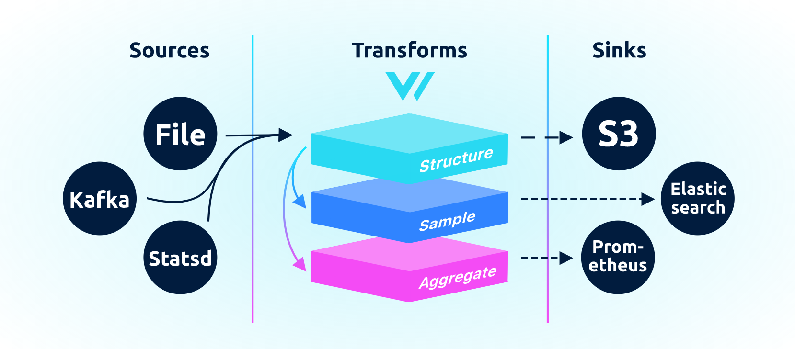
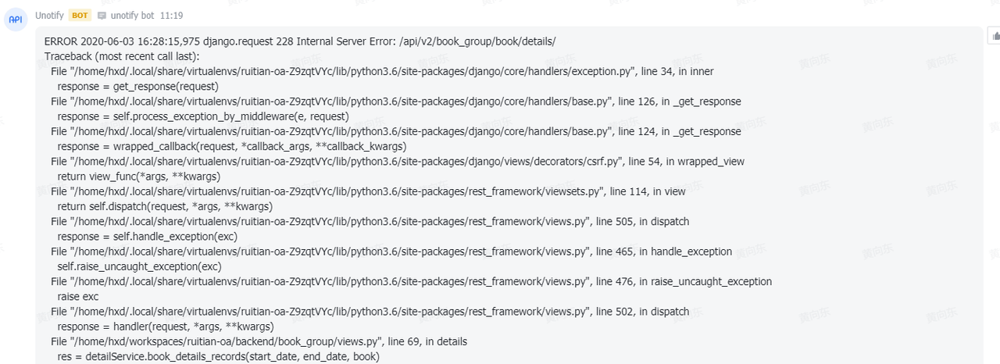
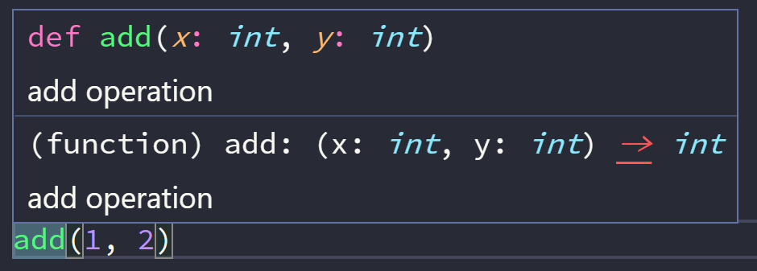
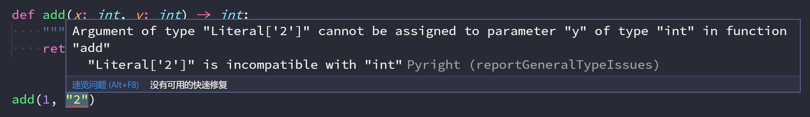
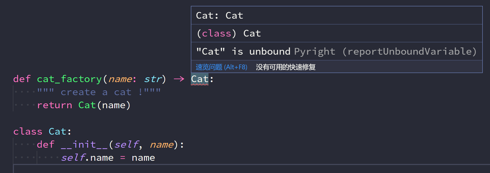
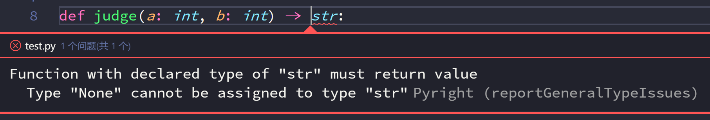
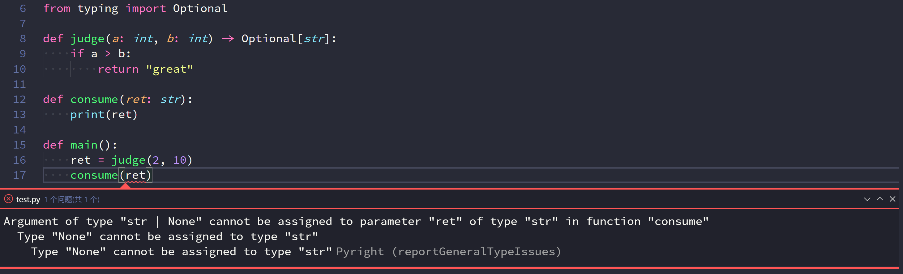
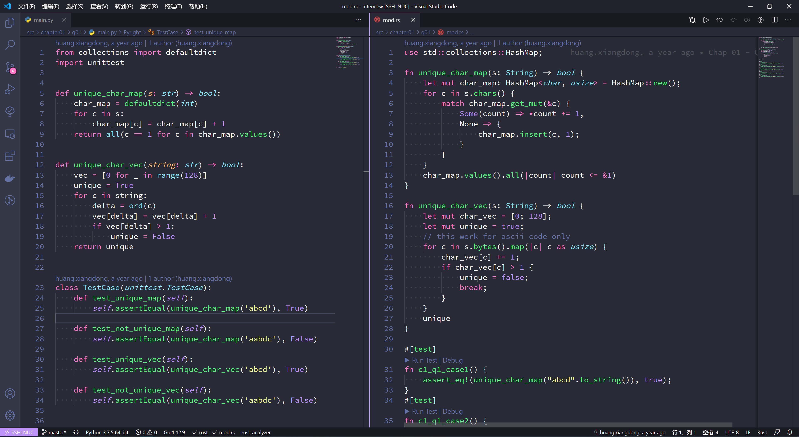
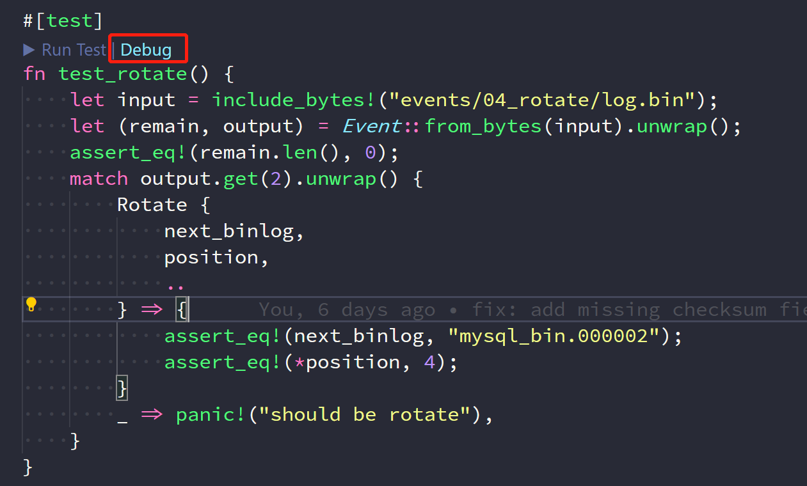

导言
个人博客，主要记录技术文章，也许会更新点别的。欢迎关注知乎专栏。

多少事，从来急；天地转，光阴迫。一万年太久，只争朝夕
文章
- 2018-06-24-openstack创建虚拟机源码阅读
- 2018-06-27-Bottle-框架中装饰器类和描述符应用
- 2019-04-17-使用devpi搭建本地源
- 2019-04-20-Python展开嵌套序列
- 2019-04-20-pipenv-使用简介
- 2019-04-22-深度系统rust开发环境搭建
- 2019-05-01-miniserve-miniserve简单美观的文件服务器
- 2019-05-05-magnum-stein-release-new-features
- 2019-05-12-rust-rc
- 2019-05-20-Python-Rust-迭代器类比
- 2019-06-28-搭建etcd服务发现服务
- 2019-07-03-OpenStack允许root用户使用ssh-key登录
- 2019-07-06-requirements.txt文件指定依赖
- 2019-07-10-我经常使用的Rust小crate
- 2019-07-14-Rust模块与文件
- 2019-07-18-Deepin安装Angular10+
- 2019-07-25-使用OSProfiler
- 2019-07-27-windows上使用vscode-remote
- 2019-08-04-使用rust-analyzer
- 2019-08-16-Python-package安装时安装额外文件
- 2019-08-31-Rust-命令行工具
- 2019-09-27-Fedora-CoreOS-尝鲜
- 2020-01-31-rust代码风格tips
- 2020-02-03-log4rs-Rust-log库
- 2020-02-29-impl-Trait-vs-dyn-Trait
- 2020-03-04-nom-cheatsheet
- 2020-03-09-gitlab-runner启动守护进程
- 2020-03-21-使用nom写parser
- 2020-05-10-使用nom写parser
- 2020-06-07-使用nom写parser
- 2020-06-25-Rust实现的日至收集工具
- 2020-07-19-typing+pyright-更正确的Python代码
- 2020-07-31-boxercrab发布
- 2020-08-16-使用nom写parser
- 2020-08-30-PowerShell配置
openstack创建虚拟机源码阅读
在openstack中,虚拟机的创建无疑是非常重要的,了解虚拟机创建流程并阅读nova模块关于创建虚拟机的源码对opensatck开发有很很大帮助,本篇文章将以openstack queens版本为基础.讲解创建虚拟机的源码.由于nova模块代码复杂,而且阅读源码所需知识较多,所以侧重于流程逻辑,源码阅读可能不够详尽指出.
nova模块结构

- DB: 用于存储nova服务相关数据的SQL数据库，通常为MySQL
- API：接收HTTP请求的组件,处理请求并通过oslo.messaging队列或HTTP与其他组件通信
- Scheduler: 决定虚拟机在哪个主机运行
- Network: 管理IP转发,桥接和vlans
- Compute: 管理虚拟机和虚拟机管理器直接的通信
- Conductor: 处理需要协同的请求(创建/重建),作为数据库代理,或者处理对象转换
创建虚拟机流程
为了简便,这里省略了认证过程,实际上一个请求发送过来,还要经过认证和鉴权等过程,确保该用户有权限创建虚拟机.
在openstack的wiki中给出创建一个虚拟的workflow,图有点大,但对于每个组件的工作内容写的非常详细
 我们可以把创建流程分成几个部分
我们可以把创建流程分成几个部分
处理请求
用户发送一个创建虚拟机的请求,Nova-Api接收到请求后,Nova-Api负责激活扩展插件,检查虚拟机名称,接收注入文件,提取新虚拟机的网络设置,检查配置和镜像等工作. 然后Nova-Api将处理好的参数集以JSON文件通过HTTP请求发送给Nova的Compute－Api.然后向用户发送带有虚拟机预留ID的相应（这时的相应码202,提示虚拟机创建成功,但实际上虚拟机还未真正创建成功) Compute-Api在接收到请求后将会检查创建政策,进一步检查虚拟机,网络,镜像和配额,然后正式建立虚拟机的配置. 接着在数据库中生成虚拟机的相应记录,而后通过消息队列发送请求让scheduler选择一个host来创建虚拟机.
虚拟机调度和资源准备
scheduler接收到消息后根据消息中filters对所有host进行过滤,最后选出某个host,然后跟新数据库,并通过消息队列向被选定的host发送创建虚拟机消息 被选定的host接收到队列的消息后在数据库中更新虚拟机和任务的状态,然后通过nova network-api为虚拟机创建或获取网络. 接着通过nova volume-api为虚拟机创建新的卷,决定虚拟机的块设备映射,并将卷挂载到虚拟机上 此时虚拟机的调度和资源准备都以完成.
在hypervisor上运行虚拟机
被选定的host获取镜像,建立块设备映射,最后生成libvirt.xml最后执行hypervisor的spawn()方法,至此,虚拟机已经在host上运行了.最后一步是跟新虚拟机和任务的状态.
源码阅读
下面将根据虚拟机创建时调用的模块顺序阅读代码
Nova-Api
Nova-Api将处理不同类型的请求写成了各种controler类,而处理创建虚拟机的类被称为ServerControler
# nova/api/openstack/compute/servers.py
class ServersController(wsgi.Controller):
# 为了简明,省略了很多用于检查的装饰器
@wsgi.response(202)
def create(self, req, body):
"""Creates a new server for a given user."""
context = req.environ['nova.context']
server_dict = body['server']
password = self._get_server_admin_password(server_dict)
name = common.normalize_name(server_dict['name'])
description = name
# create方法干的是些从请求中提取并检查参数的脏活
# 省略...
try:
# 依然是构建参数的代码...
# 调用compute_api创建虚拟机
(instances, resv_id) = self.compute_api.create(context,
inst_type,
image_uuid,
display_name=name,
display_description=description,
availability_zone=availability_zone,
forced_host=host, forced_node=node,
metadata=server_dict.get('metadata', {}),
admin_password=password,
requested_networks=requested_networks,
check_server_group_quota=True,
supports_multiattach=supports_multiattach,
**create_kwargs)
# 错误处理...
compute-api
# nova/compute/api.py
class API(base.Base):
def create(self, context, instance_type,
image_href, kernel_id=None, ramdisk_id=None,
min_count=None, max_count=None,
display_name=None, display_description=None,
key_name=None, key_data=None, security_groups=None,
availability_zone=None, forced_host=None, forced_node=None,
user_data=None, metadata=None, injected_files=None,
admin_password=None, block_device_mapping=None,
access_ip_v4=None, access_ip_v6=None, requested_networks=None,
config_drive=None, auto_disk_config=None, scheduler_hints=None,
legacy_bdm=True, shutdown_terminate=False,
check_server_group_quota=False, tags=None,
supports_multiattach=False):
"""准备实例创建工作，然后将实例信息发送至scheduler，
由scheduler计算host上创建和在DB创建记录。
"""
# preparation
# 为了简介,所有参数简略为args和kwargs
self_create_instance(*args, **kwargs)
def _create_instance(self, context, instance_type,
image_href, kernel_id, ramdisk_id,
min_count, max_count,
display_name, display_description,
key_name, key_data, security_groups,
availability_zone, user_data, metadata, injected_files,
admin_password, access_ip_v4, access_ip_v6,
requested_networks, config_drive,
block_device_mapping, auto_disk_config, filter_properties,
reservation_id=None, legacy_bdm=True, shutdown_terminate=False,
check_server_group_quota=False, tags=None,
supports_multiattach=False):
"""核查所有参数"""
# verifying
pass
# 获取镜像信息
if image_href:
# if image_href is provied, get image via glance api
image_id, boot_meta = self._get_image(context, image_href)
else:
# if image_href is not proved, get image metadata from bdm
image_id = None
boot_meta = self._get_bdm_image_metadata(
context, block_device_mapping, legacy_bdm)
# 继续检查参数
# 由于block device mapping有两种版本,为了兼容,需要检查并在必要时转换
block_device_mapping = self._check_and_transform_bdm(context,
base_options, instance_type, boot_meta, min_count, max_count,
block_device_mapping, legacy_bdm)
# go on checking
# 为了支持cell特性,参见cell wiki
# https://docs.openstack.org/nova/ocata/cells.html
if CONF.cells.enable:
# 创建instance模型对象
# 检查quota
# 调用rpc api将消息发送到队列
self.compute_task_api.build_instance(*args, **kwargs)
else:
compute_task_api.schedule_and_build_instances(*args, **kwargs)
return instances, reservation_id
调度和消息传递代码
nova组件之间可以通过rpc api以消息队列通信,而最后的真正执行的任务的类都在manager.py文件中定义.这里我们方便理解省略调度代码
# nova/conductor/api.py
class ComputeTaskAPI(object):
def schedule_and_build_instance(self, *args, **kwargs):
# very simple method
# call rpc api only
self.conductor_compute_rpc_api.schedule_and_build_instance(*args, **kwargs)
# nova/conductor/rpcapi.py
class ComputeTaskAPI(object):
def schedule_and_build_instance(self, *args, **kwargs):
# 构建参数和api版本检查
# 最后将其发送到消息队列
cctxt.cast(context, 'schedule_and_build_instance', **kwargs)
manager代码
# nova/compute/manager.py
class ComputeManager(object):
@wrap_exception()
@reverts_task_state
@wrap_instance_fault
def build_and_run_instance(self, *args, **kwargs):
# 给资源加锁,避免竞争
@utils.synchronized(instance.uuid)
def _locked_do_build_and_run_instance(*args, **kwargs):
with self._build_semaphore:
try:
result = self._do_build_and_run_instance(*args, **kwargs)
# handle exceptions
pass
# 由于创建虚拟机的工作可能会持续很长时间,为了避免进程阻塞
# 将这个任务分发给某个worker
utils.spawn_n(_locked_do_build_and_run_instance,
context, instance, ...)
def _do_build_and_run_instance(self, *args, **kwargs):
# 更新虚拟机和任务状态
# 解码注入文件
try:
with timeutils.StopWatch() as timer:
self._build_and_run_instance(*args)
# handle exceptions
def _build_and_run_instance(self, *args, **kwargs):
# 获取 image ref
try:
scheduler_hints = self._get_scheduler_hints(filter_properties, request_spec)
rt = self._get_resource_tracker()
with rt.instance_claime(context, instance, node, limits):
# 获取群组策略和镜像metadata
# 通过调用_build_resources创建network和volume
with self._build_resources(*args) as resources:
# handle vm and task state
# spawn instance on hypervisor
with timeuitls.StopWatch() as time:
# 通过driver创建xml,然后真正运行虚拟机
self.driver.spawn(*args, **kwargs)
# handle exceptions
Bottle 框架中装饰器类和描述符应用
这篇是很久以前发在知乎上的文章, 现在把它搬运过来
最近在阅读Python微型Web框架Bottle的源码，发现了Bottle中有一个既是装饰器类又是描述符的有趣实现。刚好这两个点是Python比较的难理解，又混合在一起，让代码有些晦涩难懂。但理解代码之后不由得为Python语言的简洁优美赞叹。所以把相关知识和想法稍微整理，以供分享。
正文
bottle是Python的一个微型Web框架，所有代码都在一个bottle.py文件中，只依赖标准库实现，兼容Python 2和Python 3，而且最新的稳定版0.12代码也只有3700行左右。虽然小，但它实现了Web框架基本功能。这里就不以过多的笔墨去展示Bottle框架，需要的请访问其网站了解更多。这里着重介绍与本文相关的重要对象request。在Bottle里，request对象代表了当前线程处理的请求，客户端发送的请求数据如表单数据，请求网站和cookie都可以从request对象中获得。下面是官方文档中的两个例子 from bottle import request, route, response, template
# 获取客户端cookie以实现登陆时问候用户功能
@route('/hello')
def hello():
name = request.cookie.username or 'Guest'
return template('Hello {{name}}', name=name)
# 获取形如/forum?id=1&page=5的查询字符串中id和page变量的值
@route('/forum')
def display_forum():
forum_id = request.query.id
page = request.query.page or '1'
return template('Forum ID: {{id}} (page {{page}})', id=forum_id, page=page)
那么Bottle是如何实现的呢？根据WSGI接口规定，所有的HTTP请求信息都包含在一个名为envrion的dict对象中。所以Bottle要做的就是把HTTP请求信息从environ解析出来。在深入Request类如何实现之前先要了解下Bottle的FormsDict。FormsDict与字典类相似，但扩展了一些功能，比如支持属性访问、一对多的键值对、WTForms支持等。它在Bottle中被广泛应用，如上面的示例中cookie和query数据都以FormsDict存储，所以我们可以用request.query.page的方式获取相应属性值。
下面是0.12版Bottle中Request类的部分代码，0.12版中Request类继承了BaseRequest，为了方便阅读我把代码合并在一起，同时还有重要的DictProperty的代码。需要说明的是Request类__init__传入的environ参数就是WSGI协议中包含HTTP请求信息的envrion，而query方法中的_parse_qsl函数可以接受形如/forum?id=1&page=5原始查询字符串然后以[(key1, value1), (ke2, value2), ...]的list返回。
class DictProperty(object):
""" Property that maps to a key in a local dict-like attribute. """
def __init__(self, attr, key=None, read_only=False):
self.attr, self.key, self.read_only = attr, key, read_only
def __call__(self, func):
functools.update_wrapper(self, func, updated=[])
self.getter, self.key = func, self.key or func.__name__
return self
def __get__(self, obj, cls):
if obj is None: return self
key, storage = self.key, getattr(obj, self.attr)
if key not in storage: storage[key] = self.getter(obj)
return storage[key]
def __set__(self, obj, value):
if self.read_only: raise AttributeError("Read-Only property.")
getattr(obj, self.attr)[self.key] = value
def __delete__(self, obj):
if self.read_only: raise AttributeError("Read-Only property.")
del getattr(obj, self.attr)[self.key]
class Request:
def __init__(self, environ=None):
self.environ {} if environ is None else envrion
self.envrion['bottle.request'] = self
@DictProperty('environ', 'bottle.request.query', read_only=True)
def query(self):
get = self.environ['bottle.get'] = FormsDict()
pairs = _parse_qsl(self.environ.get('QUERY_STRING', ''))
for key, value in pairs:
get[key] = value
return get
query方法的逻辑和代码都比较简单，就是从environ中获取'QUERY_STRING'，并用把原始查询字符串解析为一个FormsDict，将这个FormsDict赋值给environ['bottle.request.query']并返回。但这个函数的装饰器的作用就有些难以理解，装饰器的实现方式都是"dunder"特殊方法，有些晦涩难懂。如果上来就看这些源码可能难以理解代码实现的功能。那不如这些放一边，假设自己要实现这些方法，你会写出什么代码。 一开始你可能写出这样的代码。
# version 1
class Request:
"""
some codes here
"""
def query(self):
get = self.environ['bottle.get'] = FormsDict()
pairs = _parse_qsl(self.environ.get('QUERY_STRING', ''))
for key, value in pairs:
get[key] = value
return get
这样确实实现了解析查询字符串的功能，但每次在调用这个方法时都需要对原始查询字符串解析一次，实际上在处理某特请求时，查询字符串是不会改变的，所以我们只需要解析一次并把它保存起来，下次使用时直接返回就好了。另外此时的query方法还是一个普通方法，必须使用这样的方法来调用它
# 获取id
request.query().id
# 获取page
request.query().page
query后面的小括号让语句显得不那么协调，其实就是我觉得它丑。要是也能和官方文档中的示例实现以属性访问的方式获取相应的数据就好了。所以代码还得改改。
# query method version 2
class Request:
"""
some codes here
"""
@property
def query(self):
if 'bootle.get.query' not in self.environ:
get = self.environ['bottle.get'] = FormsDict()
pairs = _parse_qsl(self.environ.get('QUERY_STRING', ''))
for key, value in pairs:
get[key] = value
return self.environ['bottle.get.query']
第二版改变的代码就两处，一个是使用property装饰器，实现了request.query的访问方式；另一个就是在query函数体中增加了判断'bottle.get.query'是否在environ中的判断语句，实现了只解析一次的要求。第二版几乎满足了所有要求，它表现得就像Bottle中真正的query方法一样。但它还是有些缺陷。 首先，Request类并不只有query一个方法，如果要编写完整的Request类就会发现，有很多方法的代码与query相似，都是从environ中解析出需要的数据，而且都只需要解析一次，保存起来，第二次或以后访问时返回保存的数据就好了。所以可以考虑将属性管理的代码从方法体内抽象出来，正好Python中的描述符可以实现这样的功能。另外如果使用Bottle的开发者在写代码时不小心尝试进行request.query = some_data的赋值时，将会抛出如下错误。
>>> AttributeError: can't set attribute
我们确实希望属性是只读的，在对其赋值时应该抛出错误，但这样的报错信息并没有提供太多有用的信息，导致调bug时一头雾水，找不到方向。我们更希望抛出如
>>> AttributeError: Read-only property
这样明确的错误信息。 所以第三版的代码可以这样写
# query method version 3
class Descriptor:
def __init__(self, attr, key, getter, read_only=False):
self.attr = attr
self.key = key
self.getter = getter
self.read_only = read_only
def __set__(self, obj, value):
if self.read_only:
raise AttributeError('Read only property.')
getattr(obj, self.attr)[self.key] = value
def __get__(self, obj, cls):
if obj is None:
return self
key, storage = self.key, getattr(obj, self.attr)
if key not in storage:
storage[key] = self.getter(obj)
return storage[key]
def __delete__(self, obj):
if self.read_only:
raise AttributeError('Read only property.')
del getattr(obj, self.attr)[self.key]
class Reqeust:
"""
some codes
"""
def query(self):
get = self.environ['bottle.get'] = FormsDict()
pairs = _parse_qsl(self.environ.get('QUERY_STRING', ''))
for key, value in pairs:
get[key] = value
return get
query = Descriptor('environ', 'bottle.get.query', query, read_only=True)
第三版的代码没有使用property装饰器，而是使用了描述符这个技巧。如果你之前没有见到过描述符，在这里限于篇幅只能做个简单的介绍，但描述符涉及知识点众多，如果有不清楚之处可以看看《流畅的Python》第20章属性描述符，里面有非常详细的介绍。
简单来说，描述符是对多个属性运用相同存取逻辑的一种方式，如Bottle框架里我们需要对很多属性都进行判断某个键是否在environ中，如果在则返回，如果不在，需要解析一次这样的存取逻辑。而描述符需要实现特定协议，包括__set__,get, __delete___方法，分别对应设置，读取和删除属性的方法。他么的参数也比较特殊，如__get__方法的三个参数self, obj, cls分别对应描述符实例的引用，对第三版的代码来说就是Descriptor('environ', 'bottle.get.query', query, read_only=True)创建的实例的引用；obj则对应将某个属性托管给描述的实例对象的引用，对应的应该为request对象；而cls则为Request类的引用。在调用request.query时编译器会自动传入这些参数。如果以Request.query的方式调用，那么obj参数的传入值为None，这时候通常的处理是返回描述符实例。
在Descriptor中__get__方法的代码最多，也比较难理解，但如果记住其参数的意义也没那么难。下面以query的实现为例，我添加一些注释来帮助理解
key, storage = self.key, getattr(obj, self.attr)
# key='bottle.get.query'
# storage = environ 即包含HTTP请求的信息的environ
# 判断envrion中是否包含key来决定是否需要解析
if key not in storage:
storage[key] = self.getter(obj)
# self.getter(obj)就是调用了原来的query方法，不过要传入一个Request实例，也就是obj
return storage[key]
而__set__, __delete__代码比较简单，在这里我们把只读属性在赋值和删除时抛出的错误定制为AttributeError('Read only property.')，方便调试。 通过使用描述符这个有些难懂的方法，我们可以在Request的方法中专心于编写如何解析的代码，不用担心属性的存取逻辑。和在每个方法中都使用if判断相比高到不知道哪里去。但美中不足的是，这样让我们的方法代码后面拖着一个“小尾巴”，即
query = Descriptor('envrion', 'bottle.get.query', query, read_only=True)
怎么去掉这个这个“小尾巴“呢？回顾之前的代码几乎都是对query之类的方法进行修饰，所以可以尝试使用装饰器，毕竟装饰器就是对某个函数进行修饰的，而且我们应该使用参数化的装饰器，这样才能将envrion等参数传递给装饰器。如果要实现参数化装饰器就需要一个装饰器工厂函数，也就是说装饰器的代码里需要嵌套至少3个函数体，写起来有写绕，代码可阅读性也有差。更大的问题来自如何将描述符与装饰器结合起来，因为Descriptor是一个类而不是方法。
解决办法其实挺简单的。如果知道Python中函数也是对象，实现了__call__方法的对象可以表现得像函数一样。所以我们可以修改Descirptor的代码，实现__call__方法，让它的实例成为callable对象就可以把它用作装饰器；而要传入的参数可以以实例属性存储起来，通过self.attribute的形式访问，而不是像使用工厂函数实现参数化装饰器时通过闭包来实现参数的访问获取。这时候再来看看Bottle里的DictProperty代码
class DictProperty(object):
""" Property that maps to a key in a local dict-like attribute. """
def __init__(self, attr, key=None, read_only=False):
self.attr, self.key, self.read_only = attr, key, read_only
def __call__(self, func):
functools.update_wrapper(self, func, updated=[])
self.getter, self.key = func, self.key or func.__name__
return self
def __get__(self, obj, cls):
if obj is None: return self
key, storage = self.key, getattr(obj, self.attr)
if key not in storage: storage[key] = self.getter(obj)
return storage[key]
def __set__(self, obj, value):
if self.read_only: raise AttributeError("Read-Only property.")
getattr(obj, self.attr)[self.key] = value
def __delete__(self, obj):
if self.read_only: raise AttributeError("Read-Only property.")
del getattr(obj, self.attr)[self.key]
其实就是一个有描述符作用的装饰器类，它的使用方法很简单：
@DictProperty('environ', 'bottle.get.query', read_only=True)
def query(self):
""" some codes """
拆开会更好理解点：
property = DictProperty('environ', 'bottle.get.query', read_only=True)
@property
def query(self):
""" some codes """
再把@实现的语法糖拆开：
def query(self):
""" some codes """
property = DictProperty('environ', 'bottle.get.query', read_only=True)
query = property(query) # @实现的语法糖
再修改以下代码形式：
def query(self):
""" some codes """
query = DictProperty('environ', 'bottle.get.query', read_only=True)(query)
是不是和第三版的实现方式：
def query(self):
""" some codes """
query = Descriptor('environ', 'bottle.get.query', query, read_only=True)
非常相似。 但我们可以使用装饰器把方法体后面那个不和谐的赋值语句”小尾巴“去掉，将属性存取管理抽象出来，而且只需要使用一行非常简便的装饰器把这个功能添加到某个方法上。这也许就是Python的美之一吧。
写在后面
DictProperty涉及知识远不止文中涉及的那么简单，如果你还是不清楚DictProperty的实现功能，建议阅读《流畅的Python》第7章和第22章，对装饰器和描述符有详细的描述，另外《Python Cookbook》第三版第9章元编程有关于参数化装饰器和装饰器类的叙述和示例。如果你对Bottle为什么要实现这样的功能感到困惑，建议阅读Bottle的文档和WSGI相关的文章。 其实前一阵再阅读Bottle源码时就想写一篇文章，但奈何许久不写东西文笔生疏加上医院实习期间又比较忙，一直推到现在才终于磕磕绊绊地把我阅读的Bottle源码的一些感悟写出来，希望对喜欢Python的各位有些帮助把。
使用 devpi 搭建本地 pypi 源
可以使用 docker 快速部署一个 Python 本地镜像源
# 设置 devpi 服务器管理员密码
DEVPI_PASSWORD = 123
mkdir -p /src/docker/devpi
mkdir /tmp/wheelhouse
docker run -d --name devpi \
--publish 3141:3141 \
--volume /tmp/wheelhouse:/wheelhouse
--volume /srv/docker/devpi:/data \
--env=DEVPI_PASSWORD=$DEVPI_PASSWORD \
--restart always \
muccg/docker-devpi
接着先在本地下载好所需的wheel包，requirements.txt文件内容即为我们需要的 Python 库列表
pip wheel --wheel-dir /tmp/wheelhouse -r requirements.txt
如果从 pip 源下载的库已经是 wheel 包的话文件将会被直接放在 /tmp/wheelhouse 内，如果是
tar 包，pip 会先 build 出 wheel 包，这可能需要一些时间。下载完成后 wheelhouse 内容类似
于
ll /tmp/wheelhouse
total 524K
-rwxrwxrwx 1 rookie rookie 155K Apr 6 23:40 certifi-2019.3.9-py2.py3-none-any.whl
-rwxrwxrwx 1 rookie rookie 131K Apr 6 23:40 chardet-3.0.4-py2.py3-none-any.whl
-rwxrwxrwx 1 rookie rookie 58K Apr 6 23:40 idna-2.8-py2.py3-none-any.whl
-rwxrwxrwx 1 rookie rookie 57K Apr 6 23:40 requests-2.21.0-py2.py3-none-any.whl
-rwxrwxrwx 1 rookie rookie 116K Apr 6 23:40 urllib3-1.24.1-py2.py3-none-any.whl
下载完成后如果本地环境安装了devpi客户端，可以直接上传 wheel 包，不过由于我们在创建容器时已经
把 wheelhouse 文件夹挂载进去，也可以在在容器里直接操作
# 进入容器
docker exec -it -u root devpi bash
# 登陆并上传
devpi use http://<host_ip>:3141/root/public --set-cfg
devpi login root 123
devpi upload --from-dir /wheelhouse
上传完成后可以使用 http://<host_ip>:3141 查看 pip 本地源服务器状态。
若要临时使用可以使用 pip install 的 --index 和 --trust-host 选项
pip install --index http://<host_ip>:3141/root/public/+simple/ \
--trusted-host <host_ip>
或者修改 pip.conf 文件永久使用
# vim ~/.pip/pip.conf
[global]
index_url = http://<host_ip>:3141/root/public/+simple/
trusted-host = <host_ip>
[search]
index = http://<host_ip>:3141/root/public/
Python 展开嵌套序列
可以通过 yield from 语句加上递归器来展开嵌套序列
from collections import Iterable
def flatten(items, ignore_types=(str, bytes)):
for x in items:
if isinstance(x, Iterable) and not isinstance(x, ignore_types):
yield from flatten(x)
else:
yield x
items = [1, 2, [3, 4, [5, 6], 7], 8]
# 结果未 1 2 3 4 5 6 7 8
for x in flatten(items):
print(x)
isinstance(x, Iterable) 会检查某个元素是否可迭代，如果可迭代，yield from 会返回所有
项的值。
此外 igonre_types 还可以让你避免展开某些类型，比如字符串
items = ['Dave', 'Paula', ['Thomas', 'Lewis']]
for x in flatten(items):
print(x)
Dave
Paula
Thomas
Lewis
pipenv 使用简介
之前在开发时一直使用 conda 使用作为虚拟环境管理工具，但有时候会经常会临时性的需要一个虚拟环境，
如果使用 conda create 创建一个新环境，耗时不说，有时候还忘了删除，最后系统里一堆的虚拟环境。
偶然发现 pipenv 后试用了一下，感觉它的工作流相比之前虚拟环境环境加 requirements.txt
的方式更加简单方便。
安装
pipenv 最好和 Python3 一起使用
最简单的方式是通过 pip 安装
pip3 install pipenv
如果是 mac 用户也可以通过 Homebrew 安装
brew install pipenv
如果没有安装 pip 可以通过以下方式安装
https://raw.githubusercontent.com/kennethreitz/pipenv/master/get-pipenv.py | python
使用
创建新项目
mkdir myproject
pipenv install
这会在 myproject 文件下创建 Pipfile 和 Pipfile.lock 文件，同时创建虚拟环境
虚拟环境名称为 pipenv 加项目路径哈希值，如 pipenv-7BgKv-oX
ll
-rw-r--r-- 1 rookie rookie 138 4月 20 20:24 Pipfile
-rw-r--r-- 1 rookie rookie 453 4月 20 20:24 Pipfile.lock
虚拟机环境默认位于 ~/.local/share/virtualenvs/，由于 pipenv 通过路径名哈希值与虚拟环境
建立映射关系，因此如果移动项目会导致虚拟环境不可用。可以通过在 .bashrc 添加
export PIPENV_VENV_IN_PROJECT=1 让 pipenv 在项目文件中创建虚拟环境，这时候虚拟环境位于 myproject/.venv 文件夹下。
如果项删除虚拟环境，在项目顶层目录下运行
pipenv --rm
如果要指定 Python 版本，可以通过 --python 完成，如我要安装 python3.7 的虚拟环境
pipenv --python 3.7
配置文件
# cat Pipfile
[[source]]
name = "pypi"
url = "https://pypi.org/simple"
verify_ssl = true
[dev-packages]
[packages]
[requires]
python_version = "3.6"
[[source]] 模块指定了 pip 源位置，通常国内 pip 源加快下载速度
[[source]]
name = "tuna"
url = "https://pypi.tuna.tsinghua.edu.cn/simple/"
verify_ssl = true
[[source]]
name = "pypi"
url = "https://pypi.org/simple"
verify_ssl = true
[dev-packages]
[packages]
[requires]
python_version = "3.6"
安装和卸载 packages
你可以编辑 packages, 添加项目需要的 Python 库，如 requests='**'，甚至可以指定不同
平台下的包配置，详细配置参考 Advanced Usage of Pipenv
不过你可以通过pipenv install requests
来安装，pipenv 将会自动更新 Pipfile 和 Pipfile.lock。
[dev-packages] 则是一些开发依赖但不是项目依赖包的存放目录，如 pylint 等 pep8 检查工具
可以在安装时指定 pipenv install --dev将某个包声明为 dev-package
卸载 package 也很简单
pip uninstall
如果通过 pipenv 命令安装和卸载 package，安装或卸载完成后还会更新 Pipfile.lock 文件，有时候会卡在这个步骤。通常可以 ctrl+c 强制推出，删除 Pipfile.lock, 然后
pipenv lock
重新生成该文件
当然，你也可以通过设置环境变量 PIPENV_SKIP_LOCK=1 跳过lock
进入和退出虚拟环境
进入虚拟环境
cd myproject
pipenv shell
退出虚拟环境
pipenv exit
高级用法
有时候某些 package 需要指定特定的 pip 源，可以通过如下方式指定，非常简便
[[source]]
url = "https://pypi.python.org/simple"
verify_ssl = true
name = "pypi"
[[source]]
url = "http://pypi.home.kennethreitz.org/simple"
verify_ssl = false
name = "home"
[dev-packages]
[packages]
requests = {version="*", index="home"}
maya = {version="*", index="pypi"}
records = "*"
有时候需要生成 requirements.txt 文件
pipenv lock -r
如果只需要生成 dev-pakcages 列表，也很简单
pipenv lock -r --dev
自动载入环境变量文件。如果 .env 文件在项目根目录下，pipenv shell 和 pipenv run 将
会自动载入文件中的环境变量。
$ cat .env
HELLO=WORLD
$ pipenv run python
Loading .env environment variables…
Python 2.7.13 (default, Jul 18 2017, 09:17:00)
[GCC 4.2.1 Compatible Apple LLVM 8.1.0 (clang-802.0.42)] on darwin
Type "help", "copyright", "credits" or "license" for more information.
>>> import os
>>> os.environ['HELLO']
'WORLD'
pipenv 还支持自定义命令，这对于某些开发过程中经常使用的命令来说非常方便。
在 Pipfile 中添加 [scripts]
[scripts]
printspam = "python -c \"print('I am a silly example, no one would need to do this')\""
通过 pipenv run <custom_command> 即可运行自定义命令，如
pipenv run echospam "indeed"
I am really a very silly example indeed
更多高级用户可以参考 官方文档
深度系统rust开发环境搭建
由于买了台 NUC 机子，开发环境由 MacOS 变成了 Deepin 也就是深度系统，重新折腾了 Rust 开发 环境。
开发环境为 Deepin + vscode + lldb。
安装 rust
linux 下 rust 安装非常简单，使用以下命令并遵循指导就好了
curl https://sh.rustup.rs -sSf | sh
建议使用 stable toolchain, 因为 vscode 使用的 rust 插件 rls server 不支持 nightly toolchain
由于国内使用 cargo 工具会被墙，所以这里需要改用中科大的源
mkdir ~/.cargo
# vim ~/.cargo/config
[source.crates-io]
registry = "https://github.com/rust-lang/crates.io-index"
replace-with = 'ustc'
[source.ustc]
registry = "git://mirrors.ustc.edu.cn/crates.io-index"
安装 vscode
深度系统的应用商店就有 vscode，进去搜索然后下载安装即可。安装完成后，点击
vscode 的插件市场，找到 Rust(rls) 插件安装即可
安装 LLDB
我使用 LLDB 作为 debugger， 他的安装也非常简单
sudo apt install lldb
接着为 vscode 安装 lldb 插件，在插件市场搜索 CodeLLDB，确认并安装。
此时开发环境基本上就搭建好了。 如果想更新 rust
rustup update
增加 toolchain
rustup toolchain install nightly
将默认 toolchain 更换为 nightly
rustup default nightly
反之亦然
miniserve 简单美观的文件服务器
如果想建立一个简单静态文件或目录服务器，通常可以用 Python 实现，而且非常简单
# Python 2
python -m SimpleHTTPServer <port>
# Python 3
python3 -m http.server <port>
一般情况下，这就够用了，但如果这样的服务器在浏览器提供的界面有些简陋，而且不提供认证服务。更复杂 的实现方法是使用 Nginx，但 Nginx 的配置相对繁琐，这里推荐一个使用 Rust 基于 Actix 框架实现静态文件或文件夹服务器 miniserve，demo如下

除了更加漂亮的界面和基本用户认证外 miniserve 还支持如下功能
- 将当前文件夹压缩后下载
- 界面上传文件（可配置）
- 支持监听多网卡
- 自动更改 MIME
- 超级快（powered by Rust and Actix）
下载
在发行版界面找到操作系统对应的版本，文件很小，最大的 osx 也仅有 3.2MB。
Linux
sudo curl -L https://github.com/svenstaro/miniserve/releases/download/v0.4.1/miniserve-linux-x86_64 -o /usr/local/bin/miniserve
sudo chmod +x /usr/local/bin/miniserve
OSX
sudo curl -L https://github.com/svenstaro/miniserve/releases/download/v0.4.1/miniserve-osx-x86_64 -o /usr/local/bin/miniserve
sudo chmod +x /usr/local/bin/miniserve
Windows
windows 下载好 exe 文件可直接运行
Cargo
如果电脑上安装了 Rust 和 Cargo，也可以通过 Cargo 安装，但由于 miniserve 仅支持 nightly channel，所以你得先切换到 nightly channel
rustup toolchain add nightly
rustup default nightly
cargo install miniserve
Docker
miniserve 在 docker hub 上的镜像名为 svenstaro/miniserve
docker pull svenstaro/miniserve
使用
全部参数如下
miniserve --help
miniserve 0.4.1
Sven-Hendrik Haase <svenstaro@gmail.com>, Boastful Squirrel <boastful.squirrel@gmail.com>
For when you really just want to serve some files over HTTP right now!
USAGE:
miniserve [FLAGS] [OPTIONS] [--] [PATH]
FLAGS:
-u, --upload-files Enable file uploading
-h, --help Prints help information
-P, --no-symlinks Do not follow symbolic links
-o, --overwrite-files Enable overriding existing files during file upload
--random-route Generate a random 6-hexdigit route
-V, --version Prints version information
-v, --verbose Be verbose, includes emitting access logs
OPTIONS:
-a, --auth <auth> Set authentication (username:password)
-c, --color-scheme <color_scheme> Default color scheme [default: Squirrel] [possible values:
Archlinux, Zenburn, Monokai, Squirrel]
-i, --if <interfaces>... Interface to listen on
-p, --port <port> Port to use [default: 8080]
ARGS:
<PATH> Which path to serve
服务某个文件夹
miniserve some_dir
服务单个文件
miniserve file
启用用户认证
--auth user:passwd 可以提供简单用户认证服务
miniserve --auth joe:123 some_dir
在根目录后添加随机6位URL
miniserve -i 192.168.0.1 --random-route some_dir
# 服务器URL为 http://192.168.0.1/c78b6
绑定多张网卡
miniserve -i 192.168.0.1 -i 10.13.37.10 -i ::1 some_dir
使用容器
# 后台运行
docker run -d --name miniserve -p 8080:8080 --rm svenstaro/miniserve some_dir
# 前台运行
docker run --it --name miniserve -p 8080:8080 --rm svenstaro/miniserve some_dir
Magnum Stein Release New Features
原文链接 Magnum Release Note - Stein
新特性
8.0.0-8
- 新增 Nginx 作为 K8s Ingress 额外控制器. 可以通过标签
ingress_controller=niginx标签指定 - 使用 Node Problem Detector, Draino 和 AutoScaler 支持 k8s 集群自愈，通过
auto_healing_enabled=off/on来开启或关闭 - 集群支持多 DNS 服务器设置。多 DNS 通过
,分割，如8.8.8.8,114.114.114.114
8.0.0
- 在 k8s_fedora_atomic 驱动中在主节点部署 kubelet。之前这只能在 calico 插件启动时完成，现在 kubelet 可以在所有情况下部署。 对于监控主节点（如部署 fluentd）或者使用 k8s control-plane 自管理时非常有用
- 添加与 OpenStack Octavia 组件交互的代码
- 新增
magnum-status upgrade check命令。这个命令允许在 Magnum 升级前运行各种检查用于保证安全升级 - 为了获得更好的集群模板版本控制和减轻维护公共集群模板的痛苦，现在支持改变集群模板名称
- 新增
tiller_enabled=true/false标签控制是否在 k8s_fedora_atomic 集群安装 tiller。默认为 false。新增tiller_tag标签来选择 tiller 版本, 如果未设置，将会选择与 helm 客户端版本匹配的 tiller。tiller 可以通过container_infra_prefix标签从私有镜像中拉取。添加tiller_namespace标签来选择将 tiller 安装在哪个命名空间，默认 magnum-tiller。tiller 通过 k8s job 安装，job 所需的 docker 镜像为 docker.io/openstackmagnum/helm-client - 对于 k8s_fedora_atomic 集群，会将 flannel 作为 cni 插件运行。部署方法来自 flannel 上游文档。 新增
flannel_cni_tag标签控制 cni 插件版本，具体版本见quay.io/repository/coreos/flannel-cni - 新增
grafana_tag和prometheus_tag标签控制 k8s_fedora_atomic 集群 grafana 和 prometheus 版本，默认为 5.1.5 和 v1.8.2 - 添加
heat_container_agent_tag标签以允许用户选择 heat-agent 。stein 默认：stein-dev。 - 在 k8s 集群中添加 heat container agent 以支持集群滚动升级
- 安装 metric-server 服务以替换 heapster. metric-server 通过 helm 安装，所以
tiller_enable标签必须设置为 true。为保证兼容性 Heapster 服务忍让可用。 - 添加
monitoring_enabled标签控制是否通过 helm 安装 prometheus-operator 监控套件。新增grafana_admin_passwd标签设置 grafana 面板密码，默认为 prom_operator - 在主节点机器创建完成后，将会立即开始创建 k8s 工作节点，而不是等待主节点所有服务创建完成之后再开始，这会显著减少集群创建时间
- 新增
master_lb_floating_ip_enabled标签控制是否为主节点负载均衡分配浮动 IP，这个标签只在启用master_lb_enabled后才生效。master_lb_floating_ip_enblaed默认值与floating_ip_enabled标签相同，floating_ip_enabled标签现在只控制是否为所有节点分配浮动 IP - 现在 k8s cloud-provider-openstack 支持 keystone 认证和鉴权的钩子，通过这个特性，用户可以通过
keystone_aut-enabled来启用 keystone 认证和鉴权 ingress_controler新增 octavia 选项，新增octavia_ingress_controller_tag标签控制是部署 octava-ingress-controller- 使用 ClusterIP 作为默认的 Prometheus 服务类型，因为 NodePort 服务需要额外配置正确的安全组。 k8s 管理员依然可以在集群创建成功后更改
- 密钥不在是必选项，因为用户可以在镜像中预配置其他登录选项
- 新增 k8s 预删除选项以在删除集群之前删除一些云平台资源，目前只有负载均衡服务类型需要删除
- 现在 k8s 的 OpenStack 驱动支持自动伸缩。但目前 Magnum 没有办法让外部消费者控制删除哪个节点。可选方案时直接调用 Heat API，但这显然不是最好解决办法，同时也让 k8s 社区困惑。综上所属，新增 Magnum API: POST
/actions/resize - 现在为每个主节点组和工作节点组添加了一个服务器组，以提高灵活性。
Rc 类型总结
ref: alloc::rc::Rc - Rust
std::rc::Rc 是单线程引用计数指针。'RC' 代表 'Reference Counted'。
翻阅 module-level-documentation 查看更多信息
Rc 的固有方法都是关联函数，这意味在使用应该是用类似 Rc::get_mut(&mut value) 而不是 value.get_mut() 的方式调用。这可以避免与其包含的类型方法冲突。
方法
new
pub fn new(value: T) -> Rc<T>
构造一个 Rc<T>
例子
#![allow(unused)] fn main() { use std::rc::Rc; let five = Rc::new(5); }
pin
pub fn pin(value: T) -> Pin<Rc<T>>
构建一个新的 Pin<Rc<T>>。如果 T 没有实现 Unpin，那么 value 将会固定在内存中不可移动。
try_unwrap
pub fn try_unwrap(this: Self) -> Result<T, Self>
如果 Rc 有且只有1个强引用，则返回包含的值，否则返回 Err<T>。
不管 Rc 有多少弱引用，只要符合上述条件，该函数都将成功。
use std::rc::Rc; fn main() { let x = Rc::new(3); assert_eq!(Rc::try_unwrap(x), Ok(3)); let x = Rc::new(4); let _y = Rc::clone(&x); // 调用 clone 增强强引用 assert_eq!(*Rc::try_unwrap(x).unwrap_err(), 4); // Rc::try_unwrap(x) 返回 Err(4) }
into_raw
pub fn into_raw(this: Self) -> *const T
消费 Rc, 返回被包装的指针。
为了避免内存泄漏，被包装的指针如果要被重新转换为 Rc, 应该使用 Rc::from_raw
例子
use std::rc::Rc; fn main() { let x = Rc::new(4); let x_ptr = Rc::into_raw(x); // x_ptr 为裸指针 0x142fdcde020 assert_eq!(unsafe { *x_ptr }, 4); }
from_raw
pub unsafe fn from_raw(ptr: *const T) -> Self
从裸指针中构建一个 Rc。
裸指针必须是从 Rc::into_raw 中返回的裸指针。
这个函数是不安全的，因为不正确使用可能会导致内存问题。例如，在裸指针上二次释放资源。
#![allow(unused)] fn main() { use std::rc::Rc; let x = Rc::new(10); let x_ptr = Rc::into_raw(x); unsafe { // 转换成 Rc 避免内存泄漏 let x = Rc::from_raw(x_ptr); assert_eq!(*x, 10); // 再次调用 `Rc::from_row(x_ptr)` 会导致内存不安全 } // `x` 的内存将会在离开作用域后释放，所以 `x_ptr` 不是悬吊指针 }
downgrade
pub fn downgrade(this: &Self) -> Weak<T>
创建一个被包裹值的弱引用指针
例子
#![allow(unused)] fn main() { use std::rc::Rc; let five = Rc::new(5); let weak_five = Rc::downgrade(&five); }
weak_count
返回弱引用计数
例子
#![allow(unused)] fn main() { use std::rc::Rc; let five = Rc::new(5); let _weak_five = Rc::downgrade(&five); assert_eq!(1, Rc::weak_cont(&five)); }
strong_count
返回强引用计数
例子
#![allow(unused)] fn main() { use std::rc::Rc; let five = Rc::new(5); let _also_five = Rc::clone(&five); assert_eq!(2, Rc::strong_count(&five)); }
get_mut
如果没有其他 Rc 或者 Weak 指针指向内部值，则返回内部值的可变引用，否则返回 None，因为改变共享值是不安全的。 另见 make_mut，这方法会在内部值处于共享状态时克隆内部值。
例子
#![allow(unused)] fn main() { use std::rc::Rc; let mut x = Rc::new(3); *Rc::get_mut(&mut x).unwrap() = 4; assert_eq!(*x, 4); let _y = Rc::clone(&x); assert!(Rc::get_mut(&mut x).is_none()); }
ptr_eq
判断两个指针是否指向同一个值
例子
#![allow(unused)] fn main() { use std::rc::Rc; let five = Rc::new(5); let same_five = Rc::clone(&five); let other_five = Rc::new(5); assert!(Rc::ptr_eq(&five, &same_file)); assert!(!Rc::ptr_eq(&five, &other_file)); }
make_mut
pub fn make_mut(this: &mut Self) -> &mut T
创建一个 Rc 的可变引用。如果 Rc 还有其他引用或弱引用，make_mut 将会克隆内部值以保证所有权的唯一性。这也被称为写时克隆。
另见 get_mut，这个方法会失败而不是克隆
例子
#![allow(unused)] fn main() { use std::rc::Rc; let mut data = Rc::new(5); *Rc::make_mut(&mut data) += 1; // 不会克隆 let mut other_data = Rc::clone(&data); //此时还未复制 *Rc::make_mut(&mut data) += 1; // 复制内部数据 *Rc::make_mut(&mut data) += 1; // 复制后再次调用原指针将不会触发克隆 *Rc::make_mut(&mut other_data) *= 2; // 现在 `data` 和 `other_data` 指向不同值 assert_eq!(*data, 8); assert_eq!(*other_data, 12); }
downcast
pub fn downcast<T: Any>(self) -> Result<Rc<T>, Rc<dyn Any>>
尝试将 Rc
例子
use std::any::Any; use std::rc::Rc; fn print_if_string(value: Rc<dyn Any>) { if let Ok(string) = value.downcast::<String>() { println!("String ({}): {}", string.len(), string); } } fn main() { let my_string = "Hello World".to_string(); print_if_string(Rc::new(my_string)); print_if_string(Rc::new(0i8)); // 不会打印 }
Python Rust 迭代器对比
迭代是数据处理的基石，而 Python 中所有集合都可以迭代，这是 Python 让使用者感到非常方便的特征之一。
下面是一些在 Python 中经常使用的迭代模式
# 列表
for i in [1, 2, 3, 4]:
print(i)
# 字典
di = {'a': 1, 'b': 2, 'c': 3}
# 迭代键
for k in di.keys():
print(k)
# 迭代键值
for k, v in di.items():
print('{}: {}'.format(k, v))
除了基本数据类型，Python 也支持为自定义的数据类型实现迭代器协议。Python 解释器在需要迭代对象 x 时会自动调用 iter(x)。 内置的 iter 函数有如下作用。
- 检查对象是否实现了
__iter__方法，如果实现了就调用它，__iter__方法返回一个迭代器 - 如果没有实现
__iter__方法，但是实现了__getitem__方法，Python 会创建一个迭代器，尝试按顺序（从索引0）获取元素。 - 如果上述两个尝试失败，Python 会抛出 TypeError 异常，提示该元素不可迭代。
所以如果我们要让某个对象是可迭代对象，只需要实现 __iter__，这个方法要求返回一个迭代器，那什么是迭代器呢？ Python 中标准的迭代器接口有两个方法。
__next__
返回下一个可用的元素，如果元素，抛出 StopIteration 异常。
__iter__
返回迭代器自身，即 self，以便在应该使用可迭代对象的地方使用迭代器，如 for 循环中。
这里需要说明的一点是，可迭代对象与迭代器是不同的，《流畅的 Python》这样定义可迭代对象
使用 iter 内置函数可以获取迭代器的对象。如果对象实现了能返回迭代器的 iter 方法，那么对象就是可迭代的。序列都可以迭代；实现了 getitem 方法，而且其参 数是从零开始的索引，这种对象也可以迭代
而迭代器则定义为
迭代器是这样的对象：实现了无参数的 next 方法，返回序列中的下一个元素；如 果没有元素了，那么抛出 StopIteration 异常。Python 中的迭代器还实现了 iter 方 法，因此迭代器也可以迭代。
也就是说每次对可迭代对象调用 iter(x) 都将返回一个新的迭代器。
那如果为一个可迭代对象实现 __next__ 方法，即把这个可迭代对象变成自身的可迭代对象会怎样呢？没人阻止你这样做，但当你真正为这个对象实现这两个方法时，你会发现麻烦不断。举个例子
class MyData:
def __init__(self, values):
# 假设 value 为列表
self.values = values
def __iter__(self):
return self
def __next__(self):
# ???
raise NotImplementedError()
按照协议 __next__ 应该返回下一个元素或者抛出 StopIteration，显然我们需要一个属性存储当前迭代位置，所以应该似乎应该这样写
class MyData:
def __init__(self, values):
self.values = values
# 记录当前迭代位置
self.current = 0
def __iter__(self):
# 每次调用重头开始迭代
self.current = 0
return self
def __next__(self):
if self.current < len(self.values):
value = self.values[self.current]
self.current += 1
return value
else:
raise StopIteration
但考虑这样一种情况，我们调用2次 iter，交替迭代获得的2个迭代器，预期行为应该是2个迭代器不会干涉，但如果按上述代码实现 MyData 对象行为并不符合预期。
data = MyData([1, 2, 3, 4, 5])
data_iter1 = iter(data)
print(next(data_iter1)) # 结果为1
print(next(data_iter1)) # 结果为2
data_iter2 = iter(data)
print(next(data_iter2)) # 结果为1
print(next(data_iter1)) # 预期为3，但得到2
如果把 current 属性变为列表，每次调用 iter 增加一个元素表示新的迭代器当前位置呢？但又会导致 __next__ 变得非常复杂，因为它必须找到不同迭代器对应当前位置，这样才能保证正确的迭代行为。为什么我们的迭代实现如此复杂呢？根本原因在于 __iter__ 总是返回自身，换言之，调用 iter 的迭代器都是一样，这其实破坏了 每次调用 iter 返回新的迭代器 这一设计。
解决难题办法很简单，遵循设计，把可迭代对象和迭代器拆开。
#![allow(unused)] fn main() { class MyData: def __init__(self, values): self.values = values def __iter__(self): return DataIterator(list(self.values)) class DataIterator: def __init__(self, values): self.values = values self.current = 0 def __iter__(self): return self def __next__(self): if self.current < len(self.values): value = self.values[self.current] self.current += 1 return value else: raise StopIteration }
现在 __iter__ 将会返回新的迭代器，每个迭代器都保存着自身状态，这让我们不必费心费力第维护迭代器状态。
所以，把可迭代对象变成其自身的迭代器是条歧路，反设计的。
在 Rust 中，迭代也遵循着相似的设计，Rust 中实现了 Iterator 特性的结构体就被认为是可迭代的。
我们可以像 Python 那样使用 for 循环迭代
#![allow(unused)] fn main() { let v1 = vec![1, 2, 3, 4, 5]; for item in v1 { println!("{}", item); } }
std::iter::Iterator 只要求实现 next 方法即可，下面是一个官方文档中的例子
#![allow(unused)] fn main() { // 首先定义一个结构体，作为“迭代器” struct Counter { count: usize, } // 实现静态方法 new，相当于构造函数 // 这个方法不是必须的，但可以让我更加方便 // 地使用 Counter impl Counter { fn new() -> Counter { Counter { count: 0 } } } // 实现 Iterator 特性 impl Iterator for Counter { // 确定迭代器的返回值类型 type Item = usize; // 只有 next() 是必须实现的方法 // Option<usize> 也可以写成 Option<Self::Item> fn next(&mut self) -> Option<usize> { // 增加计数 self.count += 1; // 到 5 就返回 :) if self.count < 6 { Some(self.count) } else { None } } } let mut counter = Counter::new(); let x = counter.next().unwrap(); println!("{}", x); let x = counter.next().unwrap(); println!("{}", x); let x = counter.next().unwrap(); println!("{}", x); let x = counter.next().unwrap(); println!("{}", x); let x = counter.next().unwrap(); println!("{}", x); }
与 for 循环使用时，Python 使用 StopIteration 告诉编译是时候定制循环了，在 Rust 则是 None，所以 next 方法返回值为 Option<Self::Item>。其实使用 for 循环是一种语法糖
#![allow(unused)] fn main() { let values = vec![1, 2, 3, 4, 5]; for x in values { println!("{}", x); } }
去掉语法糖后相当于
#![allow(unused)] fn main() { let values = vec![1, 2, 3, 4, 5]; { let result = match IntoIterator::into_iter(values) { mut iter => loop { let next; match iter.next() { Some(val) => next = val, None => break, }; let x = next; let () = { println!("{}", x); }; }, }; result } }
编译器会对 values 调用 into_iter 方法，获取迭代器，接着匹配迭代器，一次又一次地调用迭代器的 next 方法，直到返回 None，这时候终止循环，迭代结束。
这里又涉及到另一个特性 std::iter::IntoIterator，这个特性可以把某些东西变成一个迭代器。
IntoInterator 声明如下：
#![allow(unused)] fn main() { pub trait IntoIterator where <Self::IntoIter as Iterator>::Item == Self::Item, { type Item; type IntoIter: Iterator; fn into_iter(self) -> Self::IntoIter; } }
类比于 Python 中的概念，可以做出以下结论：
- 实现了 IntoIterator 特性的结构体是一个“可迭代对象”
- 实现了 Iterator 特性的结构体一个“迭代器”
- for 循环会尝试调用结构的 into_iter 获得一个新的“迭代器”，当迭代器返回 None 时提示迭代结束
基于以上结论，我们可以实现 Python 例子中类似的代码
#[derive(Clone)] struct MyData{ values: Vec<i32>, } struct DataIterator { current: usize, data: Vec<i32>, } impl DataIterator { fn new(values: Vec<i32>) -> DataIterator { DataIterator { current: 0, data: values } } } impl Iterator for DataIterator { type Item = i32; fn next(&mut self) -> Option<i32> { if self.current < self.data.len() { let ret = Some(self.data[self.current]); self.current += 1; ret } else { None } } } impl IntoIterator for MyData { type Item = i32; type IntoIter = DataIterator; fn into_iter(self) -> DataIterator { DataIterator::new(self.values) } } fn main() { let data = MyData { values: vec![1, 2, 3, 4] }; for item in data { println!("{}", item); } }
总结
Rust 不愧是一门多范式的现代编程语言，如果你之前对某个语言有相当深入的了解，在学习 Rust 是总会有“喔，这不是xxx吗”的感觉。虽然之前阅读过 《流畅的Python》，但在可迭代对象与迭代器这一章并没有太多影响，因为在使用 Python 时真正要我实现迭代接口的场景非常少；直到最近学习 Rust，在尝试使用 Rust 的 Iterator 特性为我的结构实现与 for 循环交互时被 Iterator 和 IntoInterator 特性高的有些蒙圈。最后是靠着 Python 和 Rust 相互对比，弄清迭代器与可迭代对象的区别后才感觉自己真正弄懂了迭代这一重要特性。
延申阅读
- 《流畅的Python》 - 第14章，可迭代的对象、迭代器和生成器
- std::iter::IntoIterator - Rust
- std::iter::Iterator - Rust
- 《Rust 编程之道》 6.3 迭代器
搭建 etcd discovery 服务
搭建单节点ETCD服务，如果已有ETCD服务，可以跳过
docker run -d -p 2479:2379 \
-p 2480:2380 \
-p 4401:4001 \
-p 7401:7001 \
--name etcd-discovery \
elcolio/etcd:latest
搭建discovery服务，若使用已有ETCD服务，将 DISC_ETCD=http://<host_ip>:2479 改成
对应的ETCD服务地址和端口
# host_ip为运行discovery服务机子IP, port为相应的端口
docker run -d -p <port>:8087 \
-e DISC_ETCD=http://<host_ip>:2479 \
-e DISC_HOST=http://<host_ip>:<port> \
--name discovery \
quay.io/coreos/discovery.etcd.io:latest
搭建完成后检测服务是否正常
curl http://<host_ip>:<port>/new?size=1
# 正常输出
http://<host_ip>:<port>/b7e6f290697cb7b3c086956a257e9b8d
OpenStack允许 root 用户使用 ssh key 登录
参考: Enable Root Login Over SSH With Cloud-Init on OpenStack
默认情况下如果在创建虚拟机时将 ssh 密钥注入后尝试使用 root 用户登录会提示：
Please login as the user "centos" rather than the user "root".
此时需要移除 /root/.ssh/authorized_keys 第一行的如下内容：
no-port-forwarding,no-agent-forwarding,no-X11-forwarding,command="echo 'Please login as the user \"centos\" rather than the user \"root\".';echo;sleep 10"
并检查 /etc/ssh/sshd_config 中的 PermitRootLogin 配置项，确保其设置如下：
PermitRootLogin without-password
随后重启 sshd 服务。
如果不想在每次创建成功后手动修改，需要修改镜像中的 cloud-init 配置项，
修改 /etc/cloud/cloud.cfg 如下配置项：
disable_root: false
# 或者
disable_root: 0
requirements.txt 文件声明依赖
参考: pip install
requirements.txt 文件用于声明 Python 依赖，平常所见的格式非常简单：
nose
nose-cov
beautifulsoup4
如果是通过 pip freeze 生成，还会指定版本，如
mccabe==0.4.0
netaddr==0.7.19
networkx==2.2
pathlib2==2.3.2
pbr==5.2.0
pep8==1.7.1
pip 会从 PyPI 、配置文件中声明的 index-url 或通过命令行传入的 --index 等 index 站点安装这些包，但根据 pip 文档描述，pip 工具可从以以下四种方式安装依赖：
- PyPI 或其他 index 站点
- VCS(版本控制系统，如 Git svn)项目 url
- 本地项目文件夹
- 本地或远程归档文件
下面来分别说明四种使用方式
PyPI
这种方式最为简单，不做赘述，仅给出常用例子
# 指定一个版本
project == 1.3
# 指定版本区间
project >=1.2,<2.0
# 使用该版本的兼容发行版
project~=1.4.2
# 6.0 以后的特性，可以指定环境
# Python 版本小于 2.7 时安装 5.4 版本
project == 5.4; python_version < '2.7'
# 仅在 Windows 环境下安装
project; sys_platform == 'win32'
完整描述请参考 PEP-440
VCS
pip 支持 Git, Mercurial, Subversion and Bazaar，因为 Git 最常用，所以这里只描述 pip + Git.
首先需要在运行 pip 命令的机器上安装 git。其次有两种安装方式 editable 和 non-editable
如果使用 --editable 或 -e 以editable 模式安装，从远端拉取的文件位于 <cwd>/src/project(全局安装) 或 <venv_path>/src/project(虚拟环境安装)，可以通过 --src 选项来覆盖默认值
如果以 non-editable 模式安装，文件会被保存在临时文件中并照常安装，但如果环境中已有满足依赖的包，拉取下来的包将不会覆盖原有的包，除非使用 --upgrade
如果使用 vcs, pip 需要通过 egg=<project_name> 来指定包名称，如
-e git://git.exmaple.com/project#egg=my_project
如果项目的 setpy.py 文件不在根目录下，如下面的项目结构
pkg_dir/
setup.py # setup.py for package pkg
some_module.py
other_dir/
some_file
some_other_file
还需要指定 subdirectory
-e git://repo_url/#egg=pkg&subdirectory=pkg_dir
除了 git 协议，pip 还支持以下传输协议
git git+http git+https git+ssh git+git git+file
[-e] git://git.example.com/project#egg=project
[-e] git+http://git.example.com/project#egg=project
[-e] git+https://git.example.com/project#egg=project
[-e] git+ssh://git.example.com/project#egg=project
[-e] git+git://git.example.com/project#egg=project
[-e] git+file:///home/user/projects/project#egg=project
-e git+git@git.example.com:project#egg=project
另外也可以指定分支、tag 和 commit hash
[-e] git://git.example.com/project.git@master#egg=project
[-e] git://git.example.com/project.git@v1.0#egg=project
[-e] git://git.example.com/project.git@da39a3ee5e6b4b0d3255bfef95601890afd80709#egg=project
如果使用 commit hash 建议使用完整 hash 这样可以减少 git api 调用次数
本地文件或归档文件
这两者都比较简单，看例子即可，归档文件可以是 tar.gz 或者是 wheel 文件
# 本地文件
[-e] <local_project_path>
# 本地 tar.gz
<path_to_tar.gz>
file:///<absolute_path_to_tar.gz>
# 远程 tar.gz
http[s]://<url_to_tar.gz>
wheel 文件用法相同
我经常使用的 Rust 小 Crate - [译]
原文链接： Karol Kuczmarski's Blog – Small Rust crates I (almost) always use
因为 Rust 相对贫瘠的标准库，使用 Rust 不可避免地会引入不少第三发依赖。
这些第三方依赖用于解决一些“自带电池”更丰富的依靠内建库就可以解决的问题。
一个好例子就是 Python 的 re 模块，这相当于 Rust regex crate。
正则表达式之类的问题是一类相对大的问题，拥有专门的库一点也不奇怪。对于一门语言，提供一个小库来解决一个很特化的则不那么常见。
就如同，一个函数/类型/宏 之类的问题，或者只比他们大一点。
在这篇博客，我们会快速浏览一系列必需的“小型库”
either
Rust 有内建的 Result 类型，这是 Ok 和 Err 的集合。它构成了 Rust 中一般错误处理的基础。
从结构上来说，Result<T, E> 只是提供了 T 和 E 的替代。你可能想将这样
一个枚举类用于不同用途来代表错误处理。不幸的是，由于 Result 强烈的内在意
义，这种用法不符合 Rust 风格同时也令人疑惑（其实就是 Result 从名字到用法
都是高度明确的语义，如果使用在其他地方反而会造成疑惑）
这也是需要 either crate。它包含了下面的 Either 类型：
#![allow(unused)] fn main() { enum Either<L, R> { Left(L), Right(L), } }
虽然它与 Result 同构，但它并不带有强制的错误处理语义。而且它还提供了对称
组合器方法如 map_left 和 right_and_then 用于链式计算 Eigther 包含的值
lazy_static
因为语言设计，Rust 不允许安全地使用全局可变变量。将全局可变变量引入你的代码 半标准方法是使用 lazy_static crate
但是，这个 crate 最重要的用法是声明延迟初始化复杂常量：
#![allow(unused)] fn main() { lazy_static! { static ref TICK_INTERVAL: Duration = Duration::from_secs(7 * 24 * 60 * 60); } }
这个技巧并不是完全透明，但直到 Rust 拥有运行时表达式，这就是你所能想到最好的办法
maplit
为了与上述 crate 更好地配合，且使用与标准库中的 vec![] 类似语法，我们可以使用 maplit
它通过定义一些非常简单的 hashmap! 和 hashset! 宏，让你可以通过“字面量”
添加 HashMap 和 HashSet：
#![allow(unused)] fn main() { lazy_static! { static ref IMAGE_EXTENSIONS: HashMap<&'static str, ImageFormat> = hashmap!{ "gif" => ImageFormat::GIF, "jpeg" => ImageFormat::JPEG, "jpg" => ImageFormat::JPG, "png" => ImageFormat::PNG, }; } }
在 hashmap! 宏内部，hashmap! 会根据传入的字面量调用 HashMap::insert，接着返回已包含传入字面量的 HashMap。
try_opt
在 Rust 引入 ? 运算符之前(目前已可以使用)，在处理 Result 时传播错误的惯用手法是使用 try! 宏。
try_opt 为Option类型实现类似的宏，用于传播 None，这个宏的使用方法也相当直观：
#![allow(unused)] fn main() { fn parse_ipv4(s: &str) -> Option<(u8, u8, u8, u8)> { lazy_static! { static ref RE: Regex = Regex::new( r"^(\d{1,3})\.(\d{1,3})\.(\d{1,3})\.(\d{1,3})$" ).unwrap(); } let caps = try_opt!(RE.captures(s)); let a = try_opt!(caps.get(1)).as_str(); let b = try_opt!(caps.get(2)).as_str(); let c = try_opt!(caps.get(3)).as_str(); let d = try_opt!(caps.get(4)).as_str(); Some(( try_opt!(a.parse().ok()), try_opt!(b.parse().ok()), try_opt!(c.parse().ok()), try_opt!(d.parse().ok()), )) } }
直到 Rust 支持 ?，try_opt! 不失为一个可接受的 workaroud。
exitcode
基本上每个主流操作系统中的一个常见约定，如果一个进程以不同于0（零）的代码退出， 表示进程发生错误，Linux进一步划分错误代码的空间，并且与BSD一起它还包括sysexits.h头文件包含一些更专业的代码。
许多程序和语言都采用了这些方法。在Rust中，也可以使用那些常见错误的半标准名称。需要做的就是将exitcode crate添加到您的项目依赖中：
fn main() { let options = args::parse().unwrap_or_else(|e| { print_args_error(e).unwrap(); std::process::exit(exitcode::USAGE); });
除了 USAGE 或 TEMPFAIL 之类的常量之外，exitcode
还为保存退出代码的整数类型定义了一个 ExitCode 别名。除其他外，也可以将它用作顶级函数的返回类型：
#![allow(unused)] fn main() { let code = do_stuff(options); std::process::exit(code); } fn do_stuff(options: Options) -> exitcode::ExitCode { // ... } }
enum-set
在 Java 中，有一种普通 Set 的特化接口用于枚举类型：EnumSet。它的成员非常紧凑地表示为位而不是散列元素。
enum_set 实现了一个相似（尽管不如那么强）的结构。对于一个 #[repr(u32)] 枚举类型：
#![allow(unused)] fn main() { #[repr(u32)] #[derive(Clone, Copy, Debug Eq, Hash, PartialEq)] enum Weekday { Monday, Tuesday, Wednesday, Thursday, Friday, Saturday, Sunday, } }
你可以创建一个其成员的 EnumSet :
#![allow(unused)] fn main() { let mut weekend: EnumSet<Weekday> = EnumSet::new(); weekend.insert(Weekday::Saturday); weekend.insert(Weekday::Sunday); }
只要你实现一个简单 trait，这个 trait 声明了怎么将这个枚举值转换为 u32 或怎么从 u32 转换而来：
#![allow(unused)] fn main() { impl enum_set::CLike for Weekday { fn to_u32(&self) -> u32 { *self as u32 } unsafe fn from_u32(v: u32) -> Self { std::mem::transmute(v) } } }
这样的优点是具有由单个无符号32位整数表示的集合结构，所有集合操作复杂性都是O（1），这些操作包括成员资格检查，两套联合，它们的交集，差异等等。
antidote
作为实现“无畏并发”诺言一部分，Rust 在 std::sync 模块定义了许多同步原语。
Mutex，RwLock 和它们的类似机制有一个共同之处就是，如果一个线程在持有它们的情况下恐慌，
它们的锁会变得“中毒”。因此，获取锁定需要处理潜在的PoisonError。
然而，对于许多程序来说，锁定中毒甚至不是遥远的，而是一种直接的不可能的情况。 如果你遵循并发资源共享的最佳实践，你将不会持有多个指令的锁，没有解包或任何其他恐慌的机会！（）。 不幸的是，你无法静态地向Rust编译器证明这一点，因此它仍然需要你处理一个不可能发生的PoisonError。
如名所示 antidote 这正是其能提供帮助的地方。 在 antidote 中，您可以找到std :: sync提供的所有相同的锁和保护API， 只是没有PoisonError。在许多情况下，这种删除从根本上简化了接口， 例如将Result <Guard，Error>返回类型转换为Guard。
代价显而易见，那就是你需要保证所有持有“免疫性”锁的线程：
- 完全不会恐慌；或者
- 如果他们恐慌，不会将保护资源置于不一致的状态
就像之前提到过的那样，实现这一目标的最佳方法是将锁定保护的关键部分保持在最小和绝对可靠的状态。
matches
模式匹配是Rust最重要的特性之一，但是一些相关的语言结构具有令人尴尬的缺点。例如，if let条件不能与布尔测试结合使用：
#![allow(unused)] fn main() { if let Foo(_) = x && y.is_good() { }
因此需要额外的嵌套或完全不同的方法。
值得庆幸的是，为了帮助解决这种情况，有一个方便的matches crate 。
除了与它同名的 matches! 宏：
#![allow(unused)] fn main() { if matches!(x, Foo(_)) && y.is_good() { }
它也暴露了断言宏 assert_match! 和 debug_assert_match!，这些宏可用于生产和测试代码。
Rust 模块和文件 - [译]
原文链接：amos.me - Rust modules vs files
不久前，我在推特上发起了 Rust 有什么让人困惑的 话题，热度最高的主题是“模块系统是怎么映射到文件的？”。
我记得刚接触 Rust 时模块让我痛苦挣扎，所以我尝试用一种我认为说得通的方式解释它。
要点
以下所述均使用 Rust 2018 版本。我没有兴趣学习（或教授）老版本的细节，特别是因为老版本让我更加困惑。
如果你有现存的项目，你可以查看 Cargo.toml 文件中的 edtion 查看项目使用的 Rust 版本。
如果没有，那现在就加上 edition = 2018。
如果使用最新的 Rust 且通过 cargo new/ cargo init 来创建新项目，新项目会自动选择 2018 版本。
什么是 crate
一个 crate 通常来说是一个项目。它有一个 Cargo.toml 文件，这个文件用于声明依赖，入口，构建选项等项目元数据。
每个 crate 可以独立地在 https://crates.io/ 上发表。
假设我们要创建一个二进制（可执行）项目：
cargo new --bin（或者在已有项目上用cargo init --bin）会为新 crate 生成一个Cargo.toml文件。- 项目入口为
src/main.rs
对于二进制项目，src/main.rs 是项目主模块的常用路径。它不一定是精确的路径,可以在 Cargo.toml 添加相应配置 1，使编译器在别处查看(甚至可以有多个目标二进制文件和多个目标库)。
默认情况下，我们的可执行项目的 src/main.rs 如下：
fn main() { println!("Hello world!"); }
我们可以通过 cargo run 构建和运行这个项目，若只想构建项目，则运行 cargo build
构建一个 crate 的时候，cargo 下载并编译所有所需依赖，默认情况下把临时文件和最终生成文件放入 ./target/ 目录下。
cargo 既是包管理器又是构建系统。
crate 依赖
让我们向刚才创建的 crate 添加 rand 依赖来看看命名空间是怎么工作的。我们需要修改 Cargo.toml，其内容如下：
[package]
name = "modules"
version = "0.1.0"
edition = "2018"
[dependencies]
rand = "0.7.0"
如果我们想学习如何使用 rand crate，有以下几种方式：
- rand 的 crates.io.page - 上面通常包含了一个类似 README 文件，包含了简要描述和一些代码示例
- rand 的 文档（在 crates.io 页面标题或最新版本下有链接）。需要注意的是所有发表在 crates.io 的 crate 会在 https://docs.rs 上生成文件 - 我不确定为什么 rand 也文档部署在它自己的网页，或许它早于 docs.rs？
- 它的 源码页，如果其他方式（如 crates.io 的链接和自动生成的文档）失败了的化
现在让我们在 src/main.rs 里使用 rand, src/main.rs 如下：
fn main() { let random_boolean = rand::random(); println!("You {}!", if random_boolean { "win" } else { "lose" }); }
请注意：
- 我们不需要使用
use指令来使用rand- 它在项目下的文件全局可用，因为它在Cargo.toml中被声明为依赖（rust 2018之前的版本则不是这样） - 我们完全没必要使用
mod（稍后讲述）
为了明白这篇博客的余下部分，你需要明白 rust 模块仅仅是命名空间 - 他们让你把相关符号组合在一起并保证可见性规则。
- 我们的 crate 有一个主模块（我们现在所在），它的源在
src/main.rs randcrate 也有一个入口。因为他是一个库，默认情况下其主入口为src/lib.rs- 在我们主模块范围，我们可以在主模块通过依赖名称使用依赖
总之，我们现在只处理两个模块：我们项目主入口还有 rand 的入口。
use 指令
如果我们不喜欢一直这样写 rand::random()，我们可以把 random 注入主模块范围。
use rand::random; // 我们可以通过 `rand::random()` 或 `random()` 来使用它 fn main() { if random() && random() { println!("You won twice in a row!"); } else { println!("Try again..."); } }
我们也可以使用通配符来导入 rand 主模块导出的所有符号。
// 这会导入 random，还有 thead_rng 等 use rand::*; fn main() { if random() { panic!("Unlucky coin toss"); } println!("Hello world"); }
模块不需要在分开的文件里
正如刚才所见，模块是一个让你组合相关符号的语言结构。
你不需要把他们放在不同的文件下。
让我们修改下 src/main.rs 来证明这个观点：
mod math { pub fn add(x: i32, y: i32) -> i32 { x + y } // 使用 `pub` 来导出 `add()` 函数 // 如果不这样做，`add()` 会变为 `math` 模块的私有函数 // 我们将无法在 `math` 模块外使用它 } fn main() { let result = math::add(1, 2); println!("1 + 2 = {}", result); }
从范围角度，我们项目结构如下：
我们 crate 的主模块
`math`: 我们的 `math` 模块
`rand`: `rand` crate 的主模块
从文件角度，主模块和 math 模块都在同一个文件 src/main.rs 下。
模块可以在可分开的文件中
现在，如果我们如下修改项目：
src/math.rs
#![allow(unused)] fn main() { pub fn add(x: i32, y: i32) -> i32 { x + y } }
src/main.rs
fn main() { let result = math::add(1, 2); println!("1 + 2 = {}", result); }
然而这行不通。
Compiling modules v0.1.0 (/home/amos/Dev/modules)
error[E0433]: failed to resolve: use of undeclared type or module `math`
--> src/main.rs:2:18
|
2 | let result = math::add(1, 2);
| ^^^^ use of undeclared type or module `math`
error: aborting due to previous error
For more information about this error, try `rustc --explain E0433`.
error: Could not compile `modules`.
To learn more, run the command again with --verbose.
虽然 src/main.rs 和 src/lib.rs（二进制和库项目）会被 cargo 自动识别为程序入口，其他文件则需要在文件中明确声明。
我们的错误在于仅仅创建了 src/math.rs 文件，希望 cargo 会在构建时找到它，但事实上并不是这样的。cargo 甚至不会解析它。
cargo check 命令也不会报错，因为 src/math.rs 现在还不是 crate 源文件的一部分。
为了改正这个错误，可以如下修改 src/main.rs（因为它时项目入口，这是 cargo 已知的）:
mod math { include!("math.rs"); } // 注意: 这不是符合 rust 风格的写法，仅作 mod 学习用 fn main() { let result = math::add(1, 2); println!("1 + 2 = {}", result); }
现在 crate 可以编译和运行了，因为：
- 我们定义了一个名为
math的模块 - 我们告诉编译器复制/粘贴其他文件（
math.rs）到模块代码块中- 参考 include! 文档
但这不是通常导入模块的方式。按照惯例，如果使用不跟随代码块的 mod 指令，效果上述一样。
所以也可以这样写：
mod math; fn main() { let result = math::add(1, 2); println!("1 + 2 = {}", result); }
就是这么简单。但容易混淆之处在于，根据 mod 之后是否有代码块，它可以内联定义模块，或者导入其他文件。
这也解释了为什么在 src/math.rs 里不用再定义另一个 mod math {}。因为 src/math.rs 已经在
src/main.rs 中导入，它已经说 src/math.rs 的代码存在于一个名为 math 的模块中。
那 use 呢
现在我们几乎了解了 mod，那 use 呢？
use 的唯一目的是将符号带入命名空间，让符号使用更加简短。
特别是，use 永远不会告诉编译器去编译 mod 导入文件之外的其他文件。
在 main.rs/math.rs 例子中，在 src/main.rs 写下如下语句时：
#![allow(unused)] fn main() { mod math; }
我们在主模块导入一个名为 math 模块，这个模块导出 add 函数。
从范围角度，结构如下：
crate 主模块(我们在这儿)
`math` 模块
`add` 函数
这就是为什么我们要使用 add 函数时要这样引用 math::add，即从主模块到 add 函数的正确路径。
请注意，如果我们从另一个模块调用 add，那么 math::add 可能不是有效路径。
然而，add 有一个更长的添加路径，即 crate::math::add - 它在我们的 crate 中的任何位置都有效（只要 math 模块保持原样）。
所以，如果我们不想每次都使用 math:: 前缀调用 add，可以用 use 指令：
mod math; use math::add; fn main() { // 看，没有前缀了！ let result = add(1, 2); println!("1 + 2 = {}", result); }
那 mod.rs 又是什么呢？
好吧，我说谎了 - 我们还没完全了解 mod。
目前，crate 有一个漂亮又扁平的文件结构：
src/
main.rs
math.rs
这是有道理的，因为 math 是一个小模块（只有一个函数），它并不需要拥有自己的文件夹。但我们也可以这样改变它的结构：
src/
main.rs
math/
mod.rs
（对于那些熟悉 node.js 的人来说，mod.rs 类似于 index.js）。
就命名空间/范围而言，两种结构都是等价的。我们的新 src/math/mod.rs 与src/math.rs具有完全相同的内容，
并且我们的 src/main.rs 完全不变。
事实上，如果如果我们定义了 math 模块的子模块， folder/mod.rs 结构更加易于理解。
假设我们想添加一个 sub 函数，因为我们强制执行“一个函数一个文件”的限制，我们希望 add 和 sub 存在于各自的模块中。
我们现在的文件结构如下：
src/
main.rs
math/
mod.rs
add.rs (新文件!)
sub.rs (也是新文件!)
概念上而言，命名空间树如下：
crate (src/main.rs)
`math` 模块 (src/math/mod.rs)
`add` 模块 (src/math/add.rs)
`sub` 模块 (src/math/sub.rs)
我们的 src/main.rs 不需要做很大改动 - math 仍在相同位置。我们只是让它使用 add 和 sub：
// 保证 math 在 `./math.rs` 或 `./math/mod.rs` 中定义 mod math; // 将两个符号带入范围，在 `math` 模块中保证都已导出 use math::{add, sub}; fn main() { let result = add(1, 2); println!("1 + 2 = {}", result); }
我们的 src/math/add.rs 正如我们在 math 模块做的一样：定义一个函数，并用 pub 将其导出。
#![allow(unused)] fn main() { pub fn add(x: i32, y: i32) -> i32 { x + y } }
类似地，src/math/sub.rs 文件如下：
#![allow(unused)] fn main() { pub fn sub(x: i32, y: i32) -> i32 { x - y } }
现在来看 src/math/mod.rs。我们知道 cargo 知道 math 这个模块存在，
因为 src/main.rs 中的 mod math; 语句已将其导入。
但我们需要让 cargo 也知道 add 和 sub 模块。
所以我们需要在 src/math/mod.rs 添加如下语句；
#![allow(unused)] fn main() { mod add; mod sub; }
现在 cargo 知晓所有源文件。
crate 能编译成功吗？（剧透一下：没有哦）
Compiling modules v0.1.0 (/home/amos/Dev/modules)
error[E0603]: module `add` is private
--> src/main.rs:2:12
|
2 | use math::{add, sub};
| ^^^
error[E0603]: module `sub` is private
--> src/main.rs:2:17
|
2 | use math::{add, sub};
| ^^^
发生了什么？好吧，按现在的写法，主模块看起来是这样的：
crate (我们在这儿)
`math` 模块
（空的）
所以 math::add 不是一个有效路径，因为 math 模块没有导出任何东西。
好吧，我猜我们可以直接在 mod 前加上 pub？
将 src/math/mod.rs 做如下修改：
#![allow(unused)] fn main() { pub mod add; pub mod sub; }
又一次，编译不通过：
Compiling modules v0.1.0 (/home/amos/Dev/modules)
error[E0423]: expected function, found module `add`
--> src/main.rs:5:18
|
5 | let result = add(1, 2);
| ^^^ not a function
help: possible better candidate is found in another module, you can import it into scope
|
2 | use crate::math::add::add;
|
rustc 给出了明确的信息 - 现在我们公开了 add 和 sub 模块，我们的 crate 模块结构如下：
crate (我们在这)
`math` 模块
`add` 模块
`add` 函数
`sub` 模块
`sub` 函数
但这和期望略有差距。math 的两个子模块组成涉及实现细节。我们并不希望导出这两个模块 - 我们也不希望任何人直接导入这两个模块！
所以回到声明和导入子模块的地方，让这两个模块变为私有，然后分别重新导出它们的 add 和 sub 函数。
#![allow(unused)] fn main() { // 子模块是私有的 mod add; mod sub; // 这些是重导出函数 pub use add::add; pub use sub::sub; }
这样改变后，从 src/math/mod.rs 角度看，模块结构如下：
#![allow(unused)] fn main() { `math` 模块（我们在这） `add` 函数（公开） `sub` 函数（公开） `add` 模块（私有） `add` 函数（公开） `sub` 模块（私有） `sub` 函数（公开） }
然而，从 src/main.rs 角度看，模块结构如下：
crate （你在这）
`math` 模块
`add` 模块
`sub` 模块
我们已经成功隐藏 math 模块的实现细节 - 只有 add 和 sub 函数被导出。
果然，现在 crate 编译成功且运行良好。
回顾
回顾一下，这是目前完整的文件。
src/main.rs
mod math; use math::{add, sub}; fn main() { let result = add(1, 2); println!("1 + 2 = {}", result); }
src/math/mod.rs
#![allow(unused)] fn main() { mod add; mod sub; pub use add::add; pub use sub::sub; }
src/math/add.rs
#![allow(unused)] fn main() { pub fn add(x: i32, y: i32) -> i32 { x + y } }
src/math/sub.rs
#![allow(unused)] fn main() { pub fn sub(x: i32, y: i32) -> i32 { x - y } }
未使用的导入和符号
如果你用编辑器跟随写到现在，你会注意到 rustc（rust 编译器，由 cargo 调用）抛出一个 warning:
warning: unused import: `sub`
--> src/main.rs:2:17
|
2 | use math::{add, sub};
| ^^^
|
= note: #[warn(unused_imports)] on by default
的确，现在我们没有在主函数使用 sub。如果我们像下面那样在 use 指令中把它去掉会怎样？
mod math; use math::add; fn main() { let result = add(1, 2); println!("1 + 2 = {}", result); }
现在 rust 又抛出了错误：
#![allow(unused)] fn main() { warning: function is never used: `sub` --> src/math/sub.rs:1:1 | 1 | pub fn sub(x: i32, y: i32) -> i32 { | ^^^^^^^^^^^^^^^^^^^^^^^^^^^^^^^^^ | = note: #[warn(dead_code)] on by default }
解释非常简单。目前在 crate 中，sub 没有在其他地方导出。它在 src/math/sub.rs 中定义，
由 src/math/mod.rs 重新导出。math 模块在且仅在 src/main.rs 可用 - 但我们没有在主模块中使用它。
所以我们让编译器去解析一个源文件，进行类型检查和所有权检查 - 但 sub 函数在最后的可执行文件并没有出现。即使我们想把
crate 作为一个库，sub 函数依然不可用，因为它并没有在程序入口导出。
我们有几个选项。如果想让 crate 既是一个可执行项目和库，仅需让 math 模块变为公开就可以了。
在 src/lib.rs 里：
#![allow(unused)] fn main() { // 现在不必使用 `math` 模块里的所有符号， // 因为我们让他们对所有依赖可见。 pub mod math; }
或者，我们可以去掉 sub 函数（毕竟我们没有它）。如果我们知道之后将会使用它，可以对某个函数关闭 warning：
在 src/math/sub.rs 中：
#![allow(unused)] fn main() { // 这不是好主意 #[allow(unused)] pub fn sub(x: i32, y: i32) -> i32 { x - y } }
但我真的推荐这样做。一旦添加这个注解很容易忘掉死代码。记住，寻找 unused 是很难的。
这是源码控制该干的。但如果你想要，它仍是一个选择。
但这确实回答了一个你可能一直在问自己的问题：“仅仅 use 我真正需要的东西是不是更好，所以剩下的不会被编译/包含在最终的二进制文件中吗？”。 答案是：没关系。
使用通配符导入符号（如 use::some_crate::*;）的唯一害处是污染命名空间。但编译器还是会解析所有源文件，把没有使用的部分去掉（通过消灭死代码），不管命名空间有什么。
父模块
目前我们仅使用了那些命名空间/符号树深处的符号。
但如果需要，我们也可以使用父级命名空间里。
假设我们希望 math 模块有一个模块级的常量来开启或关闭日志。
（注意，这样控制日志是一个糟糕的做法，我只是暂时想不到其他愚蠢的例子）。
现在将 src/math/mod.rs 做如下修改：
#![allow(unused)] fn main() { mod add; mod sub; pub use add::add; pub use sub::sub; const DEBUG: bool = true; }
然后我们可以在其他模块引用 DEBUG，比如 src/math/add.rs：
#![allow(unused)] fn main() { pub fn add(x: i32, y: i32) -> i32 { if super::DEBUG { println!("add({}, {})", x, y); } x + y } }
意料之中，编译通过且成功运行：
$ cargo run
Finished dev [unoptimized + debuginfo] target(s) in 0.03s
Running `target/debug/modules`
add(1, 2)
1 + 2 = 3
注意：一个模块总是可以访问其父级作用域（通过 super::）- 即便是是父级作用域的私有变量、私有函数等。
DEBUG 是私有的，但我们可以在 add 模块中使用它。
如果我们要定义rust关键字和文件路径惯用语之间的对应关系，我们可以映射：
crate::foo对/foo- 如果我们认为“根文件系统”为包含main.rs或lib.rs的目录super::foo对../fooself::foo对./foo
什么时候会需要使用 self 呢？
好吧，对于 src/math/mod.rs 如下两行：
#![allow(unused)] fn main() { pub use add::add; pub use sub::sub; }
我们可以用单行代码实现：
#![allow(unused)] fn main() { pub use self::{add:add, sub::sub}; }
假设子模块只导出了我们希望使用的符号，我们甚至可以使用通配符：
#![allow(unused)] fn main() { pub use self::{add::*, sub::*}; }
同级模块
好吧，同级模块（如 add 和 sub）之间没有直接访问的路径。
如果想在 add 中重新定义 sub，我们在 src/math/sub.rs 不能这样做：
#![allow(unused)] fn main() { // 编译不通过 pub fn sub(x: i32, y: i32) -> i32 { add::add(x, -y) } }
add 和 sub 共享父级模块，但不意味他们共享命名空间。
我们也绝对不应该使用第二个 mod。 add 模块已存在于模块层次结构中的某个位置。
除此之外 - 因为它是 sub 的子模块，它要么存在于 src/math/sub/add.rs 或 src/math/sub/add/mod.rs
中 - 这两者都没有意义。
如果我们想访问 add， 必须通过父级模块，就像其他人一样。在 src/math/sub.rs 中：
#![allow(unused)] fn main() { pub fn sub(x: i32, y: i32) -> i32 { super::add::add(x, -y) } }
或者使用 src/math/mod.rs 重新导出的 add：
#![allow(unused)] fn main() { pub fn sub(x: i32, y: i32) -> i32 { super::add(x, -y) } }
或者简单地导入 add 模块下的所有东西：
#![allow(unused)] fn main() { pub fn sub(x: i32, y: i32) -> i32 { use super::add::*; add(x, -y) } }
请注意，函数有它自己的作用域，所以 use 不会影响这个模块其他地方。
你甚至可以用 {} 限制作用域！
#![allow(unused)] fn main() { pub fn sub(x: i32, y: i32) -> i32 { let add = "something else"; let res = { // 在这个代码块中，`add` 是 `add` 模块导出的函数 use super::add::*; add(x, -y) }; // 现在我们离开代码块，`add` 又变为 "something else" res } }
preclude 模式
随着 crate 变得复杂，模块层次也更复杂。除了从 crate 入口导出所有东西，
一些 crate 选择一下最常用的符号并在 prelude 中导出他们。
chrono 就是一个好例子。
查看它在 https://docs.rs 上的文档，它的主入口导出如下东西：

所以如果这样写：
#![allow(unused)] fn main() { use chrono::*; }
将会在作用域内导入 serde，这会遮盖 serde crate。
这也是为什么 chrono 使用 preclude 模块，这个模块只导出如下内容：

结论
我希望这些能澄清 rust 的模块和文件，如果有任何疑问，请在 Twitter上告诉我。感谢阅读！
具体配置参考 Cargo教程
Github 博客地址：Rust 模块与文件
知乎专栏：夜雨秋灯录 - Rust模块与文件
LearnKu 社区文章: Rust 模块与文件
Deepin安装Angular10+
安装 nodejs
因为深度系统默认源中 nodejs 版本过低，改用 nodejs 官方源
curl -sSL https://deb.nodesource.com/gpgkey/nodesource.gpg.key | \
sudo apt-key add -
echo "deb https://mirrors.tuna.tsinghua.edu.cn/nodesource/deb_10.x stretch main"\
| sudo tee /etc/apt/sources.list.d/nodesource.list
echo "deb-src https://mirrors.tuna.tsinghua.edu.cn/nodesource/deb_10.x stretch main"\
| sudo tee -a /etc/apt/sources.list.d/nodesource.list
sudo apt-get update
sudo apt-get install nodejs
安装并配置 npm
sudo apt install npm
# 改用淘宝镜像
npm install -g cnpm --registry=https://registry.npm.taobao.org
更多 npm 镜像配置信息参考 npm-taobao
安装 Angular 10 cli
cnpm i -g install @angular/cli
使用OSProfiler对OpenStack进行性能测量
配置服务
如果要在 OpenStack 项目中使用 OSprofiler 进行性能跟踪，大部分项目已经帮我们
初始化了 OSprofiler, 只需要在配置文件中添加 [profiler] 配置项即可。
OSprofiler 支持使用多种 collector 存储数据，默认使用消息队列+Ceilometer(由oslo.messaging提供驱动)。
我这里使用 mongodb 作为 collection，原因只是我不喜欢 Ceilometer 和 Mongodb 更方便查询的GUI。
使用 mongodb 前需先安装 python mongodb 驱动 pip install pymongo。
创建 mongodb 数据库，假设数据库 Host IP 为 172.16.140.116。
mkdir osprofiler_db && cd osprofiler_db
docker run \
-p 27017:27017 \
-v $pwd/data/db \
--name osprofiler_db \
-d mongo:latest
[profiler]
enabled = True
connection_string = mongodb://172.16.40.116:27017
# hmac_keys 将会被用作 `--osprofiler` 的参数，可以任意指定一串字符
hmac_keys = 123
# 控制跟踪的内容
trace_wsgi_transport = True
trace_message_store = True
trace_management_store = True
如果使用消息队列+Ceilometer，还需要配置Ceilometer，使其不会丢弃OSprofiler发送的消息。
[oslo_messaging_notifications]
topics = notifications, profiler
关于应该在哪些点进行跟踪，OSprofiler 的文档中建议：
- 所有的 HTTP 请求 - 发出了什么 HTTP 请求，请求时长（服务延迟），请求涉及项目
- 所有 RPC 请求 - 有助于理解某项目中不同服务请求时长，这对于发现项目性能瓶颈非常有用
- 所有 DB API 请求 - 某些情况下慢 DB 查询是性能瓶颈。DB 查询耗时是非常有用的数据。
- 所有驱动调用 - 在有 Nova, Cinder 或其他三方驱动情况下，跟踪驱动性能
- 所有 SQL 请求（默认关闭，因为会产生很多消息）
使用
假设想跟踪某个 API 请求，只需要在 openstack 命令添加 --osprofile hmac_key，假设 Glance 已经配置好了
openstack image list --osprofile 123
命令运行完成后会在终端打印如下内容
Trace ID: 2902c7a3-ee18-4b08-aae7-4e34388f9352
Display trace with command:
osprofiler trace show --html 2902c7a3-ee18-4b08-aae7-4e34388f9352
接着使用 osprofiler 命令将报告以 html 格式打印出来。
# 记得指定后端
osprofiler trace show --html 2902c7a3-ee18-4b08-aae7-4e34388f9352 \
--connection-string "mongodb://172.16.140.116:27017" \
-o "report.html"
# 也可以输出 json 格式报告
osprofiler trace show --json 2902c7a3-ee18-4b08-aae7-4e34388f9352 \
--connection-string "mongodb://172.16.140.116:27017" \
-o "report.json"
使用浏览器打开 report.html 即可看到报告
添加自定义跟踪点
如果没有初始化 osprofiler，即使代码上打上跟踪点，osprofiler 也不会发送任何消息。如果在使用的项目中没有进行初始化，可以参考下面的方法进行初始化。
if CONF.profiler.enabled:
osprofiler_initializer.init_from_conf(
conf=CONF,
contex={},
project="cinder",
service=binary,
host=host
)
有 5 种方法在代码中打跟踪点
from osprofiler import profiler
# 手动设置开启和关闭
def some_func():
profiler.start("point_name", {"any_key": "with_any_value"})
# your code
profiler.stop({"any_info_about_point": "in_this_dict"})
# 使用装饰器
@profiler.trace("point_name",
info={"any_info_about_point": "in_this_dict"},
hide_args=False)
def some_func2(*args, **kwargs):
# 如果需要隐藏 profile 信息中的 args, 使用 hide_args=True
pass
# 使用上下文管理器
def some_func3():
with profiler.Trace("point_name",
info={"any_key": "with_any_value"}):
# some code here
# 跟踪某个类方法
@profiler.trace_cls("point_name", info={}, hide_args=False,
trace_private=False)
class TracedClass(object):
def traced_method(self):
pass
# 对于 "_" 开头的方法，默认不会跟踪，若有必要可以使用 trace_private=True
def _traced_only_if_trace_private_true(self):
pass
# 添加元类
@six.add_metaclass(profiler.TracedMeta)
class RpcManagerClass(object):
__trace_args__ = {'name': 'rpc',
'info': None,
'hide_args': False,
'trace_private': False}
def my_method(self, some_args):
pass
def my_method2(self, some_arg1, some_arg2, kw=None, kw2=None)
pass
Winddows 上使用VSCode Remote 插件进行远程开发
直到 VSCode remote-ssh 插件出来和我买了一台 NUC 机器之前，我一直在维护两套开发环境， 一套防在公司的 CentOS 虚拟机上，另一套则是家里的 Windows 机器。因为代码同步以及 Windows 和 Linux 系统差异等问题，维护两套环境非常麻烦。但是现在通过 VSCode remote-ssh + VPN 的方式就可以在 Windows 上使用 NUC 机器进行开发。
配置远程机器
这个方案也适用于虚拟机作为远程机器，只要它能够通过 SSH 远程访问即可。这里我使用 mosh 作为 openssh 替代方案，因为我在 windows 上使用的 FluentTerminal 对 mosh 有更好的支持。这是我在 Windows 上最满意的终端，颜值不错，速度比 Hyper 要快，而且支持 iterm 颜色方案导入

远程机器上可以通过下面的方式安装 mosh-server
# CentOS
# 需要安装 epel-release
sudo yum -y install epel-release
sudo yum update
sudo yum -y install mosh
# Ubuntu 或 deepin
sudo apt -y install mosh
# 启动 mosh-server
mosh-server
在远程机器上我习惯用 oh-my-zsh，可是远程连接上去的时候 PATH 环境变量与直接登录时有差异
导致远程连接时 cargo procs 等命令无法使用。简单粗暴的解决办法时将直接登录时的 PATH
写入 ~/.zshrc 文件
# ~/.zshrc
PATH=$PATH:/home/rookie/.cargo/bin:/usr/local/sbin:/usr/local/bin:/usr/sbin:/usr/bin:/home/rookie/bin:/bin
配置本地机器
建议在将本地机器上的 id_rsa.pub 文件内容复制到 ~/.ssh/authorized_keys 中，这样可以
避免每次连接时都需要输入密码。
接着配置 ssh config 文件示例配置如下
# ~/.ssh/config
Host NUC
HostName 172.16.130.38
User rookie
IdentityFile ~/.ssh/id_rsa
接着在本地的 VSCode 下载 vscode-remote 插件，虽然还处于 preview 阶段，但正式版 VSCode 现在也可以直接安装了。

安装完成后应该会在左下角有个连接图标

点击然后选择 remote-SSH: Connection to remote host，然后在 Host 列表选择之前配置好的 NUC，等待连接完成。
连接完成后 VSCode 会打开一个新窗口，窗口左下角的远程连接图标显示当前窗口已连接到 NUC

选择打开文件打开远程机器上的一个文件夹即可开始在远端机器编辑代码

值得一提的是在这个窗口打开的命令行也是在远程机器上的，不需要打开后再手动登录 :+1: 。
不过需要注意的是远程的 VSCode 不会同步本地插件，需要再次安装，安装后的插件右下角也会带远程连接 的图标

VSCode 使用 rust-analyzer
前言
Rust 的 VSCode 官方插件体验常常不尽人意，今天逛社区时发现了 rls 2.0 - rust-analyzer， 体验之后我觉得 rust-analyzer 虽然还有不少瑕疵，但至少比 rls 1.0 要好，希望 Rust 工作组 多投入点精力在提升编辑器体验吧: )。
安装
需要 nodejs 10+ 和 npm，可以参考 node.js and npm，不再赘述。 有可能还需要安装 rust 标准库
rustup component add rust-src
确保 code 命令在 PATH 环境变量中，并卸载 Rust 插件避免冲突，执行以下命名安装 rust-analyzer
git clone https://github.com/rust-analyzer/rust-analyzer.git --depth 1
cd rust-analyzer
cargo install-ra
如果安装没有出错，这将会在机器上安装 rls 和 vscode 插件。
如果要更新 rust-analyzer，pull 最新代码后重跑一次 cargo install-ra 即可。
配置
打开 VSCode，[[ctrl + ,]] 搜索 rust 即可看到 rust-analyzer 所有配置。 常用配置有：
{
"rust-analyzer.enableCargoWatchOnStartup": "true", // 打开项目时自动开启 cargo watch
"rust-analyzer.highlightingOn": true, // 覆盖内建语法高亮
"rust-analyzer.lruCapacity": 1000, // 分析器最大缓存深度
}
更多配置参考 settings
特性
workspace 符号查找 [[ctrl + t]]
除了 VSCode 自带的模糊搜索外，rust-analyzer 还通过 # 和 * 增强模糊搜索功能。使用快捷键 [[ctrl + t]] 打开符号搜索，在搜索框输入以下内容，忽略开头的 # 号符
Foo在当前工作区搜索名称为Foo的类型foo#在当前工作区搜索名为foo的函数Foo*在所有依赖，包括stdlib中搜索名称为Foo的类型foo#**在所有依赖中搜索名为foo的函数
当前文档符号搜索 [[ctrl + shift + o]]
提供了完整的符号搜索能力，详细使用请参考 VSCode 文档。PS: 我最喜欢的一个特性是在 @ 之后添加 : 就可以对所有符号进行分类，整齐又美观。
输入辅助
虽然文档中说 rust-analyzer 拥有如下特性，但在我的 VSCode 似乎不起作用 rust-analyzer 会在输入特定字符提供辅助：
- 输入
let =时如果=跟着一个已知表达式会尝试自动添加; - 在注释中输入时如果换行会自动在行首添加注释符号
- 在链式调用中输入
.会自动缩进
代码辅助
rust-analyzer 添加几个有用的代码提示或辅助。
结构体代码辅助
如果把光标移动到结构体名称上，使用 ctrl + . 可以看到出现了 add #[derive] 和 add impl 两个提示，顾名思义 add #[derive] 是为结构体添加
derive 而 add impl 则会自动添加 impl 语句块。
自动添加缺失 trait 成员方法
加入有一个 trait 和 结构体
#![allow(unused)] fn main() { trait Foo { fn foo(&self); fn bar(&self); fn baz(&self); } struct S; }
如果这个结构体要实现这个 trait 你可以在输入 impl Foo for S {} 看到左边的辅助提示，按 [[ctrl + .]] 看到 add missing impl members，回车确定后
会自动填充如下代码
#![allow(unused)] fn main() { impl Foo for s { fn foo(&self) { unimplemented!() } fn bar(&self) { unimplemented!() } fn baz(&self) { unimplemented!() } } }
个人觉得这个功能还是非常方便的，特别是实现一些不熟悉的 trait 时不必翻 trait 定义。
路径导入
假如有一段这样的代码
#![allow(unused)] fn main() { impl std::fmt::Debug for Foo { } }
光标移动到 Debug 后使用代码辅助会帮你如下重构代码
#![allow(unused)] fn main() { use std::fmt::Debug; impl Debug for Foo { } }
改变函数可见性
当光标移动到私有函数名时可以通过代码辅助快速地将函数改为 pub 或 pub (crate)
填充模式匹配分支
假设有如下枚举体
enum A { As, Bs, Cs(String), Ds(String, String), Es{x: usize, y: usize} } fn main() { let a = A::As; match a {} }
在输入 match a {} 后代码辅助会自动帮你展开匹配，如：
fn main() { let a = A::As; match <|>a { A::As => (), A::Bs => (), A::Cs(_) => (), A::Ds(_, _) => (), A::Es{x, y} => (), } }
也是一个非常实用的功能
除了上述辅助特性，rust-analyzer 还有更多代码辅助特性，有兴趣可以参考 Code Actions(Assists)
Magic 填充
这个功能给我的感觉就像使用 IPython 的 %command 魔术命令一样，酷炫又实用。
假设有如下函数：
#![allow(unused)] fn main() { foo() -> bool { true } }
调用函数后跟随 .if 接着按 [[tab]] 会自动展开为 if foo() {}。所有可展开表达式如下：
expr.if->if expr {}expr.match->match expr {}expr.while->while expr {}expr.ref->&exprexpr.refm->&mut exprexpr.not->!exprexpr.dbg->dbg!(expr)
除此之外在表达式内还有如下 snippets
pd->println!("{:?}")ppd->println!("{:#?}")
在模块中还有提供了测试方法的 snippets
tfn->#[test] fn f(){}
总结：
新的 rls 比原来的 rls 提供了更多贴心的功能，但一些基本功能反而没有原来的 rls 好，也有可能是缺少 snippets 的原因， 刚开始用还挺不习惯的，但熟悉了只要感觉还是不错。
本文参考为 rust-analyzer 文档: rust-analyzer-Github
Python 分发包中添加额外文件
在制作一个 Python 分发包时经常需要把一些文件添加到包中。最常见的例子是你希望通过 pip install
命令安装 Python 包时会在 /etc/ 等目录下自动添加默认配置文件，由此可以让 Python
安装完成就可以工作，同时也可以给用户提供配置样例参考。
参考 Installing Additional Files
如果使用 setuptools，在 setup.py 文件中可以通过 data_files 配置项配置分发包的额外文件，
格式为：(<安装位置>, [<文件1>, <文件2>, ...])
# setup.py
from setuptools import setup
setup(...,
data_files=[('bitmaps', ['bm/b1.gif', 'bm/b2.gif']),
('config', ['cfg/data.cfg'])],
)
上面的示例<安装位置>使用了相对路径，在安装时会根据安装前缀如 sys.prefix(系统级安装) 和
site.USER_BASE(用户级安装)解释为绝对路径。虽然也可以使用绝对路径，但不推荐这么做，因为
这与 wheel 格式的分发包不兼容。文件路径同样也是相对路径，其路径起点为 setup.py 文件所在目录，
即项目的根目录，注意文件不能被重命名。
如果使用 pbr 帮助打包，声明额外文件的方法与上述类似，
需要在 setup.cfg 如下配合
[files]
packages =
pbr
data_files =
etc/pbr = etc/*
etc/init =
pbr.packaging.conf
pbr.version.conf
4 Great Cli Tools Written in Rust
随着 Rust 生态越来越繁盛，使用 Rust 实现的小工具越来越多，下面推荐4个我试用后觉得不错的工具
starship
starship 是一个类似于 oh-my-zsh 的美化工具，而且它还支持 bash 和 fish。

它的特性很多，但我最喜欢的是可定制化且信息丰富的 Git 分支和工作区信息，当前工作区项目版本信息和后台任务提示。 想了解更多特性可以参考文档。
它的安装和配置也非常简单。
首先需要安装一款 Powerline 字体，用过 oh-my-zsh 的应该都安装了，如果没有，可以试试 Fira Code
接着安装 starship。在 Mac 上可以使用 Homebrew
brew install starship
如果机器上安装了 Rust 1.33+ 也可以通过 cargo install 安装。
# 需要 pkg-config 和 libssl-dev
sudo apt install -y pkg-config libssl-dev
cargo install starship
也可以直接下载编译好的文件
curl -L https://github.com/starship/starship/releases/download/v0.13.1/starship-v0.13.1-x86_64-unknown-linux-gnu.tar.gz -o /tmp/starship.tar.gz
cd /tmp && tar zxvf /tmp/starship.tar.gz
mv x86_64-unknown-linux-gnu/starship /usr/local/bin/starship
接着在 .zshrc 添加如下内容
eval $(starship init zsh)
starship 的配置文件默认为 ~/.config/starship.toml，我的示例配置文件如下：
add_newline = false
[package]
disabled = true
[character]
symbol = "➜"
error_symbol = "✗"
use_symbol_for_status = true
[git_branch]
symbol = "🌱 "
[golang]
symbol = "G "
[line_break]
disabled = true
[python]
pyenv_version_name = false
pyenv_prefix = "foo "
[rust]
symbol = "⚙️ "
完整配置项解读参考 starship configuration
bat
bat 是 cat 命令的替代品，虽然是 cat 这样简单命令的替换，但 bat 在 Github 项目上的 star 已经 15,009 了，可见大家对 bat 的喜爱。
相比于 cat, bat 添加了语法高亮和 Git 集成等诸多特性。而且也有详细的中文文档。 如何安装和使用我就不再赘述，仅放一张 gif 作为参考。

ffsend
火狐公司推出了一项免费的阅后即焚加密文件共享服务 firefox send，你可以上传文件，设置文件保存时间和可被下载次数，然后将文件下载 链接分享给别人以分享文件。最大上传2.5G大小的文件，在分享小文件但又不想被百度云限速时很有用。
ffsend 是使用 firefox send 服务的命令行工具。通过它可以在命令行中完成文件上传和下载。
目前 ffsend 还在 alpha 阶段，下载方式有限，最简单的方式就是
cargo install ffsend
其他安装方式可以参考 ffsend 的文档。
ffsend 的用法也很简单
# 上传文件
ffsend upload my-file.txt
https://send.firefox.com/#sample-share-url
# 更多上传参数设置
# - 最多下载20次
# - 输入密码来加密上传的文件
# - 上传前归档文件
# - 将分享链接复制到剪切板
# - 在浏览器中打开分享链接
$ ffsend upload --downloads 20 --password --archive --copy --open my-file.txt
Password: ******
https://send.firefox.com/#sample-share-url
procs
procs 是 ps 命令的替代品。相比于 ps 繁多的参数选项，procs 相对简单，信息展现更加直观，而且添加了语法高亮。
安装方法如下：
# homebrew
sudo brew install procs
# cargo 安装
cargo install procs
不带参数的 procs 命令会展示所有进程。
procs

如果要显示某个用户的所有进程也很简单
procs rookie
更多更复杂的用法可以在项目的 README 中找到，这里不再赘述。
Fedora CoreOS 尝鲜
使用 Fedora CoreOS
使用 virt-manager 作为虚拟机管理器
准备资源
需要2个镜像, installer iso 作为安装引导，raw.gz 作为真正的系统镜像。
下载 install iso, 保存为 fedora-coreos_installer.iso, 下载 raw 格式镜像, 解压并重新压缩为 gzip 格式，保存为 fedora-cores.raw.gz
coreos 使用 igniton 而不是 cloud-init 作为机器初始化配置工具, coreos 提供了专门的工具，将更加易读 yaml 格式的 配置项转换 fedora-coreos 标准 ignition 文件。
进入 download fcct 下载对应平台的软件, 以 linux 为例。
mv fcct-x86_64-unknown-linux-gnu /usr/bin/local/fcct
chmod +x /usr/bin/local/fcct
ignition 支持配置用户、用户组, 磁盘设置, systemd 服务配置等, 在 fcct 中可用的所有配置项可以参考: Configuration Specification v1.0.0
这里给出配置 root 用户密码和远程登录的例子
variant: fcos
version: 1.0.0
passwd:
users:
- name: root
password_hash: $6$rounds=4096$XGD8LIedQn1ew$UsWJLqM59OSVCJDFGlyMsUpifAG./BAbY03mdIciLSCc7namSJI9Tx/ak1UlHHgupH8u8neqq2IxzKS37FVO4/
ssh_authorized_keys:
- ssh-rsa AAAAB3NzaC1yc2EAAAADAQA...
password_hash 可以通过 mkpasswd --method=SHA-512 --rounds=4096 生成,
ssh_authorized_keys 可以通过 cat ~/.ssh/id_rsa.pub 查看
接着使用 fcct 将其转换为 json 格式的标准 ignition 文件 ignition.json
{
"ignition": {
"config": {
"replace": {
"source": null,
"verification": {}
}
},
"security": {
"tls": {}
},
"timeouts": {},
"version": "3.0.0"
},
"passwd": {
"users": [
{
"name": "root",
"passwordHash": "$6$rounds=4096$XGD8LIedQn1ew$UsWJLqM59OSVCJDFGlyMsUpifAG./BAbY03mdIciLSCc7namSJI9Tx/ak1UlHHgupH8u8neqq2IxzKS37FVO4/",
"sshAuthorizedKeys": [
"ssh-rsa AAAAB3NzaC1yc2EAAAADAQA..."
]
}
]
},
"storage": {},
"systemd": {}
}
把 fedora-coreos.raw.gz 和 ignition.json 文件放到同一个文件夹内, 启动 一个简单的 http 服务用于安装
python3 -m http.server 8100
安装使用
打开 virt-manager, 创建虚拟机, 选择使用 ISO 映像或光驱安装, 选择 installer.iso 镜像, 内存, CPU 和存储大小根据宿主机配置自行改变, 网络选择默认NAT模式, 点击完成.
等待引导程序启动, 会看到如下界面

选择 Install Fedora CoreOS, 接着在如下页面输入镜像 URL http://<IP>:8100/fedora-coreos.raw.gz

按 Enter 继续, 输入 ignition 文件 URL http://<IP>:8100/ignition.json
按 Enter 完成安装. 镜像安装成功将会自动重启, 这时候就可以在宿主机上通过 ssh 直接登录

至此 Fedora CoreOS 安装完毕, 在 Fedora CoreOS 中安装软件都是使用容器安装, 推荐使用 podman 进行管理, 详细使用参考 Reintroduction of Podman
Rust 代码风格 Tips
文章绝大部分翻译自Rust Design Patters, 为了快速简洁, 并没有严格翻译
Constructors
Rust 没有类似于 ClassName(*args, **kw_args) 这样的构造函数, 一般约定使用静态的 new 方法创建一个新的“对象”.
#![allow(unused)] fn main() { pub struct Vec<T> { buf: RawVec<T>, len: usize, } impl<T> Vec<T> { // 构建一个新的空 `Vec<T>` // 注意，这是一个静态方法，第一个参数不带有 `self` 或 `Self` // 例子中的 new 方法不带任何参数，在有需要时也可以定义用于初始化 // 的参数 pub fn new() -> Vec<T> { Vec { buf: RawVec::new(), len: 0, } } } }
如果某个结构体的初始化非常复杂，可以考虑使用 builder pattern
使用 format! 连接字符串
处理字符串时可以用 push 和 push_str 方法在一个可变字符串上连接字符串, 或者使用 +.
但在字面字符串和非字面字符串混合的情况下, 使用 format! 会更方便.
#![allow(unused)] fn main() { fn say_hello(name: &str) -> String { // 可以先创建一个可变 String, 然后进行 // push 操作, 但这样操作显然有些麻烦 // let mut result = "Hello ".to_string(); // result.push_str(name); // result.push('!'); // result format!("Hello {}!", name) } }
format! 通常是最简洁易读连接字符的方法, 但它有可能不是最有效的方法, 如果某个字符串已经预先分配好且已确定长度时, 通过 push 通常会更高效.
使用私有成员实现可扩展性
使用一个私有成员来保证一个结构体可以在不破坏稳定性的情况下实现扩展.
#![allow(unused)] fn main() { mod a { pub struct S { pub foo: i32, bar: i32, } } fn func(s: a::S) { // 因为 bar 是私有成员, 使用如 // let a::S { foo: _, bar: b } = s; // 的结构语法时提示 bar 为私有成员, 因此我们 // 使用 `..` 来跳过这个私有成员 let a::S { foo: _, .. } = s; } }
在结构体中添加一个成员通常是向后兼容的. 但这会导致原有模式匹配解构该结构体时抛出没有完全匹配成员的错误.
你可以使用私有成员和在模式匹配使用 .. 来跳过一些成员, 即使添加了新的成员, 原有的模式匹配也不会被破坏.
使用这种方法的坏处是需要在结构体中添加不需要的成员, 可以把该成员的类型设置为 () 以避免运行时消耗, 并在成员名前添加 _ 避免编译器抛出变量未使用的警告.
将集合视作智能指针
使用 Deref 特性可以让数据集合被当作智能指针, 提供拥有所有权和借用的数据视图.
#![allow(unused)] fn main() { struct Vec<T> { ... } impl<T> Deref for Vec<T> { type Target = [T]; fn deref(&self) -> &[T] { ... } } }
Vec<T> 拥有一些 T 所有权, 一个 &[T] 切片是一些 T 的借用. 为 Vec 实现 Deref 允许隐式地将 &Vec<T> 转换为 &[T], 同时也包括了自动解索引的关系. 大多数你希望 Vec 实现的函数实际上是为切片实现的.
一个最常见的例子就是 String 和 &str.
更深入的讨论可以参考原文
Finalisation in destructors
Rust 没有 finally 语句块, 即无论函数怎样终止都会执行的语句块, Rust 提供了 Drop 特性来定义对象在析构时需要运行的代码.
struct Foo; impl Drop for Foo { fn drop(&mut self) { println!("exit"); } } fn func() -> Result<(), ()> { Ok(()) // Err(()) } fn use_foo() -> Result<(), ()> { // use_foo 运行完成后将会调用 `Drop` // 实现的析构方法, 因此会打印 "exit" // 注意: 即使 func 失败了仍然会调用 // 析构方法 let _exit = Foo; func()?; Ok(()) } fn main() { use_foo().unwrap(); }
值得注意的是 Rust 的 Drop 并不如 finally 那样值得信赖, 因为 Drop 中的代码在某些情况下可能不会运行(如 panic 的线程),
甚至会引发其他问题, 在 too many linked list 中的一个例子.
参考
迭代一个 Option
Option 可被是为一个包含0个或1个元素的容器, 且因为其实现了 IntoIterator 特性, 在某些场合, 你可以像使用 Vec 那样使用它.
fn main() { let turing = Some("Turing"); let mut logicians = vec!["Curry", "Kleene", "Markov"]; logicians.extend(turing); // 相当于 if let Some(turing_inner) = turing { logicians.push(turing_inner); } }
如果你想将一个 Option 链接到一个已有的迭代器, 可以使用 .chain():
fn main() { let turing = Some("Turing"); let logicians = vec!["Curry", "Kleene", "Markov"]; for logician in logicians.iter().chain(turing.iter()) { println!("{} is a logician", logician); } }
如果可以保证 Option 的值总是 Some, 那么可以使用 std::iter::once:
#![allow(unused)] fn main() { use std::iter; // one is the loneliest number let mut one = iter::once(1); assert_eq!(Some(1), one.next()); // just one, that's all we get assert_eq!(None, one.next()); }
因为 Option 实现了 IntoIterator, 我们也可以使用 for 来遍历它, 这相当于使用 if let Some(_), 通常偏向于使用 if let.
参考
- std::iter::once
- Iterator::filter_map 一个快速过滤和映射元素为
Option或Result的迭代器 - ref_slice
- Option
- Doc
Default 特性
正如其名, Default 提供了某个类型或结构体的默认值, 大多数基本类型都实现了 Default, 对于复合类型如 Cow<T>, Box<T> 或 Arc<T>,
如果 T 实现了 Default, 则将会自动实现对应复合类型的 Default.
对于结构体, 如果结构体的每个成员都实现了 Default, 则可以使用 #[derive(Default)] 自动实现.
Default 与手动实现的构造方法(通常是 new)不同的是 Default 没有参数而且只能有一个实现, 手动实现的构造方法更加灵活, 可以拥有多个参数和不同实现.
#[derive(Default, Debug)] struct Foo { data: i32, } fn main() { print!("Default value of Foo: {:#?}", Foo::default()); }
将变量传递给闭包
闭包默认通过借用捕获环境里的变量, 可以使用 move 强制转移变量所有权. 除此之外还可以使用变量重绑定和子作用域让代码更加清爽.
推荐
#![allow(unused)] fn main() { let num1 = Rc::new(1); let num2 = Rc::new(2); let num3 = Rc::new(3); let closure = { // `num1` 所有权移动了 let num2 = num2.clone(); // `num2` 是克隆的 let num3 = num3.as_ref(); // `num3` 被借用 move || { *num1 + *num2 + *num3; } }; }
而不是
#![allow(unused)] fn main() { let num1 = Rc::new(1); let num2 = Rc::new(2); let num3 = Rc::new(3); let num2_cloned = num2.clone(); let num3_borrowed = num3.as_ref(); let closure = move || { *num1 + *num2_cloned + *num3_borrowed; }; }
推荐写法的好处在于克隆的数据都在一个明显的子作用域中, 更加清晰, 而且可以在使用完成后尽早析构掉, 缺点在于需要额外缩进.
使用 mem::replace
假设有如下枚举类型
#![allow(unused)] fn main() { enum MyEnum { A { name: String, x: u8 }, B { name: String }, } }
假设你想在 x = 0 时将 A 转换为 B, 同时保持 B完整. 最直接的想法是使用 clone, 但我们还可以使用 std::mem::replace 减少 clone
#![allow(unused)] fn main() { use std::mem; enum MyEnum { A { name: String, x: u8 }, B { name: String } } fn a_to_b(e: &mut MyEnum) { // we mutably borrow `e` here. This precludes us from changing it directly // as in `*e = ...`, because the borrow checker won't allow it. Therefore // the assignment to `e` must be outside the `if let` clause. *e = if let MyEnum::A { ref mut name, x: 0 } = *e { // this takes out our `name` and put in an empty String instead // (note that empty strings don't allocate). // Then, construct the new enum variant (which will // be assigned to `*e`, because it is the result of the `if let` expression). MyEnum::B { name: mem::replace(name, String::new()) } // In all other cases, we return immediately, thus skipping the assignment } else { return } } }
在处理链表时, 使用 std::mem::replace 可以减少很多繁琐的处理 Option clone 代码. 推荐阅读 too many linked list
更多介绍请参考原文
暂时可变性
很多情况下我们需要准备和处理某些数据, 之后这些数据就不再被修改, 因此我们希望将该变量由可变转换为不可变. 此时可以再嵌套的语句块中处理数据或者重新定义某个变量.
使用嵌套语句块
#![allow(unused)] fn main() { let data = { let mut data = get_vec(); data.sort(); data }; }
使用变量重绑定
#![allow(unused)] fn main() { let mut data = get_vec(); data.sort(); let data = data; }
log4rs Rust log crate
在用 Rust 写练手项目时经常要用到日志库, 我之前使用过 env_logger 和 pretty_env_logger 这两个日志库, 两个库总体上都满足我之前的需求, 但在配置 log 将 log 写入文件而不仅仅是控制台时, 遇到挺大的麻烦. 辗转之后发现了 log4rs 这个库, 虽然上手有些复杂, 但有以下特性让我非常喜欢:
- 支持通过文件(yaml文件, 我个人非常推荐)和代码配置
- 支持写入 log 文件
- 自动重载配置文件更新 log 配置!
- 支持为每个模块单独配置 log
- 支持对 log 信息模式进行配置
虽然 log4rs 功能挺多, 可惜项目 README 过于简单, 不少功能需要配合 docs.rs/log4rs 和 项目源码才能被发现, 现在总结下 log4rs 使用方法.
Quick Start
首先需要添加依赖
[dependencies]
log = "0.4.8"
log4rs = "0.10.0"
log4rs 有很多 feature, 默认都是开启的, 这里只需要指定版本就好了.
接着需要写一个 yaml 配置文件 log4rs.yaml 放在项目根目录下
---
# log4rs.yaml
# 检查配置文件变动的时间间隔
refresh_rate: 30 seconds
# appender 负责将日志收集到控制台或文件, 可配置多个
appenders:
stdout:
kind: console
file:
kind: file
path: "log/log.log"
encoder:
# log 信息模式
pattern: "{d} - {m}{n}"
# 对全局 log 进行配置
root:
level: info
appenders:
- stdout
- file
接着在代码中使用 log4rs::init_file 方法读取配置文件进行初始化, 然后使用 log 中的 info! 等宏在需要的地方输出日志.
use log::info; use log4rs; fn main() { log4rs::init_file("log4rs.yaml", Default::default()).unwrap(); info!("INFO"); }
cargo run 运行项目会在项目下新建 log/log.log 文件, 且内容如下, 同时控制台也会输出
类似的内容.
2020-02-03T15:38:02.659851+08:00 - INFO
概念讲解
根据 docs.rs/log4rs, log4rs 主要主要有以下概念
- appenders
- encoders
- filers
- loggers
Appenders
appender 负责将 log 发往控制台或文件. 目前一共有三种类型可选 console, file 和 rolling_file.
console 配置相对简单
appenders:
console:
kind: console
target: stdout # 或者 stderr
encoder: # console 同样可以配置 encoder
kind: pattern
file 和 rolling_file 都是将日志收集到文件中, 但对于长时间运行的程序, rolling_file 更合适, 因为它可以配置 log rotate, 避免 log 文件占用太多硬盘空间.
先说二者的共同配置项
appenders:
log_file:
kind: file # 或 rolling_file
path: <log_file_path> # log 文件路径
append: true # 追加模式, 即每次在已有文件末尾添加日志, 默认为 true
encoder:
kind: pattern
对于 rolling_file 需要额外配置 log rotate policy
log_file:
kind: rolling_file
# ...
policy:
kind: compound # 默认值, 即使用所有 policy
trigger: # 当文件超过10mb 时触发 rotate
kind: size
limit: 10mb
roller: # rotate 类型
kind: delete # 直接原有文件
# 或者用 fixed_window
kind: fixed_window
pattern: "compressed-log-{}-.log" # 注意, 需要至少包含 "{}" 用于插入索引值
base: 0 # 压缩日志索引值起点
count: 2 # 最大保存压缩文件数
fixed_window 的逻辑稍微有些复杂, 当 log 文件触发 rotate 时 log4rs 会把该文件压缩(需启用 gzip feature) 然后以 pattern 中定义文件模式并将 {} 插入索引值保存.
以上述配置为例, 文件产生顺序为 compressed-log-0-.log -> compressed-log-1-.log, 当文件再次触发
rotate 时 log4rs 会删除 compressed-log-0-.log, 然后将 compressed-log-1-.log 重命名为 compressed-log-0-.log, 最新的 log 压缩文件命名为 compressed-log-1-.log.
注意, 如果压缩文件数量达到最大时, log4rs 会逐个重命名文件, 此时如果 count 的很大, 有可能会造成性能问题.
Encoders
encoder 负责将 log 信息转换为合适的格式, 如固定格式的平文本或 json, 每个 appender 都可以指定一个 encoder.
目前有2个 encoder pattern 和 json
json encoder 负责将日志转为 json 格式, 配置项只有一个
encoder:
kind: json
输出例子如下
{
"time": "2016-03-20T14:22:20.644420340-08:00",
"message": "the log message",
"module_path": "foo::bar",
"file": "foo/bar/mod.rs",
"line": 100,
"level": "INFO",
"target": "foo::bar",
"thread": "main",
"thread_id": 123,
"mdc": {
"request_id": "123e4567-e89b-12d3-a456-426655440000"
}
}
注意 实际写入时并不会增加缩进, 而且 log4rs 有个 bug, 其输出的 json 文件最外层没有一个包含所有 log 信息的列表, 导致该文件不是有效的 json 文件.
mdc 是 mapped diagnostic context 即映射诊断环境, 用于向 log 中添加额外信息帮助 debug. 详见 MDC.
pattern encoder 则是将 log 转换为特定格式的纯文本
encoder:
kind: pattern
pattern: <log_message_pattern>
log 信息的 pattern 可以在 log4rs::encoder::pattern 找到详细定义, 这里简要说明一下.
pattern 类似于正则表达式, {} 加一个特定字符代表要插入的某个信息, 如 {m} 代表 log 信息, 常见字符如下
- d, data 日期, 默认为 ISO 9601 格式, 可以通过
{d(%Y-%m-%d %H:%M:%S)}这种方式改变日期格式 - l log 级别
- L, line log消息所在行数
- m, message log 消息
- M, Module log 消息所在模块
- X, mdc 映射诊断环境
如果要在 log 消息中使用 "{}()" 字符, 需要进行转义, log4rs 可以通过重复字符转义, 如 '{{' -> '{', 或者通过添加 '' 进行转义, 如 '{' -> '{'.
Filters
filter 顾名思义即为过滤掉某些 log 信息, 文档好像有问题, 我读的也不是很清楚, 略...
Loggers
在之前的信息配置中都没有出现 loggers 的配置, 因为我们配置 root 即全局 logger, 在 log4rs 中除了全局 logger, 还可以创建额外的 logger, logger 以 Rust 的模块为结构, 实现了配置继承.
举个例子, 假设程序结构如下
src
├── ask.rs
└── main.rs
0 directories, 2 files
log 配置文件如下
refresh_rate: 30 seconds
appenders:
file:
kind: file
path: "log/log.log"
encoder:
kind: pattern
pattern: "{d} {l} {M} - {m}{n}"
root:
level: info
appenders:
- file
在 ask.rs 内容如下
#![allow(unused)] fn main() { use log::{debug, info}; pub fn ask() { debug!("inside ask module"); info!("inside ask module"); } }
假设我们在 main.rs 中使用了 ask::ask 你会发现没有 debug! 打印的信息, 这是因为 ask 模块的 logger 默认使用 root logger 的 level, 即 info.
现在新增一个 appender 和 logger, 并把这个 logger level 设置为 debug.
appenders:
ask:
kind: file
path: "log/ask.log"
encoder:
pattern: "{d} {l} {M} - {m}{n}"
loggers:
play::ask: # logger 名称必须与模块名相同, 如 app::request::db, 第一个应该为 crate 名称
level: debug
appenders:
- ask
additivity: false
重新运行程序, 会发现在 log/ask.log 中出现了 debug 级别的日志. 这里额外设置了 additivity 为 false, 因为 log4rs 默认会把子 logger 的信息也收集起来, 因此会在 log/log.log 和 log/ask.log 中都含有 ask 模块的 log 信息, 为了减少冗余, 可以将 additivity 设置为 false, 这样子模块的 log 就不会输出到父模块上.
总结
跟人感觉 log4rs 的功能挺丰富的, 除了 yaml 格式的, 它还支持 json, toml, xml 和在代码中配置, 基本上都满足了我的需求, 推荐在项目中试一试. 但我还没有对它进行性能测试.
捋捋 Rust 中的 impl Trait 和 dyn Trait
缘起
一切都要从年末换工作碰上疫情, 在家闲着无聊又读了几首诗, 突然想写一个可以浏览和背诵诗词的 TUI 程序说起.
我选择了 Cursive 这个 Rust TUI 库. 在实现时有这么一个函数, 它会根据参数的不同返回某个组件(如 Button, TextView 等).
在 Cursive 中, 每个组件都实现了 View 这个 trait, 最初这个函数只会返回某个确定的组件, 所以函数签名可以这样写
#![allow(unused)] fn main() { fn some_fn(param: SomeType) -> Button }
随着开发进度增加, 这个函数需要返回 Button, TextView 等组件中的一个, 我下意识地写出了类似于下面的代码
#![allow(unused)] fn main() { fn some_fn(param1: i32, param2: i32) -> impl View { if param1 > param2 { // do something... return Button {}; } else { // do something... return TextView {}; } } }
可惜 Rust 编译器一如既往地打脸, Rust 编译器报错如下
--> src\main.rs:19:16
|
13 | fn some_fn(param1: i32, param2: i32) -> impl View {
| --------- expected because this return type...
...
16 | return Button {};
| --------- ...is found to be `Button` here
...
19 | return TextView {};
| ^^^^^^^^^^^ expected struct `Button`, found struct `TextView`
error: aborting due to previous error
For more information about this error, try `rustc --explain E0308`.
从编译器报错信息看函数返回值虽然是 impl View 但其从 if 分支推断返回值类型为 Button 就不再接受 else 分支返回的 TextView. 这与 Rust 要求 if else 两个分支的返回值类型相同的特性一致.
那能不能让函数返回多种类型呢? Rust 之所以要求函数不能返回多种类型是因为 Rust 在需要在
编译期确定返回值占用的内存大小, 显然不同类型的返回值其内存大小不一定相同.
既然如此, 把返回值装箱, 返回一个胖指针, 这样我们的返回值大小可以确定了, 这样也许就可以了吧.
尝试把函数修改成如下形式:
#![allow(unused)] fn main() { fn some_fn(param1: i32, param2: i32) -> Box<View> { if param1 > param2 { // do something... return Box::new(Button {}); } else { // do something... return Box::new(TextView {}); } } }
现在代码通过编译了, 但如果使用 Rust 2018, 你会发现编译器会抛出警告:
warning: trait objects without an explicit `dyn` are deprecated
--> src\main.rs:13:45
|
13 | fn some_fn(param1: i32, param2: i32) -> Box<View> {
| ^^^^ help: use `dyn`: `dyn View`
|
= note: `#[warn(bare_trait_objects)]` on by default
编译器告诉我们使用 trait object 时不使用 dyn 的形式已经被废弃了, 并且还
贴心的提示我们把 Box<View> 改成 Box<dyn View>, 按编译器的提示修改代码, 此时代码
no warning, no error, 完美.
但 impl Trait 和 Box<dyn Trait> 除了允许多种返回值类型的之外还有什么区别吗? trait object 又是什么? 为什么 Box<Trait> 形式的返回值会被废弃而引入了新的 dyn 关键字呢?
埋坑
impl Trait 和 dyn Trait 在 Rust 分别被称为静态分发和动态分发. 在第一版的 Rust Book 这样解释分发(dispatch)
When code involves polymorphism, there needs to be a mechanism to determine which specific version is actually run. This is called ‘dispatch’. There are two major forms of dispatch: static dispatch and dynamic dispatch. While Rust favors static dispatch, it also supports dynamic dispatch through a mechanism called ‘trait objects’.
即当代码涉及多态时, 需要某种机制决定实际调用类型. Rust 的 Trait 可以看作某些具有通过特性类型的集合, 以上面代码为例, 在写代码时我们不关心具体类型, 但在编译或运行时必须确定 Button 还是 TextView.
静态分发, 正如静态类型语言的"静态"一词说明的, 在编译期就确定了具体调用类型. Rust 编译器会通过单态化(Monomorphization) 将泛型函数展开.
假设 Foo 和 Bar 都实现了 Noop 特性, Rust 会把函数
#![allow(unused)] fn main() { fn x(...) -> impl Noop }
展开为
#![allow(unused)] fn main() { fn x_for_foo(...) -> Foo fn x_for_bar(...) -> Bar }
(仅作原理说明, 不保证编译会这样展开函数名).
通过单态化, 编译器消除了泛型, 而且没有性能损耗, 这也是 Rust 提倡的形式, 缺点是过多展开可能会导致编译生成的二级制文件体积过大, 这时候可能需要重构代码.
静态分发虽然有很高的性能, 但在文章开头其另一个缺点也有所体现, 那就是无法让函数返回多种类型, 因此 Rust 也支持通过 trait object 实现动态分发. 既然 Trait 是具有某种特性的类型的集合, 那我们可以把 Trait 也看作某种类型, 但它是"抽象的", 就像OOP中的抽象类或基类, 不能直接实例化.
Rust 的 trait object 使用了与 c++ 类似的 vtable 实现, trait object 含有1个指向实际类型的 data 指针, 和一个指向实际类型实现 trait 函数的 vtable, 以此实现动态分发. 更加详细的介绍可以在 Exploring Dynamic Dispatch in Rust看到.
既然 trait object 在实现时可以确定大小, 那为什么不用 fn x() -> Trait 的形式呢? 虽然 trait object 在实现上可以确定大小, 但在逻辑上, 因为 Trait 代表类型的集合, 其大小无法确定. 允许 fn x() -> Trait 会导致语义上的不和谐.
那 fn x() -> &Trait 呢? 当然可以! 但鉴于这种场景下都是在函数中创建然后返回该值的引用, 显然需要加上生命周期:
#![allow(unused)] fn main() { fn some_fn(param1: i32, param2: i32) -> &'static View { if param1 > param2 { // do something... return &Button {}; } else { // do something... return &TextView {}; } } }
我不喜欢添加额外的生命周期说明, 想必各位也一样. 所以我们可以用拥有所有权的 Box 智能指针避免烦人的生命周期说明. 至此 Box<Trait> 终于出现了.
那么问题来了, 为什么编译器会提示 Box<Trait> 会被废弃, 特地引入了 dyn 关键字呢?
答案可以在 RFC-2113 中找到.
RFC-2113 明确说明了引入 dyn 的原因, 即语义模糊, 令人困惑, 原因在于没有 dyn 让 Trait 和 trait objects 看起来完全一样, RFC 列举了３个例子说明.
第一个例子, 加入你看到下面的代码, 你直到作者要干什么吗?
#![allow(unused)] fn main() { impl SomeTrait for AnotherTrait impl<T> SomeTrait for T where T: Another }
你看懂了吗? 说实话我也看不懂 : ) PASS
第二个例子, impl MyTrait {} 是正确的语法, 不过这样会让人以为这会在 Trait 上添加默认实现, 扩展方法或其他 Trait 自身的一些操作.
实际上这是在 trait object 上添加方法.
如在下面代码说明的, Trait 默认实现的正确定义方法是在定义 Trait 时指定, 而不应该在 impl Trait {} 语句块中.
trait Foo { fn default_impl(&self) { println!("correct impl!"); } } impl Foo { fn trait_object() { println!("trait object impl"); } } struct Bar {} impl Foo for Bar {} fn main() { let b = Bar{}; b.default_impl(); // b.trait_object(); Foo::trait_object(); }
Bar 在实现了 Foo 后可以通过 b.default_impl 调用, 无需额外实现, 但 b.trait_object 则不行, 因为 trait_object 方法是 Foo 的
trait object 上的方法.
如果是 Rust 2018 编译器应该还会显示一条警告, 告诉我们应该使用 impl dyn Foo {}
第三个例子则以函数类型和函数 trait 作对比, 两者差别只在于首字母是否大写(Fn代表函数trait object, fn则是函数类型), 难免会把两者弄混.
更加详细的说明可以移步 RFC-2113.
总结
impl trait 和 dyn trait 区别在于静态分发于动态分发, 静态分发性能
好, 但大量使用有可能造成二进制文件膨胀; 动态分发以 trait object 的概念通过虚表实现, 会带来一些运行时开销. 又因 trait object 与 Trait 在不引入 dyn 的情况下经常导致语义混淆, 所以 Rust 特地引入 dyn 关键字, 在 Rust 2018 中已经稳定.
引用
以下是本文参考的资料
- Rust Edition Guide
- impl trait 社区跟踪
- RFC-2113
- Trait and Trait Object
- Dynamic vs Static Dispatch
- Exploring Dynamic Dispatch in Rust
Nom 组合子 Cheatsheet

Nom 是一个 Rust 实现的解析器组合子库, 使用了一下感觉功能很强大, 但因文档比较少且 4.x -> 5.x 版本变更时有 不少使用方式上的改变, 加上 github 和 doc.rs 经常抽风, 所以根据其文档弄了一个 cheat sheet, 托管在码云上, 这样访问速度应该会很快.
使用 screen 让 gitlab-runner 运行后台任务
今天在为项目配置 gitlab CI 时需要在 script 中启动一个后台任务，在脚本中
可以用 nohup 和 & 让 shell 在后台运行任务。可是当 gitlab-runner 运行脚本时，
gitlab-runner 只有在所有子进程成功退出才会退出此任务， 因此如果有后台任务，此次 CI 任务将会一直挂着。
经过很多尝试，依然没有办法（我没有服务器的 sudo 权限， 因此不能通过 systemd 等运行 daemon 进程）。
好在可以用 screen 实现，而且实现方法相当简单。
screen -dmS <session_name> bash -c "command to run"
screen -dmS 可以启动一个自动脱离的且命名的会话，接着是我们希望在会话中执行的命名，这里我们用 bash -c 保证命令在 bash shell 环境运行
gitlab CI 配置文件可以这样写
run_server:
stage: deploy
script:
- bash launch.sh
launch.sh 中启动一个 screen
# NOTE 我们需要先 kill 掉之前的进程以关闭会话
ps aux | grep <pattern> | awk {' print $2 '} | xargs kill
screen -dmS <session_name> bash -c <command_to_run>
因为 screen 会自动脱离且保持 shell 不中断，CI 任务将会退出，同时又可以运行“后台”任务。
【使用 Rust 写 Parser】1. 初识 nom
关于 nom 计划写一个系列, 大概有3篇或更多专栏文章(如果我不是太忙或不鸽的话), 从基本概念开始, 到中等难度的 json 解析器, 最后可能会用 nom 5.0 实现简单语言的解析器.
简介
最近在读书练习用 Rust 写算术表达式解析器被正则表达式弄烦了, 不由得想起那句金句
Some people, when confronted with a problem, think “I know, I’ll use regular expressions.” Now they have two problems. By Jamie Zawinski
虽然最后用正则表达式实现原有需求, 甚至想写篇专栏记录下, 但一个星期后再看代码, 好像比当初写的时候还要晦涩, 算了, Let it Go 吧 : )
经过每天25小时的高强度网上冲浪, 我找到一个在写解析器时比正则表达式要更方便的 crate: nom
nom, 发音类似大口咀嚼时发出的声音, 比喻这个 crate 会一口一口吞掉你的数据.
quick start
以 nom README 上16进制颜色值解析器为例, 简要说明下 nom 的一些概念和常见函数
use nom::{ IResult, bytes::complete::{tag, take_while_m_n}, combinator::map_res, sequence::tuple }; #[derive(Debug,PartialEq)] pub struct Color { pub red: u8, pub green: u8, pub blue: u8, } fn from_hex(input: &str) -> Result<u8, std::num::ParseIntError> { u8::from_str_radix(input, 16) } fn is_hex_digit(c: char) -> bool { c.is_digit(16) } fn hex_primary(input: &str) -> IResult<&str, u8> { map_res( take_while_m_n(2, 2, is_hex_digit), from_hex )(input) } fn hex_color(input: &str) -> IResult<&str, Color> { let (input, _) = tag("#")(input)?; let (input, (red, green, blue)) = tuple((hex_primary, hex_primary, hex_primary))(input)?; Ok((input, Color { red, green, blue })) } fn main() {} #[test] fn parse_color() { assert_eq!(hex_color("#2F14DF"), Ok(("", Color { red: 47, green: 20, blue: 223, }))); }
对于一个16进制颜色值, 其以 "#" 开头, 接着6个16进制数(0-9和a-f,大小写不敏感), 每2个值构成一组, 从左到右为 RGB 通道值, 可以简写为 #R(hex, hex)G(hex, hex)B(hex, hex).
因此, 解析器逻辑可以概括为, 去掉开头的 "#", 如果随后的6个字符为16进制数, 则分为三组, 并将每组的值从16进制转换为10进制.
匹配某个模式这个需求在解析过程中普遍存在, nom 提供了 tag, tag 会匹配(只匹配开头)你给出的字符模式, 并返回匹配的模式和余下字符, 如果不匹配, 则返回错误.
#![allow(unused)] fn main() { let (input, _) = tag("#")(input)?; }
tag("#") 返回的是一个函数, 所以我们可以用待解析的字符作为参数, 调用 tag("#") 的返回值, 函数返回值为 IResult<Input, Input, Error>, 其中 Input 为函数输入参数类型, 返回值第一个值为去掉匹配模式后的输入值(这里为字符串切片), 第二个值为 pattern, 第三为错误值.
IResult 实现了 Error trait, 因此可以用 ? 快速失败, 其相当于 std::result::Result<Ok(remaining, pattern), Err>, 在 nom 中绝大多数解析函数返回值都是这种形式.
use nom::{IResult, bytes::complete::tag}; fn parse(input: &str) -> IResult<&str, &str> { tag("#")(input) } fn main() { let (remain, pattern) = parse("#ffffff").unwrap(); println!("{}, {}",remain, pattern); }
输出 ffffff, #.
接着要对剩下字符做解析, 拿出两个字符, 判断这字符是否是16进制数, 如果是, 则将其转换为10进制, Rust 有 take_while, nom 提供了扩展性更好的 take_while_m_n, m, n 分为
最少和最多匹配数
因此函数可以这样调用 take_while_m_n(2, 2, |c: &char| c.is_digit(16)), 在 Rust 中可以对 Result 使用 map, nom 也有类似函数 map_res, 按下面的方式调用
#![allow(unused)] fn main() { map_res( take_while_m_n(2, 2, |c: &char| c.is_digit(16)), to_decimal )(input) }
会先对 input 应用 take_while_m_n(2, 2, |c: &char| c.is_digit(16)), 如果 Ok 则对结果应用 to_decimal 转换为10进制
#![allow(unused)] fn main() { fn from_hex(input: &str) -> Result<u8, std::num::ParseIntError> { u8::from_str_radix(input, 16) } fn is_hex_digit(c: char) -> bool { c.is_digit(16) } fn hex_primary(input: &str) -> IResult<&str, u8> { map_res( take_while_m_n(2, 2, is_hex_digit), from_hex )(input) } }
现在要对输入应用三次 hex_primary, 用 for 循环? 不 nom 有更趁手的工具 tuple, tuple 接受一组组合子, 将组合子按顺序应用到输入上, 然后按顺序返回以元组返回解析结果
#![allow(unused)] fn main() { tuple((hex_primary, hex_primary, hex_primary))(input)? }
把上面的函数组合组合起来, 一个16进制颜色值解析器就完成了
#![allow(unused)] fn main() { fn hex_color(input: &str) -> IResult<&str, Color> { let (input, _) = tag("#")(input)?; let (input, (red, green, blue)) = tuple((hex_primary, hex_primary, hex_primary))(input)?; Ok((input, Color { red, green, blue })) } }
如果你熟悉 nom, 那么这函数功能非常清晰. 它接受一个类型为 &str 的输入值, 如果输入值以 "#" 开头, 取余下的字符, 尝试连续应用三次 hex_primary 返回元组. 清晰明了.
总结
通过上面的小例子展示 nom 的用法和风格, 特别是 tag, map_res, tuple 和 IResult 这几个函数或
数据结构的使用, 它们在 nom 被广泛使用, 熟悉它们可以帮我们更快更高效地使用 nom 构建功能丰富更复杂的解析器.
根据作者在 5.0 版本以后的倡议, 以后的例子都尽量采用函数而不是宏, 因为我个人在阅读某些依赖 nom 的项目时,
大量使用宏确实会导致代码易读性下降, 而且 Rust 编辑器或 IDE 对宏的支持都不太好, 这导致这些代码既不好读, 也不容易写或 debug.
下一篇会尝试用 nom 写一个 S 表达式解析器, 这个例子同样来自 nom 文档, 心急的可以直接移步项目文档. 这个例子将展示如何从基本的元素开始, 一步步把 nom 赋予的简单有效的组合子通过递归等方式组合起来, 最后实现 S 表达式解析器.
最后, 在时常抽风的 Github 上冲浪翻文档不易, 如果喜欢, 求赞支持.
【使用 Rust 写 Parser】2. 解析Redis协议
在基本熟悉 nom 之后, 这次我们准备用 nom 实现一个 redis 通信协议的解析器. 选择 redis 是 因为 redis 的通信协议易读且比较简单.
准备
如果你对 redis 通信协议不熟悉的话可以查阅 通信协议（protocol）.
简单来说 redis 通信协议分为统一请求协议(这里只讨论新版请求协议)和回复协议, 请求协议可以方便地通过 Rust 内置的 format! 拼接构成, 而通信协议则使用 nom 解析. redis 协议非常简单,
这里不再赘述.
首先我们需要一个 redis 服务器, 这里我在开发的机器上用 docker 启动一个 redis 服务器:
docker run -d --name redis -p 6379:6379 redis redis-server --appendonly yes
测试下 redis 服务
telnet localhost 6379
Trying 127.0.0.1...
Connected to localhost.
Escape character is '^]'.
ping
+PONG
出现 +PONG 说明服务器已正常运行
实现基本功能
首先创建项目
cargo new rcli && cd rcli
添加如下依赖
[dependencies]
tokio = { version = "0.2", features = ["full"]}
nom = "5"
bytes = "0.5.4"
structopt = "0.3.14"
structopt 可以帮助我们快速构建命令行工具输入 redis 命令帮助测试, bytes 则可以帮助我们处理字节, tokio 依赖是上个测试代码遗留的依赖, 刚好新代码也需要 tcp 连接, 索性使用 tokio 处理 tcp 连接, nom 自然是用于解析回复.
首先我们需要创建 tcp 连接与 redis 通信, 并且写入一些数据看看协议是否管用:
use bytes::{BufMut, BytesMut}; use std::error::Error; use tokio::net::TcpStream; use tokio::prelude::*; #[tokio::main] async fn main() -> Result<(), Box<dyn Error>> { let mut stream = TcpStream::connect("127.0.0.1:6379").await?; let mut buf = [0u8; 1024]; let mut resp = BytesMut::with_capacity(1024); let (mut reader, mut writer) = stream.split(); // 向服务器发送 PING writer.write(b"*1\r\n$4\r\nPING\r\n").await?; let n = reader.read(&mut buf).await?; resp.put(&buf[0..n]); // 返回结果应该是 PONG println!("{:?}", reply); Ok(()) }
如上面代码展示的, 我们创建一个 tcp 连接和一个缓冲buf, 在成功连接后根据协议尝试写入 *1\r\n$4\r\nPING\r\n, 预期结果是服务器返回 "+PONG\r\n".
现在我们可以创建 CLI 实现几个常用的 redis 命令, 方便我们向服务器发送命令. 创建 commands.rs 文件, 记得在 main.rs 中导入它.
以 rpush 为例, rpush 命令用法为 RPUSH key value [value …]
使用 structopt 可以这样定义一个枚举(使用结构体也可以, 但因为将来有很多子命令, 所以枚举更合适)
#![allow(unused)] fn main() { use structopt::StructOpt; #[derive(Debug, Clone, StructOpt)] pub enum Commands { /// push value to list Rpush { /// redis key key: String, /// value values: Vec<String>, }, } }
接着在 main.rs 中使用 Commands 解析命令行
use structopt::StructOpt; mod commands; #[tokio::main] async fn main() -> Result<(), Box<dyn Error>> { // 创建 tcp 连接, buf 等... let com = commands::Commands::from_args(); // 发送命令 ... }
运行项目看下效果
cargo run -- help
push value to list
USAGE:
rrdis-cli rpush <key> [values]...
FLAGS:
-h, --help Prints help information
-V, --version Prints version information
ARGS:
<key> redis key
<values>... value
接下来要把从命令行传来的参数转换为 redis 统一请求. redis 以 \r\n 为分隔符, redis 请求格式以 *argc 开头,
argc 是此次请求的参数个数, 每个参数先以 $<参数长度> 声明参数长度, 接着 \r\n 分割符, 然后是参数数据, 若有多个参数则重复此步骤. 最后以 \r\n 结尾.
比如上面的 PING 转换为 *1\r\n$4\r\nPING\r\n, 而 GET 转换为 *2\r\n$3\r\nGET\r\n$3\r\nkey\r\n.
可以使用一个 builder 帮助我们转换:
#![allow(unused)] fn main() { use bytes::{BufMut, BytesMut}; #[derive(Debug, Clone)] struct CmdBuilder { args: Vec<String>, } impl CmdBuilder { fn new() -> Self { CmdBuilder { args: vec![] } } fn arg(mut self, arg: &str) -> Self { self.args.push(format!("${}", arg.len())); self.args.push(arg.to_string()); self } fn add_arg(&mut self, arg: &str) { self.args.push(format!("${}", arg.len())); self.args.push(arg.to_string()); } fn to_bytes(&self) -> BytesMut { let mut bytes = BytesMut::new(); bytes.put(&format!("*{}\r\n", self.args.len() / 2).into_bytes()[..]); bytes.put(&self.args.join("\r\n").into_bytes()[..]); bytes.put(&b"\r\n"[..]); bytes } } }
CmdBuilder 做的很简单, 保存通过 arg 或 add_arg 传入的参数, 在 to_bytes 方法中拼接
这些参数为有效的请求.
例如可以通过如下方式构建一个 GET 命令
#![allow(unused)] fn main() { let cmd = CmdBuilder::new().arg("GET").arg("key").to_bytes() }
接下来使用 CmdBuilder 为 Commands 实现 to_bytes 方法
#![allow(unused)] fn main() { impl Commands { pub fn to_bytes(&self) -> bytes::BytesMut { let cmd = match self { Commands::Rpush { key, values } => { let mut builder = CmdBuilder::new().arg("RPUSH").arg(key); values.iter().for_each(|v| builder.add_arg(v)); builder.to_bytes() } }; cmd } } }
改写 main 函数发送构建的请求
#![allow(unused)] fn main() { // ... 省略 let com = commands::Commands::from_args(); writer.write(&com.to_bytes()).await?; }
cargo run -- rpush list a b c d
# redis 成功返回响应
:3\r\n
All is well, 对于其他命令可以通过相同方法实现, 可以在 rrdis-cli/src/commands.rs 看到完整实现.
解析回复
现在终于到 nom 出场了. 新建 reply.rs 文件, 并在 main.rs 导入. 首先导入需要使用的 nom 方法, 接着定义 Reply, 因为 redis 回复种类有限, 所以用一个枚举是非常合适的.
#![allow(unused)] fn main() { use nom::branch::alt; use nom::bytes::complete::tag; use nom::bytes::complete::{take_while, take_while1, take_while_m_n}; use nom::combinator::map; use nom::multi::many_m_n; use nom::sequence::delimited; use nom::IResult; #[derive(Debug)] pub enum Reply { // 状态回复或单行回复 SingleLine(String), // 错误回复 Err(String), // 整数回复 Int(i64), // 批量回复 Batch(Option<String>), // 多条批量回复 MultiBatch(Option<Vec<Reply>>), // 回复中没有, 这里是为了方便进行错误处理添加的 BadReply(String), } }
单行回复
协议中单行回复定义如下:
一个状态回复（或者单行回复，single line reply）是一段以 "+" 开始、 "\r\n" 结尾的单行字符串。
所以解析思路是: 如果回复以"+"开头, 则读取余下字节存作为回复, 直到 "\r\n", 伪代码如下
#![allow(unused)] fn main() { take_if("+"), take_util_new_line, take_if("\r\n") }
nom 中的 tag 可以完美实现伪代码中的 take_if 功能, 令人惊喜的是对于"消耗输入直到不符合某种条件"这个常见解析模式, nom 提供了 take_while 函数, 所以我们的解析函数可以写成:
#![allow(unused)] fn main() { fn parse_single_line(i: &str) -> IResult<&str, Reply> { let (i, _) = tag("+")(i)?; let (i, resp) = take_while(|c| c != '\r' && c != '\n')(i)?; let (i, _) = tag("\r\n")(i)?; Ok((i, Reply::SingleLine(resp.to_string()))) } }
tag 和 take_while 让解析函数的功能非常直观地展现出来, 这让它看着想伪代码, 但它真的能运行!
在函数中只有 take_while 返回的结果是我们想要的, 但两个 tag 又是不可或缺, 对于这一常见解析模式 nom 提供了 delimited 这个组合子函数, 这个组合子函数接受三个类似 tag("xx") 这样的基本函数, 依次应用这三个函数, 如果成功, 则返回第二个函数解析的结果.
所以我们的函数可以这样写:
#![allow(unused)] fn main() { fn parse_single_line(i: &str) -> IResult<&str, Reply> { let (i, resp) = delimited( tag("+"), take_while(|c| c != '\r' && c != '\n'), tag("\r\n"), )(i)?; Ok((i, Reply::SingleLine(String::from(resp)))) } }
错误回复
错误回复定义:
错误回复和状态回复非常相似， 它们之间的唯一区别是， 错误回复的第一个字节是 "-" ， 而状态回复的第一个字节是 "+"
所以错误回复解析函数和上面的差不多:
#![allow(unused)] fn main() { fn parse_err(i: &str) -> IResult<&str, Reply> { let (i, resp) = delimited( tag("-"), // take_while1 与 take_while 类似, 但要求至少一个字符符合条件 take_while1(|c| c != '\r' && c != '\n'), tag("\r\n"), )(i)?; Ok((i, Reply::Err(String::from(resp)))) } }
整数回复
整数回复就是一个以 ":" 开头， CRLF 结尾的字符串表示的整数,
整数回复结构与前两种类似, 区别在于中间是整数, 需要将 take_while1 的返回值转换为整数.
如果没有进行类型转换解析函数可以这样实现:
#![allow(unused)] fn main() { fn parse_int(i: &str) -> IResult<&str, Reply> { let (i, int) = delimited( tag(":"), // 注意负数前缀 take_while1(|c: char| c.is_digit(10) || c == '-'), tag("\r\n"), )(i)?; // ... 类型转换 Ok((i, Reply::Int(int))) } }
注意到 nom 提供的基本解析工厂函数如 tag 创建的解析函数返回值都是 IResult, 它与 Result 类似, 可以应用 map 运算子, 不过这个 map 需使用 nom 提供的
#![allow(unused)] fn main() { map(take_while1(|c: char| c.is_digit(10) || c == '-'), |int: &str| int.parse::<i64>().unwrap()) }
通过 nom 的 map 函数可以把返回值从 IResult<&str, &str> 映射为 IResult<&str, i64>,
最后解析函数可以写成
#![allow(unused)] fn main() { fn parse_int(i: &str) -> IResult<&str, Reply> { let (i, int) = delimited( tag(":"), map( take_while1(|c: char| c.is_digit(10) || c == '-'), |int: &str| int.parse::<i64>().unwrap(), ), tag("\r\n"), )(i)?; Ok((i, Reply::Int(int))) } }
批量回复
服务器发送的内容中：
- 第一字节为 "$" 符号
- 接下来跟着的是表示实际回复长度的数字值
- 之后跟着一个 CRLF
- 再后面跟着的是实际回复数据
- 最末尾是另一个 CRLF
同时批量回复还有特殊情况
如果被请求的值不存在， 那么批量回复会将特殊值 -1 用作回复的长度值, 这种回复称为空批量回复（NULL Bulk Reply）
此时协议要求客户端返回空对象, 对于 Rust 则是 None, 所以 BatchReply 才会被定义为 BatchReply<Option<String>>.
所以这个函数的解析可能稍微复杂点, 但方法与上面没有太大差异, 除了新的 take_while_m_n,
take_while_m_n 与 take_while 类似, 不同的是它可以指定消耗输入最小数和最大数m, n.
如果是空回复则尝试匹配 \r\n, 如果成功, 直接返回, 否则根据拿到的回复长度, 获取那么多长度的字符, 接着应该碰到 \r\n.
#![allow(unused)] fn main() { fn parse_batch(i: &str) -> IResult<&str, Reply> { let (i, _) = tag("$")(i)?; let (i, len) = (take_while1(|c: char| c.is_digit(10) || c == '-'))(i)?; if len == "-1" { let (i, _) = tag("\r\n")(i)?; Ok((i, Reply::Batch(None))) } else { let len = len.parse::<usize>().unwrap(); let (i, resp) = delimited(tag("\r\n"), take_while_m_n(len, len, |_| true), tag("\r\n"))(i)?; Ok((i, Reply::Batch(Some(String::from(resp))))) } } }
多条批量回复
多条批量回复是由多个回复组成的数组， 数组中的每个元素都可以是任意类型的回复， 包括多条批量回复本身。 多条批量回复的第一个字节为 "*" ， 后跟一个字符串表示的整数值， 这个值记录了多条批量回复所包含的回复数量， 再后面是一个 CRLF
多条批量回复其实是对上面四种回复的嵌套, 但需要注意"空白多条批量回复"和"无内容多条批量回复"这两种特殊情况.
空白多条回复为 "*0\r\n", 无内容多条批量回复为 "*-1\r\n", 在解析时需要对这两种特殊情况进行处理. 在其他情况则可以应用 nom 提供的 alt 组合子服用之前的四个解析函数; alt 即"可选的", 它接受多个解析函数元组, 依次尝试应用每个函数, 返回第一个成功解析结果或抛出错误.
同时对于重复应用某个解析函数 m 到 n 次这种模式, nom 提供了 many_m_n 组合子, 对于 fn parse_item(&str) -> IResult<&str, Reply> 这样的函数, many_m_n(parse_item, 0, 12) 返回值为 IResult<&str, Vec<Reply>>.
理清逻辑后解析多条批量回复的解析函数虽然有些长但还是很清晰的:
#![allow(unused)] fn main() { fn parse_multi_batch(i: &str) -> IResult<&str, Reply> { let (i, count) = delimited( tag("*"), take_while1(|c: char| c.is_digit(10) || c == '-'), tag("\r\n"), )(i)?; if count == "-1" { let (i, _) = tag("\r\n")(i)?; Ok((i, Reply::MultiBatch(None))) } else { let count = count.parse::<usize>().unwrap(); let (i, responses) = many_m_n( count, count, alt((parse_single_line, parse_err, parse_int, parse_batch)), )(i)?; // 做个严格检查, 检查解析到的个数与预期的是否一致 if responses.len() != count { Ok(( i, Reply::BadReply(format!("expect {} items, got {}", count, responses.len())), )) } else { Ok((i, Reply::MultiBatch(Some(responses)))) } } } }
最后用 alt 做个"汇总"
#![allow(unused)] fn main() { fn parse(i: &str) -> IResult<&str, Reply> { alt(( parse_single_line, parse_err, parse_int, parse_batch, parse_multi_batch, ))(i) } }
至此我们我们的解析函数到完成了, 为 Reply 实现 Display 特性后对 redis 返回的消息应用 parse 然后把解析结果打印出来即可验证解析函数正确性. 完整代码在 rrdis-cli/src/reply.rs
汇总
完整代码可以在我的 rrdis-cli 查看.
不知道大家对 nom 的评价如何, 我觉得使用 nom 提供的基本函数和一系列组合子从最小元素出发, 搭积木似的构建出更复杂的解析函数, 即降低了开发难度, 熟悉之后代码逻辑还挺清晰的.
整个 rrdis-cli 项目实现 set, get, incr, lrange, rpush 和 ping 这基本命令, 实现其他命令也是非常简单; 并且实现了绝大部分(还有一些特殊错误情况没处理)协议解析, 整个项目代码量如下
tokei .
-------------------------------------------------------------------------------
Language Files Lines Code Comments Blanks
-------------------------------------------------------------------------------
Markdown 1 4 4 0 0
Rust 3 332 284 20 28
TOML 1 15 12 1 2
-------------------------------------------------------------------------------
Total 5 351 300 21 30
-------------------------------------------------------------------------------
Rust 代码只有 332 行, 挺简洁的, 估计比我用 Python 实现都少.
下一篇使用 nom 写什么还不确定, 随缘更新吧~
【使用 Rust 写 Parser】3. 解析JSON
上一篇文章中我们使用 nom 解析了 redis 协议, 本次我们将会尝试写一个 JSON parse, 同时熟悉 nom 的错误处理. 本篇例子来自 nom 官方文档的例子nom/examples/json.rs, 做了 一些修改以便可以在 nom 5.1 版本可以运行且符合标准描述.
经常进行 web 编程的想必都非常熟悉 JSON, 它被广泛用于数据传递, 要想实现了 JSON parse, 我们需要了解它的标准. JSON标准网站上给出非常详细的 JSON 标准解释, 而且还带有图表(下面使用的图标均来自 https://www.json.org/json-zh.html), 我们需要做的只是参照标准 利用 nom 从基本元素开始一步步实现 JSON parse.
JSON标准 分6部分对 JSON 标注进行解释, 从简单到复杂为:
- 空白(whitespace)
- 数值(number)
- 字符串(string)
- 值(value)
- 数组(array)
- 对象(object)
我们可以用一个枚举代表除空白外的解析值
#![allow(unused)] fn main() { #[derive(Debug, PartialEq)] pub enum JsonValue { Str(String), Boolean(bool), Null, Num(f64), Array(Vec<JsonValue>), Object(HashMap<String, JsonValue>), } }
空白
空白可以加入到任何符号之间
其完整描述为

可以看到空白元素为 " " -> space, "\n" -> linefeed, "\r" -> carriage return 和 "\t" 中任意一个. 对输入的字符进行判断, 如果它是4个空白字符之一, 消耗输入并继续, 直到遇到其他元素, 这时我们就得到了一个"空白".
使用 nom 的 take_while 可以很快地帮我们实现 whitespace parse
#![allow(unused)] fn main() { fn sp(i: &str) -> IResult<&str, &str> { let chars = " \n\r\t"; take_while(move |c: char| chars.contains(c))(i) } }
但其实 nom 已经自带了一个空白解析函数 multispace0, 可以根据个人喜好使用.
数值
数值（number）也与C或者Java的数值非常相似
其完整描述为

可以看到 JSON 支持正负数, 小数和科学计数法, 我们可以使用 alt 和 be_f32 等解析子组合进行解析, 但对于数值解析这样的常见需求, nom 提供了现成的 double 函数.
#![allow(unused)] fn main() { use nom::number::complete::double; let parser = |s| { double(s) }; assert_eq!(parser("1.1"), Ok(("", 1.1))); assert_eq!(parser("123E-02"), Ok(("", 1.23))); assert_eq!(parser("123K-01"), Ok(("K-01", 123.0))); assert_eq!(parser("abc"), Err(Err::Error(("abc", ErrorKind::Float)))); }
而且在 nom 5 使用了 lexical crate 解析浮点数, 相比 nom 4, 浮点数解析快了 98%, 我们可以放心使用 nom 进行浮点数解析.
字符串
字符串（string）是由双引号包围的任意数量Unicode字符的集合，使用反斜线转义。一个字符（character）即一个单独的字符串（character string）

从图中可以看到左引号之后有3种情况, 最特殊的情况为两个引号之间无任何元素, 即空字符,
其他两种情况我们可以使用 delimited 去掉两端的引号, 拿到字符串内容.
#![allow(unused)] fn main() { fn string(i: &str) -> IResult<&str, &str> { context( "string", alt((tag("\"\""), delimited(tag("\""), parse_str, tag("\"")))), )(i) } }
这里使用 context 为我们解析提供了一个上下文信息, 因为 parse_str 函数比较复杂, 涉及很多基本解析, 容易与数值, 数组, 对象等解析错误抛出的信息混淆,
添加一个上下文环境可让让我们方便地知道是在解析 string 时出了问题.
之后的测试中将会展示 context 为我们提供的额外信息.
现在我们要实现关键的 parse_str 函数, 我们面临的最大难题是处理转义字符, nom 同样为我们提供了处理转义字符的函数 escaped.
这个函数签名为 escaped(normal, control, escapable), 即接受三个参数, normal 为判断普通字符函数, 必须不含有控制符 control, escapable 则是可以转义的字符.
官方文档的例子可以更形象地展示其用法:
#![allow(unused)] fn main() { use nom::bytes::complete::escaped; use nom::character::complete::one_of; fn esc(s: &str) -> IResult<&str, &str> { escaped(digit1, '\\', one_of(r#""n\"#))(s) } assert_eq!(esc("123;"), Ok((";", "123"))); assert_eq!(esc(r#"12\"34;"#), Ok((";", r#"12\"34"#))); }
所以 parse_str 可以这样实现:
#![allow(unused)] fn main() { fn parse_str(i: &str) -> IResult<&str, &str> { escaped(normal, '\\', escapable)(i) } }
normal 同样是一个解析函数, 按照标准中描述的
Any codepoint except " or \ or control characters
我们只需要一直消耗输入, 直到碰上 " \ 或控制字符, take_till1 就可以实现我们的需求, 它与 take_while 用法相似.
#![allow(unused)] fn main() { fn normal(i: &str) -> IResult<&str, &str> { take_till1(|c: char| c == '\\' || c == '"' || c.is_ascii_control())(i) } }
注意, 这里使用了 take_till1, 即至少需要消耗1个char, 如果使用 take_till, 会导致 escaped 内部无限循环, 感兴趣的可以查看 escaped实现源码.
处理可转义字符的 escapable 函数除了处理16进制稍微麻烦点外, 可以使用 alt 和 tag 实现.
#![allow(unused)] fn main() { fn escapable(i: &str) -> IResult<&str, &str> { context( "escaped", alt(( tag("\""), tag("\\"), tag("/"), tag("b"), tag("f"), tag("n"), tag("r"), tag("t"), parse_hex, )), )(i) } fn parse_hex(i: &str) -> IResult<&str, &str> { context( "hex string", preceded( peek(tag("u")), take_while_m_n(5, 5, |c: char| c.is_ascii_hexdigit() || c == 'u'), ), )(i) } }
parse_hex 使用了 peek, 这个函数的不同之处在于它会尝试对输入应用解析函数, 而不消耗输入. 以上面的代码为例, 假设输入为 i = "u1234", peek(tag("u") 应用之后传入 take_while_m_n 的输入依然为 "u1234", 若只使用tag("u"), take_while_m_n 接收到的只有 1234.
值
值（value）可以是双引号括起来的字符串（string）、数值(number)、true、false、 null、对象（object）或者数组（array）。这些结构可以嵌套。

可以看到值的解析比较简单, 空白,字符串和数字的解析我们都已经完成了, 剩下的只有基本类型 true, false 和 null 以及复合类型 object 和 array.
先完成基本类型解析
#![allow(unused)] fn main() { fn boolean(i: &str) -> IResult<&str, bool> { let parse_true = n_value(true, tag("true")); let parse_false = n_value(false, tag("false")); alt((parse_true, parse_false))(i) } fn null(i: &str) -> IResult<&str, JsonValue> { map(tag("null"), |_| JsonValue::Null)(i) } }
在解析布尔值时使用了 n_value, 它其实是 nom::combinator::value, 只不过被我重命名为 n_value, 这个函数会在子解析成功时返回提供的值,
以上面代码为例, 如果 tag("true") 成功, 那么 n_value(true, tag("true")) 将返回 true.
object 和 array 的实现暂时不管, 值的解析可以写为
#![allow(unused)] fn main() { fn value(i: &str) -> IResult<&str, JsonValue> { context( "value", delimited( multispace0, alt(( map(object, JsonValue::Object), map(array, JsonValue::Array), map(string, |s| JsonValue::Str(String::from(s))), map(double, JsonValue::Num), map(boolean, JsonValue::Boolean), null, )), multispace0, ), )(i) } }
在实现 value 时使用了一个小 trick, map 的第二个参数应该是一个匿名函数, 如 map(string, |s| JsonValue::Str(String::from(s))) 这样的写法,
但 Rust 枚举成员构造函数本身就是一个匿名函数, 所以 map(double, |num: f64| JsonValue::Num(num)) 可以简化为 map(double, JsonValue::Num).
数组
数组是值（value）的有序集合。一个数组以 [左中括号 开始， ]右中括号 结束。值之间使用 ,逗号 分隔。

我们用 delimited 去掉左右方括号, 然后利用 separated_list 对方括号剑的内容进行解析, 得到 Vec<JsonValue>
#![allow(unused)] fn main() { fn array(i: &str) -> IResult<&str, Vec<JsonValue>> { context( "array", delimited( tag("["), separated_list(tag(","), delimited(multispace0, value, multispace0)), tag("]"), ), )(i) } }
需要注意的是, 在 value 两侧可能会有空白, 如
{ "array": ["ab", "cd" , "ef" ]}
这些空白不会被 value 消耗, 需要将其视为数组某元素内容, 在解析时消耗掉.
对象
对象是一个无序的“‘名称/值’对”集合。一个对象以 {左括号 开始， }右括号 结束。每个“名称”后跟一个 :冒号 ；“‘名称/值’ 对”之间使用 ,逗号 分隔。

对象结构与数组类似, 不同的是我们需要解析键和值, 然后把他们拼接起来. 先实现键的解析.
#![allow(unused)] fn main() { fn key(i: &str) -> IResult<&str, &str> { delimited(multispace0, string, multispace0)(i) } }
值解析我们已经实现, 现在需要把他们拼起来
#![allow(unused)] fn main() { fn object(i: &str) -> IResult<&str, HashMap<String, JsonValue>> { context( "object", delimited( tag("{"), map( separated_list( tag(","), separated_pair(key, tag(":"), delimited(multispace0, value, multispace0)), ), |tuple_vec: Vec<(&str, JsonValue)>| { tuple_vec .into_iter() .map(|(k, v)| (String::from(k), v)) .collect() }, ), tag("}"), ), )(i) } }
object 实现有些复杂, 最外层的 delimited 去掉左右大括号, 接着用 map 对 separated_list 解析得到的 Vec<(&str, JsonValue)> 进行转换, 得到预期的 Hashmap<String, JsonValue>.
对于每个键值对我们都用 separated_pair 去掉分隔符, 得到键值.
最后需要对顶层结构进行解析, 一个顶层结构类型只能是对象或数组
#![allow(unused)] fn main() { fn root(i: &str) -> IResult<&str, JsonValue> { delimited( multispace0, alt((map(object, JsonValue::Object), map(array, JsonValue::Array))), multispace0, )(i) } }
总结
至此一个 JSON parse 已经完成了, 如果想查看完整代码和测试可以到我的 repo PrivateRookie/jsonparse 查看.
整个项目代码包括测试代码共 263 行
-------------------------------------------------------------------------------
Language Files Lines Code Comments Blanks
-------------------------------------------------------------------------------
Markdown 1 2 2 0 0
Rust 2 277 254 0 23
TOML 1 10 7 1 2
-------------------------------------------------------------------------------
Total 4 289 263 1 25
-------------------------------------------------------------------------------
比上次解析 redis 协议的项目代码行数还要少, 可见 nom 配合 Rust 可以取得很好的表达能力. 但这个项目没有经过完整测试, 同时没没有进行性能测试, 有兴趣的可以去尝试.
下一期按计划应该是使用 nom 实现一门语言, 但这样的话只介绍了 nom 解析文本的能力, 其实 nom 可以解析二进制, 比如 mysql binlog. 下次什么内容什么时间还是看心情吧😊.
【Rust Crate】vector 多能的日志监听工具
最近在公司需要对内部项目上日志监控, 最基本的需求是发现有 ERROR 日志时发送邮件或通过飞书 Bot 发送 消息, 这个项目大部分运维的事情都是我在做, 项目规模也不大.之前用过 filebeat, logstash 和 elasticsearch 那套, 但为了一个日志监控上那么多服务反而增加了运维成本. 刚好之前在 Crates.io 上闲逛时发现 Vector 这个工具. 试用下来 Vector 确实满足了 我的需求, 而且安装和配置都非常方便. 下面简单介绍下 Vector.
简介
按照官方的说法, Vector 是一个轻量, 超快和开源的可观察管道构建工具, 与 Logstash 一族的工具相比, Vector 在显著减少 CPU 和内存占用的同时吞吐量提升了大约10倍.
官方上也给出了很多评测数据, 虽然图表标注有些问题, 而且不是 每项性能都领先, 但综合来看 Vector 确实兼顾了性能和资源.
实际使用下来, Vector 性能完全够用, 而且就冲着这么好的测试数据, 有什么理由不试试呢?
Vector 最让我喜欢的一项功能是可以编写 lua 脚本自定义转换器, 把各种事件源转换成你需要的数据, 这无疑提供了强大的灵活性.
Vector 的文档非常详细, 其优点和使用场景都在文档中有详细说明, 这里不再赘述.
安装
Vector 支持三大主流操作系统, 甚至可以在树莓派中安装, 而且是纯静态文件(0.9.1版本约9mb大小), 无需担心依赖问题.
以 Ubuntu 为例
通过官网脚本
curl --proto '=https' --tlsv1.2 -sSf https://sh.vector.dev | sh
或者下载 deb 文件
curl --proto '=https' --tlsv1.2 -O https://packages.timber.io/vector/0.9.1/vector-amd64.deb
sudo dpkg -i vector-amd64.deb
至此 Vector 已经安装完毕, vector.service 也已经创建完毕可以直接启动
sudo systemctl start vector
如果需要在容器中以 daemon 或 sidecar 形式安装, 官网有也提供了详细的文档
其他平台安装方式可以翻阅 Vector/install
配置和使用
Vector 的主要概念有三个
官方给出了非常形象的图表

- sources 即数据源, 它可以是文件, Kafka流, http socket 等
- Transforms 即变形, 在一层你可以对数据进行变换, 采样或者聚合
- sinks 本意为沉没, 引申为数据被存储在 S3 ES Prometheus 等服务
Vector 的配置大部分都和这三个概念有关.
Vector 使用 TOML 文件作为配置文件, 如果对 TOML 不熟悉可以参考 TOML 教程
Vector 默认配置位于 /etc/vector/vector.toml, 也可以通过 --config 使用其他配置文件. 示例配置文件则位于 /etc/vector/examples/ 下.
一个最小配置示例如下
# 数据源, 这里使用 docker 容器日志
[sources.docker]
type = "docker"
include_containers = ["redis"]
# 数据最终输出, 这里让数据直接输出到终端上
[sinks.out]
inputs = ["docker"]
type = "console"
encoding = "text"
启动 Vector vector --config <config_file>, 接着在另一个终端启动名为 redis 的容器, 你可以在启动 vector 的终端看到 redis 的日志
1:signal-handler (1592405245) Received SIGTERM scheduling shutdown...
1:M 17 Jun 2020 14:47:25.277 # User requested shutdown...
1:M 17 Jun 2020 14:47:25.277 * Calling fsync() on the AOF file.
1:M 17 Jun 2020 14:47:25.277 # Redis is now ready to exit, bye bye...
Jun 17 22:47:25.416 INFO vector::sources::docker: Stoped listening logs on docker container
...
另一个更复杂些的例子是监听错误日志文件, 提取错误信息(包括 Python trace back 信息)转换为内网报警系统需要的 json 数据, 最后通过 http 请求发送错误信息. 配置信息解释如下.
# 配置监听 /var/log/django/oa_error.log 文件
[sources.file]
type = "file"
include = ["/var/log/django/oa_error.log"]
# 对日志中的 trace back 信息进行处理, 合并为一个错误消息, 每个错误信息都以
# ERROR 开头
[sources.file.multiline]
start_pattern = "^ERROR"
# continue_through 告诉 vector 持续收集信息直到不满足 continue_pattern
mode = "continue_through"
condition_pattern = "^[^ERROR]"
timeout_ms = 1000
# 将原始 event 数据转换为适合发送到报警 api 的 json 数据
# 这里使用了 lua 扩展
[transforms.to_alert]
type = "lua"
inputs = ["file"]
version = "2"
# 去掉其他数据, 只使用 message 字段
hooks.process = """
function(event, emit)
event.log.file = nil
event.log.host = nil
event.log.source_type = nil
event.log.timestamps = nil
event.log.task_data = {}
event.log.task_data.msg = event.log.message
event.log.task_data.channel = "xxxxx"
event.log.task_type = "lark"
event.log.message = nil
emit(event)
end
"""
# 将 sinks 类型设置为 http, 可以想目标 uri 发送 post 请求
# ndjson 编码即以原始数据 post
[sinks.unotify]
type = "http"
inputs = ["to_alert"]
uri = "http://alert:6000/api/v1.0/syntasks"
encoding.codec = "ndjson"
最后效果报警展现在飞书的效果如下:

总结
经过简单的使用, 我觉得 vector 在安装和使用上都非常方便, 而且有不俗的性能, 资源占用也比较小, 非常适合快速搭建监控体系的需求.
typing+pyright-更正确的Python代码
这一阵在公司内部写一个小项目，逻辑不复杂，但数据类型正确非常重要。最开始因为内网中的 vscode 版本太低，只开了最基本的 Python 插件。
后来因为 vscode 版本升级，我便启用了 pyright 插件，打开后 vscode 满眼红色波浪线，仔细查看报错原因，很多报错都是我没有处理返回值 None 导致的，最后我修复了至少4个隐藏 bug。
经过几次使用，我觉得类型提示是 Python 3 仅次于 Union code, async await 异步函数的优秀功能，是一个值得认真学习的新特性。配合 vscode + pyright 插件，可以写出可读性和维护性更高的代码。
可惜类型提示在社区中发展缓慢，讨论度似乎没有那么高。
在 Python 3 第一个正式版本发布前，2006年 PEP 3107 函数注解的提案被发起并于 Python 3 中实现。 这个协议允许在函数签名中直接添加参数和返回值注释，而不是把它们写在函数的 doc string 里。如
def compile(source: "something compilable",
filename: "where the compilable thing comes from",
mode: "is this a single statement or a suite?"):
pass
很自然的，基于这个功能我们可以尝试用注解说明期望的参数和返回值类型，如
def haul(item: Haulable, *vargs: PackAnimal) -> Distance:
pass
但直到2014年 PEP 484 提案才正式确定了 type hints 即类型提示的语法，并在 Python 3.5 版本正式发布。
也是在同一年， typescript 正式发布，与目前大红大紫的 typescript 不同，类型提示在 Python 社区好像没有掀起风浪，机器学习和AI风头正盛，没多少人注意到这个从构想到实现花了8年的新特性。
基本使用
需要 Python 3.5+, 每个大版本 typing 都会发布新特性，因此建议 Python 版本越新越好。 接着是 vscode, 安装官方的 Python 插件和 pyright, pyright 增强了 vscode 对 Python 类型提示的支持。
函数注解支持使用基本类型
def add(x: int, y: int) -> int:
""" add operation """
return x + y
将鼠标悬停在函数名上会显示参数类型和函数说明

如果你传入不同类型的参数，pyright 会提示你参数类型不匹配

用户自己定义的类也可以作为类型提示
class Cat:
def __init__(self, name):
self.name = name
def cat_factory(name: str) -> Cat:
""" create a cat !"""
return Cat(name)
某些情况下一些类型还没定义或在函数定义时导入该类型会导致循环导入，此时可以用字符串代替类型。 比如我把 Cat 定义放到 cat_factory 后面，此时 pyright 会提示 Cat unbound

将函数定义改为
def cat_factory(name: str) -> 'Cat':
""" create a cat !"""
return Cat(name)
即可修复 pyright 报错。
当然，你也可以在某一行末尾使用 # type: ignore 注释提示 pyright 忽略此行类型检查。
虽然上面三个功能已经让我们向写出正确的 Python 代码迈出了第一步。但这还不够，pyright 能提供更强类型提示功能。
进阶使用
Optional
你定义了如下函数，pyright 会报错，为什么？
def judge(a: int, b: int) -> str:
if a > b:
return "great"

因为函数中的 if 导致了函数返回值有可能为 None，这与函数的类型提示不符，因此我们可以添加 else 分支返回字符串，修复这个报错。
但有时候函数就是有可能返回 None 或者某个值，了解 Rust 应该知道这时候可以用 Option<T> 来表示返回值类型。
Python 的类型提示也提供了类似的 Optional 类型。
Optional[T] 相当于 T or None, 如果用联合类型表示即为 Union[T, None]。
因此上面的函数也可以修改为
from typing import Optional
def judge(a: int, b: int) -> Optional[str]:
if a > b:
return "great"
当其他函数使用 judge 时，Optional 会提示你不要忘了处理返回值为 None 的情况。

这个功能在写复杂函数时非常有用，可以有效减少忘记判断某些分支或提前返回导致返回值出现了预期之外类型的错误。
Union
上面我们提到了 Union 类型，顾名思义它表示多个类型的集合，Optional 也只是它的一个特例。 有时候函数需要多种类型，这时就需要用到 Union。
from typing import Union
def ret_multi(a: int, b: int) -> Union[str, int]:
if (a >= b):
return a - b
else:
return 'No!'
更精确的复合类型
对于 dict, list, tuple 等可以包含其他类型的复合类型，简单的 dict, list 类型提示还不能明确说明它们包含的元素类型，
因此 typing 提供了 Dict, Tuple，List 等类型。
from typing import List, Dict, Tuple, Union
# 声明一个 int 列表
int_list: List[int] = [100, 100]
# 声明一个键为 str, 值为 int 的字典
mapping: Dict[str, int] = {"1": 1}
# 声明一个含有两个 int 元素的元组
corr_x_y: Tuple[int, int] = (1, 2)
# 注意 pyright 会检查元组长度，如下面的复制会导致 pyright 报错
corr_too_many: Tuple[int, int] = (1, 2, 3)
# 如果要表示可变长度，可以用 `...`
corr_var: Tuple[int, ...] = (1, 2, 3)
# 如果有多种可能的元素类型，可以使用 `Union`
union_list: List[Union[int, str]] = [100, 'Good']
函数类型提示
Python 经常用到高阶函数，因此，如何在参数和返回值类型提示表达函数是经常会遇到的问题，
为此 typing 提供了 Callable
from typing import Callable,
def add(a: int, b: int) -> int:
return a + b
def apply(fn: Callable[[int, int], int], *args: int) -> int:
return fn(args[0], args[1])
Callable 定义为 [[参数类型, ...]， 返回值类型]
类型别名
有时候，某些类型会变得非常复杂，或者使用别名会提高代码可读性时，类型别名是非常有用的技巧，
以下是文档中的例子。通过类型别名定义了 UserId，而且 ProUserId 也能从 UserId 中
派生而来。
from typing import NewType
UserId = NewType('UserId', int)
ProUserId = NewType('ProUserId', UserId)
彩蛋
Python 的类型提示借鉴了不少其他语言特性，熟悉某些这些语言的人，看到这些类型提示，可能会心一笑，这不是 xx 吗。
比如 final，Java 和 C++ 中的关键字，这里以装饰器存在， 提示此方法不可重载, 用户类时提示此类不可继承。
from typing import final
class Base:
@final
def done(self) -> None:
...
class Sub(Base):
def done(self) -> None: # Error reported by type checker
...
@final
class Leaf:
...
class Other(Leaf): # Error reported by type checker
还有 Any, TypeScript AnyScript 表示这我熟悉。
如果你不知道返回值或者类型是什么，用 Any 吧，当然，后果自负。
NoReturn 类似 Rust 中的 ! 返回值类型，提示这个函数永远不会返回
from typing import NoReturn
def stop() -> NoReturn:
raise RuntimeError('no way')
Literal 即字面量，它表示类型有效值应该和字面量一样。我觉得它最有用的地方在于表示有些枚举值时非常简单。
比如文件操作时 r, rb, w flag，定义一个 Enum 非常繁琐，但用下面的例子则非常简单方便
from typing import Literal
MODE = Literal['r', 'rb', 'w', 'wb']
def open_helper(file: str, mode: MODE) -> str:
...
open_helper('/some/path', 'r') # 正确
open_helper('/other/path', 'typo') # pyright 报错
最后我觉得加了类型提示的 Python 乍一看很 Rust 相似度挺高的😀。

boxercrab 0.2.0 发布
boxercrab 来自使用 Nom 写解析器的一个练习项目，写着写着觉得项目挺好玩，就想着把项目功能都实现，没想到踏入了一个大坑。经过近2个月零零散散的开发，boxercrab 终于达到了勉强能用的水平，所以 boxercrab 0.2.0 正式发布🎉。
项目介绍
boxercrab 是一个基于 Rust nom 库实现的 MySQL binlog 文件解析库，纯 Rust 实现，无需 mysql-server 库。
boxercrab 即拳击蟹，这种螃蟹会在自己的钳子上附着海蜇，通过挥舞带魔法攻击的钳子搜寻猎物，形似项目在 binlog 找到自己需要内容的工作模式，而且 boxercrab 和 Rust 的吉祥物 Ferris 都是螃蟹，寓意 boxercrab 是基于 Rust 实现的。
boxercrab 项目的目标是尽量解析 binlog 事件的每个字段。比对于 write_rows_v2 事件， boxercrab 可以给出这个事件的 flags 和写入的每列数据。
假设有如下 sql
DROP TABLE IF EXISTS `boxercrab`;
CREATE TABLE `boxercrab` (
`id` INT UNSIGNED AUTO_INCREMENT,
`title` VARCHAR(40) NOT NULL,
PRIMARY KEY (`id`)
)ENGINE=InnoDB DEFAULT CHARSET=utf8mb4;
INSERT INTO `boxercrab` (`title`) VALUES ('abcde');
使用如下命令解析 binglog 文件
bcrab trans <binlog> output.yaml -f yaml
boxercrab 解析的 write_rows_v2 带着事件 header 头，table_id, 甚至插入的每列数据(rows, 数据大部分为 u8)
WriteRowsV2:
header:
timestamp: 1596179173
event_type: 30
server_id: 1
event_size: 46
log_pos: 980
flags:
in_use: false
forced_rotate: false
thread_specific: false
suppress_use: false
update_table_map_version: false
artificial: false
relay_log: false
ignorable: false
no_filter: false
mts_isolate: false
table_id: 111
flags:
end_of_stmt: true
foreign_key_checks: true
unique_key_checks: true
has_columns: true
extra_data_len: 2
extra_data: []
column_count: 2
inserted_image_bits:
- 255
rows:
- - Long:
- 1
- 0
- 0
- 0
- VarChar:
- 97
- 98
- 99
- 100
- 101
checksum: 81937473
当然由于项目草创，文档过时，不熟悉C++等原因，还不能做到解析所有事件，已经解析的事件 有些还没有经过充分的测试，目前解析进度为
| Hex | Event Name | Parsed | Note |
|---|---|---|---|
| 0x01 | START_EVENT_V3 | N | too old to support |
| 0x02 | QUERY_EVENT | Y | |
| 0x03 | STOP_EVENT | Y | |
| 0x04 | ROTATE_EVENT | Y | |
| 0x05 | INTVAR_EVENT | Y | |
| 0x06 | LOAD_EVENT | Y | not tested |
| 0x07 | SLAVE_EVENT | Y | not tested |
| 0x08 | CREATE_FILE_EVENT | Y | not tested |
| 0x09 | APPEND_BLOCK_EVENT | Y | not tested |
| 0x0a | EXEC_LOAD_EVENT | Y | |
| 0x0b | DELETE_FILE_EVENT | Y | not tested |
| 0x0c | NEW_LOAD_EVENT | Y | not tested |
| 0x0d | RAND_EVENT | Y | |
| 0x0e | USER_VAR_EVENT | Y | not fully tested |
| 0x0f | FORMAT_DESCRIPTION_EVENT | Y | |
| 0x10 | XID_EVENT | Y | |
| 0x11 | BEGIN_LOAD_QUERY_EVENT | Y | |
| 0x12 | EXECUTE_LOAD_QUERY_EVENT | Y | |
| 0x13 | TABLE_MAP_EVENT | Y | not fully tested |
| 0x14 | WRITE_ROWS_EVENTv0 | N | |
| 0x15 | UPDATE_ROWS_EVENTv0 | N | |
| 0x16 | DELETE_ROWS_EVENTv0 | N | |
| 0x17 | WRITE_ROWS_EVENTv1 | N | |
| 0x18 | UPDATE_ROWS_EVENTv1 | N | |
| 0x19 | DELETE_ROWS_EVENTv1 | N | |
| 0x1a | INCIDENT_EVENT | Y | not tested |
| 0x1b | HEARTBEAT_EVENT | Y | not tested |
| 0x1c | IGNORABLE_EVENT | N | |
| 0x1d | ROWS_QUERY_EVENT | Y | |
| 0x1e | WRITE_ROWS_EVENTv2 | Y | not fully tested |
| 0x1f | UPDATE_ROWS_EVENTv2 | Y | not fully tested |
| 0x20 | DELETE_ROWS_EVENTv2 | Y | not fully tested |
| 0x21 | GTID_EVENT | Y | |
| 0x22 | ANONYMOUS_GTID_EVENT | Y | |
| 0x23 | PREVIOUS_GTIDS_EVENT | Y |
测试数据库版本为 mysql 5.7.30
使用方式可以参考项目 README
项目感受
首先我不得不吐槽 mysql 的 binlog 文档，有不少部分与实际内容不符，导致我不得不花大量事件查看 mysqlbinlog hexdump 出来的文件尝试将一个个 u8 与字段对应起来， 或者不得不翻看 mysql-server 源码。甚至还有在文档中注明不会出现在 binlog 中的 NewDate, NewDatetime 等数据类型偏偏出现在 binlog 文件中，文档不详，代码看不懂。 我甚至一度怀疑这些代码编译出来的 mysql 和 mysqlbinlog 到底能不能工作，Oracle 是不是发的假代码。
但好在有不少其他语言实现的类似项目，能提供借鉴，同时 mysql slack 频道的 Swany 老哥也非常活跃，知道我不熟悉 C++ 还帮我翻阅了源码找到对应的实现。
回到项目本身，我觉得使用 Rust 的 nom 解析二进制文件比解析文本文件要简单，因为模式不会太复杂，nom 提供 le_u8, map 和 tag 工具基本都解决。如果你熟悉某个协议，实现 parser 花费不了多少时间。以我用 nom 写 json, redis 协议 parser 和 binlog parser 的经验看， nom 是一个非常优秀的库，值得一试！
整个项目都是在 vscode + rust-analyzer 环境中写出来的，经过大半年每周一版的稳定更新，rust-analyzer 已经把 rls 远远甩在身后。
rust-analyzer 提供 IDE了 一般的使用感受。我经常使用 F2 重命名功能，把不满意的变量、参数、或者结构体重命名，rust-analyzer 通过语义分析，可以保证一次修改，不出错，不遗漏。
对于辅助补全，rust-analyzer 对标准库和第三方库的支持都非常好，速度也很快，不久前的更新让 rust-analyzer 在 Cargo.toml 依赖变更时自动重载，新加入的依赖不需要重新打开项目即可拥有辅助补全。
最后是不多不说的 #[test] 测试函数上显示 Debug 命令，你可以通过鼠标直接点击进入 Debug 而不用配置复杂的 launch.json 文件，这项功能在有很多测试用例，又需要 debug 时非常有用。
效果如下

忘了 rls 吧，rust-analyzer 是最好的选择。
项目期望
boxercrab 详细解析每个事件的最初目标已实现了大半，剩下的是较少碰到的事件，或者是只在老旧版本出现的事件，从这个角度看 boxercrab 已经成功了。
同时因时间精力有限，没能进行详细的测试，这部分会慢慢补上来，如果各位能提供测试 binlog 文件和对应 SQL 补全测试用例，那是再好不过了。
boxercrab 目前最大的问题之一是它会一次性读取所有内容，如果 binlog 文件非常大，这会消耗很多内存，理想情况应该是流式解析，这也为 boxercrab 直接连接 mysql-server 持续监听 binlog，对数据源进行过滤，处理，监控提供了可能。这可能是 boxercrab 最实用的功能了。
如果你对 boxercrab 有什么意见或建议，欢迎在 github 上提 issue, 点个赞当然是非常欢迎的，🦀🦀！
项目主页: PrivateRookie - boxercrab
【使用 Rust 写 Parser】4. 解析 binlog
本系列前3篇都是围绕如何解析文本文件，这次我们来尝试解析二进制文件。
说到二进制文件，因为其不易阅读，给人高深艰涩之感。因为这种原因，unix 的编程哲学也提倡使用文本化协议，方便读写和编辑， 但二进制文件的好处在于有更多的信息密度，因此在网络领域有不少协议通过二进制数据实现。 这次我选择对 MySQL 的 binlog 进行解析。选择它的原因有几点，首先 binlog 文件可以通过启动一个 mysql 镜像开启 binlog 后写入一些数据获得，而其他网络协议则需要抓包，非常不便，而图像文件如 png 等数据展示不便，给我们的验证结果带来非常大的困难； 其次 binlog 的使用频率非常高，尝试解析 binlog 能加深我们对 binlog 的认知；最后是我发现 Rust 还没有基于 nom 实现的 binlog 解析库，率先尝试我觉得是一项挺有意思的工作。 还有一个需要说明的问题是为什么不用 Rust 包一层 libmysql 实现？其实我的考量在于如果依赖 libmysql, 安装这个工具就必须 安装 mysql, 我在使用 Python 的 mysqlclient 和 Rust 的 diesel 时对安装 mysql 依赖都感到非常厌烦，为什么我还要额外依赖一些 东西，而且还不能被 cargo 管理，相比之下 pymysql 和 sqlx 安装就很方便。因此我决定像 sqlx 一样使用纯 Rust 实现。
binlog 介绍
这里简单介绍 mysql 设置, 常用相关命令和binlog 文件结构。
设置
boxercrab/tests/mysql/conf/myconf.cnf 文件是 boxercrab
项目测试的数据库设置，可以提供参考。log-bin 和 server-id 必不可少。
如果想自己搭建一个环境，可以通过 boxercrab 提供的 docker-compose 文件快速搭建一个。
git clone https://github.com/PrivateRookie/boxercrab.git
cd boxercrab
docker-compose -f boxercrab/tests/mysql/docker-compose.yml up -d
然后你可以就进入容器使用 mysql, mysqlbinlog 等工具。
常见命令
使用 mysql 命令连接数据库后可以通过 show master status 查看服务器正在写入 binlog 文件名和位置。
mysql> show master status;
+------------------+----------+--------------+------------------+-------------------+
| File | Position | Binlog_Do_DB | Binlog_Ignore_DB | Executed_Gtid_Set |
+------------------+----------+--------------+------------------+-------------------+
| mysql_bin.000001 | 154 | default | | |
+------------------+----------+--------------+------------------+-------------------+
1 row in set (0.00 sec)
show binlog events 可以显示当 binlog 的所有事件，可以为我们确定解析结果正确与否提供依据
mysql> show binlog events;
+------------------+-----+----------------+-----------+-------------+---------------------------------------+
| Log_name | Pos | Event_type | Server_id | End_log_pos | Info |
+------------------+-----+----------------+-----------+-------------+---------------------------------------+
| mysql_bin.000001 | 4 | Format_desc | 1 | 123 | Server ver: 5.7.30-log, Binlog ver: 4 |
| mysql_bin.000001 | 123 | Previous_gtids | 1 | 154 | |
+------------------+-----+----------------+-----------+-------------+---------------------------------------+
2 rows in set (0.00 sec)
最后是非常重要的 mysqlbinlog 命令，它是 mysql 提供 binlog 解析工具，在从 binlog 恢复数据库时非常有用，它有个 -H 选项
可以显示事件对应的 u8 内容，是我们重要参考依据。
mysqlbinlog -H -vvvvvv /var/lib/mysql/mysql_bin.000001
...
DELIMITER /*!*/;
# at 4
#200816 5:21:35 server id 1 end_log_pos 123 CRC32 0x51e1fdcb
# Position Timestamp Type Master ID Size Master Pos Flags
# 4 5f c2 38 5f 0f 01 00 00 00 77 00 00 00 7b 00 00 00 01 00
# 17 04 00 35 2e 37 2e 33 30 2d 6c 6f 67 00 00 00 00 |..5.7.30.log....|
# 27 00 00 00 00 00 00 00 00 00 00 00 00 00 00 00 00 |................|
# 37 00 00 00 00 00 00 00 00 00 00 00 00 00 00 00 00 |................|
# 47 00 00 00 00 5f c2 38 5f 13 38 0d 00 08 00 12 00 |......8..8......|
# 57 04 04 04 04 12 00 00 5f 00 04 1a 08 00 00 00 08 |................|
# 67 08 08 02 00 00 00 0a 0a 0a 2a 2a 00 12 34 00 01 |.............4..|
# 77 cb fd e1 51 |...Q|
# Start: binlog v 4, server v 5.7.30-log created 200816 5:21:35 at startup
# Warning: this binlog is either in use or was not closed properly.
binlog 结构
每个 binlog 都以 [fe 'bin' ] 开头，即 [254, 98, 105, 110]。接着是各种 binlog 事件。每个事件结构分为 header 和 payload，header 结构如下（数字代表使用几个字节）
4 timestamp
1 event type
4 server-id
4 event-size
if binlog-version > 1:
4 log pos
2 flags
可见 header 声明了一个事件的事件，类型，写入 binlog 的服务器ID，下个事件在 binlog 的位置和 flag。需要注意的是 binlog 采用小端序列，也就说 server-id 为1 的u32 应该为 0x01 0x00 0x00 0x00。
payload 则因为事件不同结构各有差异，但表示方法与 header 相同。每种事件的 payload 结构可以在 Binlog Event Type 查看，或者在 mysql-server 源码中也有相应的注释。不过 因为 mysql 文档和源码中的 payload, post header, body 等词语经常混用，阅读应该主要甄别。
如果你嫌麻烦，我在写 boxercrab 时在对应的 struct 都加上了每个事件的参考连接，使用 vscode 可以按住 ctrl 然后鼠标点击连接即可跳转 boxercrab/src/events/mod.rs。
紧跟着 [254, 98, 105, 110] 的第一个事件是 format_desc 或 start_event_v3。
format_desc 为新版本(v4) 使用。boxercrab 只支持 format_desc。
format_desc 声明了 binlog 版本、服务器版本和 header 长度，是解析 event 的重要依据。下面我们将先尝试 format_desc 事件。
解析
熟悉工具
nom 文档没有对如何解析二进制数据进行详细的，不过好在 nom 对每个函数都有详细的文档和使用说明，doc.rs 还提供了搜索，我们可以方便地进行查阅 nom doc.rs
在解析 binlog 时常有的函数有将数据转换为 usize 或 int, nom 提供了大端和小端对应的解析函数， 如 le_u16 可以将输入解析为 u16 类型；
另外就是常见的组合子，如 map, take 和 tag 等，这些组合子用法与解析文本格式时的用法类似。如果你还不太熟悉，可以先翻阅下 nom 的文档。
解析 binlog magic number
按照之前的描述，所有 binlog 文件都以特定的 .bin 开头，解析时我们要首先检查4个magic number, 确认这是个 binlog 文件。
与文本解析类似，对于二进制文件，你也可以使用 tag，因此我们的检查函数可以写为
#![allow(unused)] fn main() { pub fn check_start(i: &[u8]) -> IResult<&[u8], &[u8]> { tag([254, 98, 105, 110])(i) } }
可以看到我们的返回值类型从 &str 变成 &[u8] 但 nom 仍然可以工作。
解析 header
每个事件都有 header, 解析事件之前我们必须解析 header，同时 header 结构也非常简单，适合热手。我们可以通过 mysqlbinlog 工具查看每个事件的 header, 在添加了-H选线时，binlog header 会被放在每个事件的第一行。
#200731 6:07:14 server id 1 end_log_pos 123 CRC32 0x5b1860c0
# Position Timestamp Type Master ID Size Master Pos Flags
# 4 12 b5 23 5f 0f 01 00 00 00 77 00 00 00 7b 00 00 00 00 00
按照之前的描述的 header 结构，我们首先要读取一个4字节的 timestamp, 就是 u32, 接着是1个代表事件类型的 u8, 而后是 u32 的 server_id, u32 事件大小，u32 log position(我们只解析v4版本，所以log position一定存在) 和 u16 flag。
nom 提供了 le_u32, le_u8, le_u16 等小端整数解析函数，因此
按照这个描述，header 解析函数可以写为
pub fn parse_header(input: &[u8]) -> IResult<&[u8], Header> {
let (i, timestamp) = le_u32(input)?;
let (i, event_type) = le_u8(i)?;
let (i, server_id) = le_u32(i)?;
let (i, event_size) = le_u32(i)?;
let (i, log_pos) = le_u32(i)?;
let (i, flags) = map(le_u16, |f: u16| EventFlag {
in_use: (f >> 0) % 2 == 1,
forced_rotate: (f >> 1) % 2 == 1,
thread_specific: (f >> 2) % 2 == 1,
suppress_use: (f >> 3) % 2 == 1,
update_table_map_version: (f >> 4) % 2 == 1,
artificial: (f >> 5) % 2 == 1,
relay_log: (f >> 6) % 2 == 1,
ignorable: (f >> 7) % 2 == 1,
no_filter: (f >> 8) % 2 == 1,
mts_isolate: (f >> 9) % 2 == 1,
})(i)?;
Ok((
i,
Header {
timestamp,
event_type,
server_id,
event_size,
log_pos,
flags,
},
))
}
可以看到从 timestamp 到 log_pos 都只是简单地调用 nom 提供的解析函数，写法非常简单。而 flag 解析则相对复杂点，它先被解析为一个 u16，但它实际上是一个 bit_flag, 所以我们根据 Binlog Event Flag 对 u16 进行右移得到真正的 flag。
解析 binlog 其实没有那么难对嘛，下面我们开始解析 format_desc 事件的 payload。
解析 format_desc
用 mysqlbinlog 查看 format_desc 对应的 hexdump 如下
#200731 6:07:14 server id 1 end_log_pos 123 CRC32 0x5b1860c0
# Position Timestamp Type Master ID Size Master Pos Flags
# 4 12 b5 23 5f 0f 01 00 00 00 77 00 00 00 7b 00 00 00 00 00
# 17 04 00 35 2e 37 2e 33 30 2d 6c 6f 67 00 00 00 00 |..5.7.30.log....|
# 27 00 00 00 00 00 00 00 00 00 00 00 00 00 00 00 00 |................|
# 37 00 00 00 00 00 00 00 00 00 00 00 00 00 00 00 00 |................|
# 47 00 00 00 00 12 b5 23 5f 13 38 0d 00 08 00 12 00 |.........8......|
# 57 04 04 04 04 12 00 00 5f 00 04 1a 08 00 00 00 08 |................|
# 67 08 08 02 00 00 00 0a 0a 0a 2a 2a 00 12 34 00 01 |.............4..|
# 77 c0 60 18 5b |....|
# Start: binlog v 4, server v 5.7.30-log created 200731 6:07:14 at startup
ROLLBACK/*!*/;
BINLOG '
ErUjXw8BAAAAdwAAAHsAAAAAAAQANS43LjMwLWxvZwAAAAAAAAAAAAAAAAAAAAAAAAAAAAAAAAAA
AAAAAAAAAAAAAAAAAAAStSNfEzgNAAgAEgAEBAQEEgAAXwAEGggAAAAICAgCAAAACgoKKioAEjQA
AcBgGFs=
'/*!*/;
为了方便，我们把所有 event 都放到一个 enum 下，这样，在写解析函数时不用操心返回值类型，缺点时这会导致 enum 定义非常长: (。具体定义可以在 boxercrab 项目源码看到，这些不再贴出来。
format_desc 全称为 format_description_event，它的 payload 结构为(mysql 文档中遗漏了 checksum_alg 和 checksum 字段)
2 binlog-version
string[50] mysql-server version
4 create timestamp
1 event header length
string[p] event type header lengths
1 checksum alg
4 checksum
首先是一个 u16 代表的 binlog 版本，接着是一个固定长度为 50 的字符串（可能包含多个 \0 终止符)，然后是 u32 的 timestamp 和一个一直到事件结尾(去除后面 checksum 和算法)的数组，代表事件 header 长度。
boxercrab 中的实现为
#![allow(unused)] fn main() { fn parse_format_desc<'a>(input: &'a [u8], header: Header) -> IResult<&'a [u8], Event> { let (i, binlog_version) = le_u16(input)?; let (i, mysql_server_version) = map(take(50usize), |s: &[u8]| extract_string(s))(i)?; let (i, create_timestamp) = le_u32(i)?; let (i, event_header_length) = le_u8(i)?; let num = header.event_size - 19 - (2 + 50 + 4 + 1) - 1 - 4; let (i, supported_types) = map(take(num), |s: &[u8]| s.to_vec())(i)?; let (i, checksum_alg) = le_u8(i)?; let (i, checksum) = le_u32(i)?; Ok(( i, Event::FormatDesc { header, binlog_version, mysql_server_version, create_timestamp, event_header_length, supported_types, checksum_alg, checksum, }, )) } }
可以看到我们都是按照协议的描述一个字段一个字段地解析，甚至 if else 都没用上。
在解析 mysql_server_version 时我们先拿出50字节，然后试着将这50字节转换为字符串。
由于可能存在多个终止符，我们首先需要找到第一个终止符位置，然后使用 String::from_utf8_lossy 将之前的字符转换为字符串。这就是 extract_string 的实现思路
#![allow(unused)] fn main() { /// extract n(n <= len(input)) bytes string pub fn extract_string(input: &[u8]) -> String { let null_end = input .iter() .position(|&c| c == b'\0') .unwrap_or(input.len()); String::from_utf8_lossy(&input[0..null_end]).to_string() } }
对于 supported_types 要取多少个字节，我们可以用 header 拿到的 event_size 减去 header 大小，和其他字段大小，剩下的自然就是 supported_types 占用的字节数，所以才会有 header.event_size - 19 - (2 + 50 + 4 + 1) - 1 - 4。
最后我们把 parse_header 和 parse_format_desc 结合起来，
#![allow(unused)] fn main() { pub fn parse<'a>(input: &'a [u8]) -> IResult<&'a [u8], Event> { let (input, header) = parse_header(input)?; match header.event_type { 0x0f => parse_format_desc(input, header), ... // 省略其他事件类型 t @ _ => { log::error!("unexpected event type: {:x}", t); unreachable!(); } } }
这就结束了吗？是的，这就结束了，解析 binlog 就是这么简单，解析事件都是按照这个思路来就行了。 没有那么多弯弯绕绕。那为什么我为了完整解析 binlog 用了快1个月呢，因为不论是 MySQL 文档还是源码，它们的说明都是残缺的，某些事件字段完全对不上，我不得不通过对比 mysqlbinlog 工具解析出来的内容来实现对应的解析函数，这才是耗费时间的大头。
如果你对其他事件的结构或解析感兴趣可以查看 boxercrab/src/events/mod.rs 对应的解析实现。
解析二进制文件相对简单，以至于某些作者在 nom 的基础上使用过程宏让你可以通过“指令”即可完成解析，不用写额外的解析函数，他就是 nom_derive。感性趣的朋友可以自己查看文档。
使用 boxercrab
最后为我的项目 boxercrab 打个广告，它原本只是练手项目，但我在阅读了 canal 的源码和文档我觉得可以把它变成类似于 canal 的项目。目前项目已经实现了绝大部分事件类型的解析，
而且不少事件都有测试代码，核心功能基本完成。目前 boxercrab 还提供了命令行 bcrab
示范如何使用 boxercrab。
现在你可以通过 bcrab 将 binlog 转换为一个 json 或 yaml 文件(trans 命令)，方便
各位学习 binlog 事件的结构；或者通过 conn 命令直接连接都一台 mysql-server, 将自己伪装成 client, 持续监听 binlog 文件，并将解析后事件打印到屏幕上。
具体使用方法可以查看项目 README.md
因为对 canal 不熟悉，要为 boxercrab 添加哪些功能是我很头疼的问题，如果各位有好的意见或建议，又或者在使用时遇到了问题，欢迎在提 Issue 给我提供思路和 usage case。
总结
nom 确实是个好框架，文档详细，用着方便，性能不错: )
至此使用 nom 写 parser 系列基本完结，原本计划写的实现一门语言因精力有限可能会拖到很久才写完，但从第1篇到第4篇，我们实现了普通文本和二进制文件解析，从简单的 rgb 解析，到比较复杂的 redis 和 json 解析，到最后写成一个独立项目的 boxercrab，我个人收获挺多的，也希望这系列能给读者一些帮助🎉
以下是我在实现过程中的参考资料或项目
- 如何判断 binlog 版本 https://dev.mysql.com/doc/internals/en/determining-the-binlog-version.html
- A binlog file starts with a Binlog File Header [ fe 'bin' ] https://dev.mysql.com/doc/internals/en/binlog-file-header.html#:~:text=A%20binlog%20file,Header%20%5B%20fe%20%27bin%27%20%5D
- Binlog Event header https://dev.mysql.com/doc/internals/en/binlog-event-header.html
- Binlog Event Type https://dev.mysql.com/doc/internals/en/binlog-event-type.html
- Binlog Event Flag https://dev.mysql.com/doc/internals/en/binlog-event-flag.html
- nom derive 0.6: deriving binary parsers from structure declaration : rust https://www.reddit.com/r/rust/comments/hdb5h1/nom_derive_06_deriving_binary_parsers_from/
- ospf-parser/ospfv3.rs at master · rusticata/ospf-parser https://github.com/rusticata/ospf-parser/blob/master/src/ospfv3.rs
- FORMAT_DESCRIPTION_EVENT - MariaDB Knowledge Base https://mariadb.com/kb/en/format_description_event
- mysqlbinlog2/mysqlbinlog.cpp at master · harubot/mysqlbinlog2 https://github.com/harubot/mysqlbinlog2/blob/master/mysqlbinlog.cpp
- shyiko/mysql-binlog-connector-java: MySQL Binary Log connector
- https://github.com/shyiko/mysql-binlog-connector-java
- noplay/python-mysql-replication: Pure Python Implementation of MySQL replication protocol build on top of PyMYSQL https://github.com/noplay/python-mysql-replication
- MySQL :: MySQL 5.6 Reference Manual :: 17.1.4.4 Binary Log Options and Variables https://dev.mysql.com/doc/refman/5.6/en/replication-options-binary-log.html#sysvar_binlog_row_image
- binlog - GoDoc https://godoc.org/github.com/dropbox/godropbox/database/binlog#BaseRowsEvent
- MySQL :: MySQL Internals Manual :: 20.9 Event Data for Specific Event Types https://dev.mysql.com/doc/internals/en/event-data-for-specific-event-types.html
- mysql-server/rows_event.h at 91a17cedb1ee880fe7915fb14cfd74c04e8d6588 · mysql/mysql-server https://github.com/mysql/mysql-server/blob/91a17cedb1/libbinlogevents/include/rows_event.h
- MySQL :: MySQL 5.7 Reference Manual :: 16.1.3.1 GTID Format and Storage https://dev.mysql.com/doc/refman/5.7/en/replication-gtids-concepts.html
- MySQL 5.6 GTID 原理以及使用 - 泽锦 - 博客园 https://www.cnblogs.com/zejin2008/p/7705473.html
- MySQL :: MySQL 5.7 Reference Manual :: 12.22.2 DECIMAL Data Type Characteristics https://dev.mysql.com/doc/refman/5.7/en/precision-math-decimal-characteristics.html
- MySQL :: MySQL 8.0 Reference Manual :: 11 Data Types https://dev.mysql.com/doc/refman/8.0/en/data-types.html
PowerShell 配置
code 命令打开远程目录
因为我在家有两台机器，一台玩游戏的 Windows 机器， 一台用于开发的 NUC + 深度。通过 vscode remote-ssh 连接到
NUC 进行开发，由于工作目录很多，右键 vscode 图表显示的快速打开无法覆盖所有工作目录，因此经常需要先打开 remote-ssh
扩展，然后选择 host 和上面的工作目录。如果从来没有用 vscode 打开过远程目录，那就更麻烦了。我希望能像本地 vscode
一样通过 code <dir> 直接打开 vscode(在 wsl 中也可以通过 code 直接打开 windows 上的 vscode)。
不过好在 code 命令支持命令行打开远程目录。Github - Issue
code --remote ssh-remote+<remote_host> <remote_path>
我们可以在 $PROFILE 中定义 CodeRemote 函数帮助我们简化打开远程文件流程
function CodeRemote {
<#
.Description
code 命令打开远程文件
#>
param (
# 远端服务器 [user@]hostname
[Parameter(Mandatory = $true)]
[string]
$remote,
# 远端目录路径
[Parameter(Mandatory = $true)]
[string]
$path
)
$path = ssh $remote echo $path
code --remote ssh-remote+$remote $path
}
通过参数指令 Parameter(Mandatory = $true)] 我们把两个参数设置为必选参数，同时为他们指定参数类型。
在通过 code 命令打开以前，我们首先要展开传入的 $path, 因为在 pwsh 下，~ 不会被展开为 $HOME, 而 $HOME 则会被展开为 pwsh 下的 home 目录，与我们要求不符。所以需要通过运行一个 shell 命令展开文件路径。
在 pwsh 启动浏览器
对于 Chrome 和 MS Edge(新版) 可以通过文件快捷方式找到对应的 exe 文件，接着可以通过 Start-Process 命令运行 exe 文件打开浏览器，此外启动时支持传入一个 url 参数，指定打开的新标签页网址。
function open-link {
<#
.Description
使用 MS Edge 打开连接
#>
param (
# 网页地址
[string]
$url
)
$edge = "C:\Users\rookie\AppData\Local\Microsoft\Edge SXS\Application\msedge.exe"
Start-Process $edge $url
}
在 pwsh 通过浏览器搜索
在之前 open-link 基础上可以我们可以先拼接出某个搜索引擎的 url, 接着通过浏览器打开那个 url, 即可实现搜索功能。因为不同搜索引擎搜索结果差异较大，所以需要提供多个搜索引擎，由 --engine 选项传入。
因为 --engine 参数值有限，我们通过将它的类型设置为某个枚举类型即可(PowerShell 支持枚举类型)
enum SearchEngine {
Doge
Bing
Google
Baidu
}
function search-thing {
<#
.Description
使用浏览器搜索
#>
param (
# 搜索关键字
[parameter(Mandatory = $true, ValueFromPipeline = $true)]
[string]
$keyword,
# 指定搜索引擎
[SearchEngine]
$engine = [SearchEngine]::Doge
)
switch ($engine) {
{ [SearchEngine]::Doge } { $url = "https://www.dogedoge.com/results?q=$keyword"; break }
{ [SearchEngine]::Bing } { $url = "https://cn.bing.com/search?q=$keyword"; break }
{ [SearchEngine]::Google } { $url = "https://google.com/search?q=$keyword"; break }
{ [SearchEngine]::Baidu } { $url = "https://www.baidu.com/s?wd=$keyword"; break }
Default { $url = "https://www.dogedoge.com/results?q=$keyword" }
}
open-link $url
}
可以看到整个函数并不复杂，先定义一个为参数准备的枚举类型，接着匹配 $engine 拼接 url，最后通过 open-link 打开 url。
还有一个值得注意的点是， $keyword 参数添加了额外的指令 ValueFromPipeline = $true, 这意味着可以通过
echo "github" | search-thing
这样的管道传递参数
传入任意参数
除了在函数定义是指定的参数，PowerShell 还支持通过 $args 这个特殊变量，传递所有参数，而不进行校验，提供了很强的灵活性。
在 Win10 中，通过应用商店下载的 Python（这是win10的默认安装方式）运行 pip install 安装的包不会放入环境变量中，这导致通过 pip install pipenv 后无法在命令行执行 pipenv，必须通过 python -m pipenv 唤起。
当然，这个问题可以通过把脚本路径添加到环境变量解决，但那样有些麻烦。
如果你尝试用 Set-Alias 将 pipenv 设置为 python -m pipenv 你会发现无法传入 pipenv 参数。
这时候 $args 就可以排上用场
function pipenv {
python.exe -m pipenv $args
}
pipenv 现在实际上是一个 powershell 函数，它执行 python.exe -m pipenv 然后把所有参数一股脑传给 pipenv 模块，这就相当于我们直接调用 pipenv。
笔记
嵌套结构
rust 支持嵌套解构
pub enum Inner { A(i32), B(u32) } pub enum Outer { Span, P(Inner) } fn main() { let x = Outer::P(Inner::A(12)); if let Outer::P(Inner::A(i)) = x { println!("{}", i); } }